| ＷＨＩＴＥ ＡＬＢＵＭ２ 雪が紡ぐ旋律３ (ＧＡ文庫) | |
| 月島雅也 | |
| (2014) | |

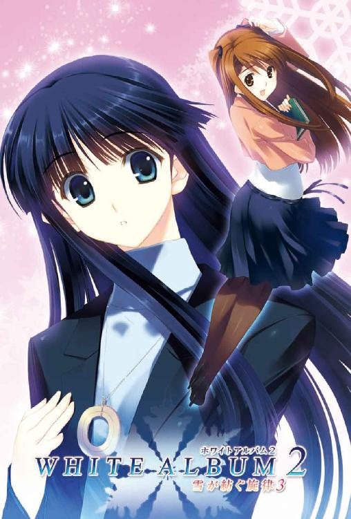
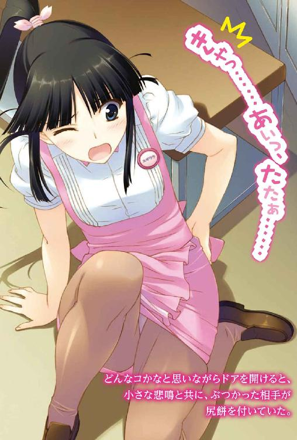
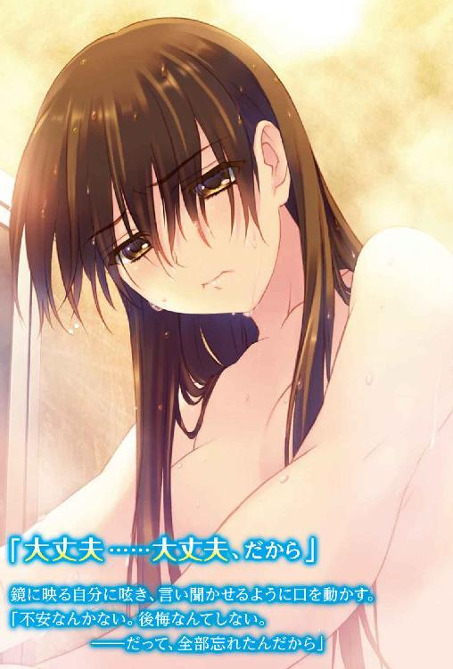
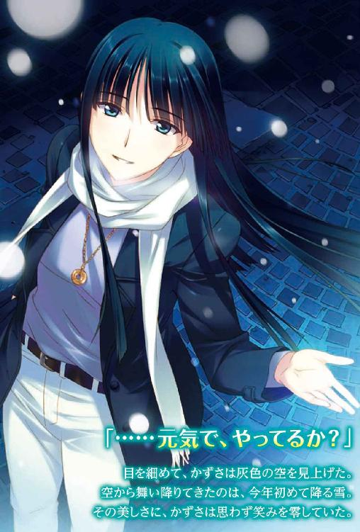
ＷＨＩＴＥ ＡＬＢＵＭ２
雪が紡ぐ旋律３
月島雅也

本書に掲載されているコンテンツの著作権等の知的財産権およびその他すべての権利は、ＳＢクリエイティブ株式会社または正当な権利を有する第三者に帰属します。
本書の内容を権利者の許諾なく複製・複写・翻案・放送・出版・データ配信（送信可能化を含む）などすることはできません。
カバーイラスト
なかむらたけし
口絵 本文イラスト
柳沢まさひで
石畳の上を、ゆっくりと歩く。
足に伝わる堅さは、最初は慣れなかったが、今ではむしろ心地いい。
靴擦れに苛立ちを感じていたときのことを思い出し、かずさはそっと苦笑した。
「寒......」
息を白く染めながら、街の一角で立ち止まる。
見慣れたはずの風景、しかし冷え込んだ古都の姿に、どこか深遠な雰囲気を感じるのは何故だろうか。
今年もまた、この国で冬の季節を迎えた。
日本とそう大差ない四季の移り変わりだが、かずさはいつも特別な想いを抱いてしまう。
忘れられない記憶。忘れたくない心の拠り所。
国を越えてまで護ろうとした思い出。
こんな底冷えを覚える日には、特に。
「......元気で、やってるか？」
目を細めながら、かずさは灰色の空を見上げた。
それは、ただの独り言。
遠く遠く、聞こえるはずのない人に向けた、小さな呟き。
「あたしか？ そうだな、あたしは......」
吹いてきた風に、長い黒髪がふわっと攫われ、流れるようになびく。
肌を撫でる冷たさに、マフラーをぎゅっと締め直した。
寒い。
今日は、どうしてこんなにも寒いのだろう。
そう思いながら、目線を下ろし歩き出そうとして──
「あ」
そのとき目の端でふと捉えたのは、純白の欠片。
「雪だ......」
空から音もなく舞い降りていたのは、今年の初雪。
行き交う人々も足を止め、小さな来訪者たちに歓声を上げている。
「ふふ......」
かずさもまた思わず笑みを零していた。
その美しさに。その可憐さに。
けれど、微笑みは長くは続かず。
「......っ」
その目がふいに、何かを思い出したように伏せられ......そしてかずさは再び歩き出した。
思い描いた人のところではない、どこかに向かって。
今年もまた──雪の季節が、やってくる。
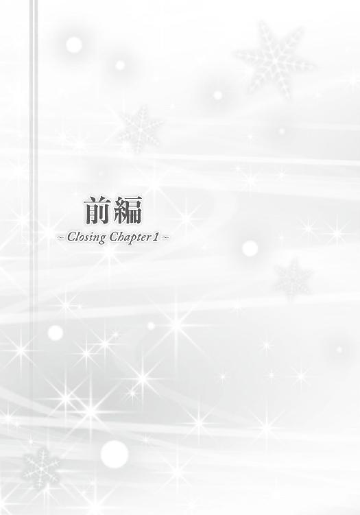
『峰城ステーション～♪』
『......はい、というわけで『ＷＨＩＴＥ ＡＬＢＵＭ』お聴きいただきました。いやー、やっぱりいいですよね。もう完全に懐メロではあるんですけど、でもホント、色あせないっていうか......』
足音が、鈍く響く。
キャンパスから校舎の中へ、そして階段を上り、ある一室の前でそれが止まる。
ドアが開き、足音は室内へと入る。
「............」
付けっぱなしのラジカセから流れる学内ラジオ。
その声の中で、床に転がっているものが一つ──いや、『一人』。
情けないその姿にため息をつき、窓へ向かうと一気に押し開いた。
冷気が、頰を撫でていく。
「寒っ......」
「おい。起きろ」
「う、うう、あれ、窓が開いてる......？」
「開けたんだよ。俺が」
上がった声に、応える。
「ほえ？」
「ほえ、じゃないだろ。起きろ、和泉」
呆れたようなその口調は、床に寝ていた『彼女』にかけられたもの。
その彼女は、眩しいだけの陽射しに目を細めながら、静かに目を開ける。
「ん......あー、春希だぁ。何してんの？ もしかしてあたしを捜しに？ 夜這いしに？」
「どれも違う。お前こそ、なんで研究室の床で寝袋にくるまってんだよ」
うっかり蹴るところだったぞ、と呆れたような呟き。
「それはやっぱり、こうして春希が夜這いに来てくれる予感があったからー」
「アホか。ったく、相変わらず何考えてんだお前は」
「ついでに美味しいご飯でも持ってきてくれたりしてー」
「持ってないし、持っててもお前にはやらん。いいからさっさと起きろ」
「ちぇ。もー、あたしみたいな可愛い子にはホントに冷たいんだから......春希って」
Piece of：春希
『さてさて。それでは最後にもう一曲、お届けしたいと思います。個人的には、この曲も冬の定番ソングだと思ってるんですけど......』
「それで？ どうして研究室で寝てたんだよ」
もそもそと寝袋から出て来た和泉に尋ねる。
「んとね、飲み会で遅くなっちゃって。泊めてくれそうな友達もいなくてさあ。終電逃しちゃったから、ここでぐっすりと。春希も一緒に寝る？」
「誰が寝るか。起きろって言ってんだよ。学園祭も終わったんだし、少しは真面目に生活しろ」
「はいはい、っと......ふわぁ。しゃーない、んじゃそろそろ行動開始しよっかなあ」
「開始ってお前、もうとっくに昼過ぎてるぞ」
「どーりでお腹空いてるわけだ」自分の腹をさする和泉。「ねえ春希、お昼おごってー。腹が減っては何とやらって言うし」
「あのな。毎度毎度俺にたかるのもいい加減にしろよ」
この女は和泉千晶。事あるごとに俺に飯を奢らせようとする、ゼミの仲間だ。この春に知り合ってから、約半年。馴れ馴れしいと言えばそれまでだけど、貴重な存在ではあった。
色んな意味で、貴重な。
「いいじゃない、だってわざわざあたしを捜しに来てくれたんでしょ。なら、ご飯ぐらい奢ってくれてもバチ当たんないって」
「知らん、俺は資料取りに来ただけだ」
棚から小辞典を取り出しつつ、やれやれとため息。
「それにほら、今あたしの財布の中、五十八円しかないんだもん」
「どうやって生活してるんだお前......けど俺だって苦しいんだよ。今日も夜バイトだし、明日は明日で別のバイトあるし」
「むー。可愛い女の子が空腹だって言ってるのにぃ」
わざとらしくむくれる和泉は、寝起きだけあって髪はぼさぼさ、化粧なんてしてもいない。
それでも整った顔立ちをしている彼女に対し、俺が『女』を感じないのは、この性格のせいだろう。
「自分で可愛いとか言うな......」
『峰城大の皆さんにはお馴染み、っていうか皆さんしかご存じないかもしれませんが、ホントに名曲ですよねー』
「............」
「？ 春希？」
「────」
「春希ってば。どうしたの？」
「あ、いや──」
『それではお聴きください。私も大ファンのこの曲。峰城大学付属高校軽音楽同好会で......』
──届かない恋
「......っ」
イントロが流れ出した途端、指が反射的にラジカセのスイッチを切っていた。
「あ。ちょっと春希、あたしそれ聴きたかったんだけど」
「別に、大した曲じゃないだろ」
不自然な言い訳に声が裏返りかける。
「そうかなあ、あたしは好きだよ？ あれ、そういえば春希って付属通ってたんだよね。この曲って付属の軽音が歌ってるんでしょ、ひょっとして知り合いだったりしない？」
「......いや。知らない」
そう言う自分がどんな顔をしているのかわからなくて、さっとドアの方へ振り向いた。
「行くぞ。死なれても困るし、学食の素うどんなら奢ってやる」
「お、さっすが春希！ 愛してるぅ！ ついでにかき揚げでも載せてくれたらもっと愛しちゃうよ～」
あからさまな話題転換に、それでも和泉はいつものようにぴょこぴょこと俺の後を付いてきた。
「......愛さなくていい」
そう呟いて、さっさと歩き出す。
たとえ冗談にせよ、そんな言葉を言われる資格は、俺にはない。
今の、こんな俺には。
聴きたくなかった。俺たちが作り上げ、俺たちが演奏したあの曲を。
聴けば思い出すから。楽しかったあの時間を。全てを壊した俺の愚かさを。
あれから──三年が経った。
十一月、下旬。
大学三年生として迎える冬が、目の前に迫っていた。
◇
やってきた食堂にて。
「......（ずるずる）」
「食ってばっかいないで聞けよ。だからな和泉、何度も言うようだけど──」
「あ、おい北原、学園祭で呼んだナントカってコメンテーターの出演料っていくらだっけ？」
和泉に説教しようとする度、そこかしこから声をかけられる。
「呼んだ人の名前ぐらい覚えとけよ。イベントのゲストは全員リスト作って実行委員長に渡してある。連絡先と講演料も書いてあるから」
「サンキュ、助かる」
「......（ずるずる）」
「おっと悪い。ええと、だからだな──」
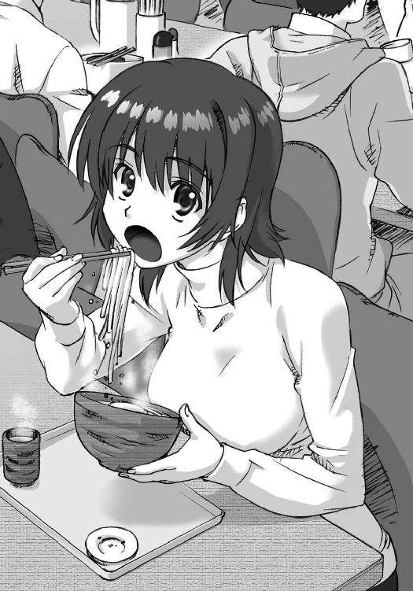
「ねえねえ北原くーん、学園祭の模擬店で使ってたテントって全部レンタルなの？ 陸上部のコが、今度の遠征のときに使いたいって言ってるんだけど」
「ああはい、ほとんど業者に借りたやつですけど、学校所有の物もあります。学務で貸し出し予約できますから。ただ数が少ないんで、先に他の部活が予約してるかもしれませんよ」
「わかった、言っとく。ありがとねー」
「......（ずるずる）」
「たびたび悪い。どこまで言ったっけ、そうだ、研究室で寝るなって話。基本的に四年の先輩しか泊まっちゃダメってことになってんだからな。だいたい研究で遅くなったとかならまだしも、飲み会の後に寄るんじゃない。っておい聞いてんのか」
「......っふう。はいはい、何回も聞いてますー」
うどん（大盛。そして結局かき揚げも奢らされた）をすすりながら、和泉が言う。
「いいから真面目に聞けっての。それに、一応女なんだから、あんなところで一人で寝るな」
「心配してくれるんだ？ なら、今度からは春希のトコに泊まらせてもらおっかなあ」
「断る」
ケラケラ笑う和泉の姿に、ため息をつく。
「つーかお前、研究テーマ絞り込んでんのか？ ゼミもサボってばっかりだし。いい加減、教授にちゃんと相談しにいけよ」
「それがさあ、こないだ質問に行ったら『お前の教育係は北原だから、そっちに相談しろ』って言われちゃって」
「何ぃ？」
なんでだよ......俺は学生で、教育者はあなたですよ、教授。
「さっすが、信頼されてる証拠だね」
「嬉しくない。なんで俺が」
「だって春希って面倒見よすぎだもんね。あたしが言うのも何だけどさ、癖っていうか、もうほとんど趣味の領域？」
「冗談じゃない、勝手に人の趣味を決めるな」
「んじゃあ、さっきからあれこれ話しかけられてるのは？」
「いや、それは──」
反論しかけたそのとき。
「おーい北原くーん、来年のゼミ旅行なんだけどさ、ほら、教授に頼まれてた件」
「え、ああはい、ペンションと温泉とをそれぞれリストアップしておきましたんで、あとは院生の皆さんで決定していただければ」
「あれ、もうそこまでやってくれたの？ 悪いね、ありがとー。あ、お邪魔しちゃってごめんね、和泉さん」
そう言い残しウチのゼミの院生が去っていく中、和泉が「ほらね」とでも言いたげな顔で俺を見ていた。
「し、仕方ないだろ。あれこれ頼んで来るんだから」
「それを断らないところに春希の性格が出てるよ」
かき揚げをかじりながら和泉が言う。
「それにさ、どっちかっていうと自分からあれこれ抱え込みに行ってるような気がするけどなあ、春希って。揉め事に首を突っ込んで苦労したがるタイプ」
「............」
「ま、いいんだけどね」
単なる個人的な意見であろう和泉の呟きは、しかし俺の耳に鈍く突き刺さった。
応えられずにいたら、和泉がさらりと言葉を続ける。
「ところで春希、今からどーするの？」
「どうもこうも講義あるし、夜はバイトだって言ったろ。あ、その前に学園祭の経費の総チェックを実行委員とやって、そうだ、メディア学の先生にもレポートの回収頼まれてたっけ......」
「ほら、やっぱり趣味だ」
つゆの一滴も残さずうどんを平らげてから、やれやれと首を振る和泉。
「そーやってあれこれ詰め込んでないでさ、ちゃんと自分の時間ってヤツを持ったら？ あたしみたいにさあ」
「......ほっとけ」
和泉の言っていることは、確かに的を射ていた──ただ俺がそれを認めたくないだけで。
「ふう、ごちそーさま」
箸を置く和泉。適当なようでいて、こいつはときどき鋭い言葉を零したりもする。そういうところが気にはなるが、結局いつもそれ以上深く踏み込んでくることはなく。
「ねえ春希、あたしさっきからカツ丼セットが気になって気になって仕方ないんだけどぉ」
今日もこうして、絶妙な距離感を保つのが和泉千晶ってヤツだった。
「俺も台所事情が苦しいって言っただろ......ていうかまだ食う気かよ！」
悪びれもせずに言う和泉。
繰り返しになるが、これまで出会った中で随一のぐうたらであるこの女が、今の俺にとってはあまりにも貴重な存在だった。
だって、こいつは──本当に何も知らないから。
三年前のことを知らずに、俺の近くにいてくれる存在だから。
◇
「さってと、春希は授業行っちゃうし、あたしは家帰ってもう一眠りしよっかなあ」
席から立ち上がると、満足そうな笑みで和泉が呟く。
「っておい、次の講義って神学概論Ⅱだぞ、お前も一緒じゃないか」
「そんじゃまたね～」
「待て！ メシ食わせてやったんだから、授業ぐらいちゃんと出ろ」
食器を返却してそのまま去ろうとする和泉を捕まえると、「えー」と嫌そうな顔でこっちを睨んできた。
「ぶつくさ言うな。不本意ながらお前の教育係らしいからな、俺」
そう言って、ふと思い出す。
いつだって授業を寝るかサボるかしていた、あの『お隣さん』を。
「............」
「やだなあ、あたしだってたまには寝ずに漫画読んだりしてるって、あはは......ってあれ、春希ツッコミは？」
「......疲れてるんだよ。いいからさっさと行くぞ」
和泉を促し、食堂を出る。
くだらない雑談をしながら外へ出ると、キャンパスには冷たい風が舞っていた。その肌寒さは、冬の到来を否応なく感じさせる。
冬が、始まる。
また『ＷＨＩＴＥ ＡＬＢＵＭ』の季節が巡ってくる。
時間からは誰も逃れられない。
けれど時間が思い起こさせるのは、時間では解決できないことばかりだ。
「そっかあ、じゃあ春希を助けるために、今日ぐらい真面目に授業聞こっかな」
「お、本当か？」
「その代わりに、後でカフェテリアのケーキセット奢ってー」
「......何が代わりだ、どれだけ俺にたかれば気が済むんだお前は？」
「いいじゃん、食堂ばっかり行ってるとさ、たまーに行きたくなるんだよね、あっちにも」
「俺は別に行きたくない」
峰城大は総合大学だけあって、かなり敷地面積が広い。食事ができる施設も数カ所ある。
俺たち文学部は最寄りの学生食堂を利用していて、距離のあるカフェテリアなどにはほとんど行くことはなかった。
もっとも、俺がカフェテリアに行かない理由は距離のせいじゃない。メニューのせいでもない。
どこよりもカフェテリアに近く、よく利用する学部が──経済学部だから。
「行きたきゃ一人で行け。あと、どっちみち俺は奢らないからな」
「けど頼まれると断れないのがー？」
「いやマジだっつうの」
「からの～？」
「ねえよ！」
俺を破産させる気か。
えーいいじゃん、とうるさい和泉の声にため息をつく。気疲れを感じつつ文学部棟へ向けて歩き出した、そのとき。
「たまには学食もいいよね、メニュー違うし」
「ちょっと遠いけどねー」
「まあ次のコマ休講になったから、空いてる時間で食べられるし、オッケーオッケー」
前から歩いてきた、四、五人ほどの女子グループの会話が聞こえてきた。
「それよりさあ、金曜日の件どーなったの？ 全然話が聞こえてこないんだけど」
「あーうん。南末次でカラオケとその後に飲み、っていうのは前から決まってて、もう予約も取ってあるんだけど......ここに来て開催そのものが危ぶまれてるっていうか」
「え、なんでー？ もともと向こうからの誘いだったんでしょ？」
「ほら、向こうにしてみたら『本命』の出席を望んでたわけでさ......」
はーあ、と一同が深いため息をついた後に、一つの声が上がった。
「......？ えっと、わたし？」
その声に、思わずギクリとする。
隣で「寒いなー、ケーキセットの紅茶が飲みたいなー」と呟いている和泉に反応することもできず、とにかく自然体を心がけた。顔に、何も出さないように。
「そうに決まってるじゃーん。ね、どうしてもダメ？ ウチの学科のコ、ほとんど来るんだけどなあ」
「カラオケだけでもどう？ どう？ 男性陣は医学部が来るんだよ」
合コンを開きたい彼女たちと、そこに誘われている一人のコ。
少し耳にするだけで、ただそれだけの話だとわかる。
でも、ただそれだけの内容を俺は、聞きたくなかった。かといって意識を他に向けることなんて、できるはずがなかった。
「ごめんなさい、金曜日は友達と約束があるから......」
「残念。ていうか医学部のイケメンをもってしても、あんまり食いついてくれないかあ」
「わたし、そういうのは別に......」
「うーん、その男に興味なさそうなところがお嬢様っぽいよね。ミスコンとか出ればきっと優勝するのに、一回も出てないんでしょ？ もったいないなあ。たしか付属のミスコンじゃ優勝してるんだっけ」
「けど、そういえば一緒にカラオケ行ったことってなかったよね。合コンはともかく、ちょっと歌声聴いてみたかったかも」
「あ、だよね！ ミス峰城大付の歌、聴いてみたーい」
はしゃぐ周囲に、話題の中心である彼女は一人、呟くように言う。
「ごめん、わたし......歌わないんだ」
「そうなの？ なんかもったいない」
「ねー、せっかく声綺麗なのに。まあ見た目もだけど......目の前で歌われたらさ、どんな男でもイチコロだよね」
誰かが言ったその台詞に、息が詰まりそうになる。
気持ちを落ち着けながら、やがて俺は彼女たちとすれ違う。決してそちらを見ないようにして、前を見つめ続ける。
どうしても視線を向けるわけにはいかなった。
そこに誰がいるのかは、見なくてもわかっている。
けれど、だから見る必要がないのではない。
わかっているからこそ──目を逸らすことしか、俺にはできないのだ。
「......っ！」
なのに、俺の目は勝手に彼女を捉えてしまう。そして、目の端で見ているだけなのに、俺にははっきりとその表情までわかってしまう。視線を前方に固定したまま、器用にやってのける。
ハッとしたような驚きに続いて、それが綻ぶように嬉しそうな表情が彼女に浮かぶ。
いや......浮かびかけただけだろう。
俺は、目を合わせることもなく、こうして通り過ぎて行くのだから。
「......っ」
見なくてもわかる。きっと今、彼女が浮かべているであろう寂しげな表情が。
「あれ、大丈夫？ どうかした？」
「ううん。何でも......ないの」
そして、他人にそれを気付かれまいと、慌てていつもの顔を取り繕うその様子も──
「............」
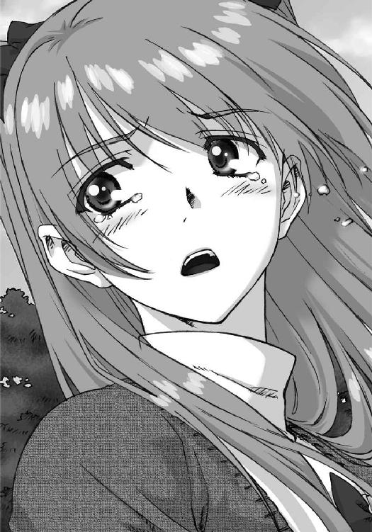
「どしたの春希、黙っちゃって。知り合いでもいた？」
「......いいや」
細い細い氷柱を、心に突き刺されたような感覚。
冷たい痛みが走り、口の中に苦いものが広がっていく。
それでも俺は、無理やりに足を引きずって、その場を離れていった。
あれから。
あれから三年が、経っていた。
◇
「ふう......」
午前一時半。
詰め込んだ全ての予定を消化し終え、家に帰り着いたのは夜中だった。
学習塾でのバイトが済んだ後、工学部の知り合いに頼まれて実験の手伝いをしていたのだ。俺なんかじゃ完全に門外漢だけど、研究室の皆が風邪でダウンしたんだ、なんて泣きつかれては、無下に断るわけにもいかず。バイトで疲れた身体に鞭打って、どうにかこうにかやり終えたのだった。
とはいえ──俺を忙しくしてくれて、逆に有り難くもあった。その分、何も考えずに済むから。
「............」
鞄を置き、訳もなく長いため息をつく。
塾のバイトは今日が最後だった。大学が忙しくなりそうなので、雇用契約の更新時期を機に辞めたのだけれど、もう少し続けてもよかったかもしれない。まあ、時間が余るようならまた新しく探せばいい。今度はもっとキツいバイトを。
ともあれ、今全身を覆っているのは充分な倦怠感。部屋の真ん中に突っ立ったまま、ベッドに寝転がる気力すらなくて、ぼんやりと室内を見回してみる。
真っ白な壁紙、必要最低限の家具家電、そしてシンと静まりかえった空気。我ながら生活感はほとんど感じられない。
実家を出てから三年。
まるでモデルルームのようなこの部屋が、今の俺の世界だった。
南末次駅から徒歩十分のワンルームマンション。月のバイト代の半分以上と引き替えに手に入れた、俺だけの城。ほとんど寝に帰るだけとはいえ、誰からも隔離された特別な空間だ。
母親からも、友達からも。
そして大切な人からも──
「......っ」
昼間の光景を思い出したそのとき、ポケットの携帯が震え、メールの着信を告げた。
あまりのタイミングに少し迷いつつも、携帯を手にする。
見ると、メールは『彼女』からではなかった。
そのことにホッとしつつも、そこに表示されていたのは──
「武也......」
彼女ではなかったものの、決して無関係ではない人物の名前。
『よお。今度の金曜、久々に飲もうぜ。サシでな。御宿で六時集合。ぜってー来いよ』
武也からは今でも頻繁にメールが届く。すっかり付き合いが悪くなった俺なのに、こうしてマメに連絡してくれるあたり、やっぱりあいつはいいヤツなんだろう。
けれど。
『すまん、金曜日も夜までバイト。なかなか暇がなくてさ。悪いけどまた今度な』
俺の指は自然とそう返信する。
講義を詰め込み、バイトを詰め込み、予定を詰め込み続ける俺。武也と会う機会は、文学部と経済学部という隔たりも手伝い、今ではほとんどなくなってしまった。こうして誘ってくれても──金曜は本当は何もない──それに乗ることはなくなった。
なぜなら......。
「くそっ」
ゾクリと悪寒に襲われ、それをかき消そうと反射的に叫ぶ。
震え出した身体で脱衣所に駆け込み、服を脱ぎ散らすと、風呂場で熱いシャワーを頭から浴びる。
絶え間なく湯を浴びているのに、どういうわけか冷や汗が止まらない。
もう、大丈夫だと思ったのに。
会うつもりはもちろんなかったけど、遭遇しても大丈夫だろうと、どこか楽観視していた。
しかしその見通しは、どうやら甘かったらしい。
全身にべっとりと何かが絡み付く。シャワーでは流し落とせない何かが。
一度会ってしまっただけでこれだ。
話をしたわけでもない、ただ顔を見ただけなのにこれだ──
結局のところ、他に選択肢がなかったとはいえ、最初から無理な話だったのだろう。
何の決着も付けないまま、雪菜のことを頭の中から追い出そうだなんて。
Piece of：雪菜
「............」
いつの間にか眠っていたらしい。
ゆっくりと身体を起こすと、そこは自分の部屋。
昼間、『彼』に出会った後の記憶はほとんどない。それでも、おそらく帰宅した自分が泣き疲れて──というより涙を流し疲れて寝てしまったのだろうと想像は付いた。
久々に。
本当に久々に彼の顔を見ることが出来た。彼もこちらに気付いてくれた。
あの瞬間、つい微笑みが零れてしまった。彼に会えたことが、単純に嬉しかった。
──それだけに、その後のショックも大きかった。わかっていた、はずなのに。
あれから三年が経った。
色々なものが変わってしまったけれど、雪菜のこの部屋だけは何も変わらない。ただ、ここで一人で泣く回数は増えた気がする。今年になってからは特に。
『転部、しようと思ってる。経済から文学部に』
彼がそう切り出したのは半年前。
予想もしていなかった告白に驚き、その後自分がどんな受け答えをしたのかほとんど覚えていない。
しかしその一方で、やっぱりそうなんだ、という思いもどこかにあった。転部のことではなく、やっぱり避けたいんだ、という思いが。
大学入学と共に、彼はアルバイトを始めた。必要以上に講義を履修し、あちこちに顔を出して忙しく走り回るようになった。何かと理由をつけて、雪菜たちと一緒に過ごさなくなっていった。
雪菜が彼と会える時間は見る間に減り、せいぜい授業中ぐらいのものになっていき......そして、最後には学部を変えることによって、その時間さえも削ろうということなのだろうと、わかった。
転部の理由は、将来マスコミ関係の会社に入りたいから、だそうだ。それは全くの噓ではないにしろ、無理やり作り上げた真実のように雪菜には思えた。
全ては、ただ雪菜を避けるためだけに──
「っ......」
かつて呆れるほど一緒の時を過ごした三人。彼と、雪菜と、そして冬馬かずさ。誰よりも深く繫がったはずの三人は今、あの時間が噓だったかのようにバラバラだ。
大学に入学して以来、彼とかずさの話をしたことは一度もない。高校時代のことさえほとんど口にしなかった。けれどお互い、過去を忘れることなんて不可能だ。
だからこそ彼は、雪菜を避け続けているのだろう。そうして、雪菜に嫌われようとしているのだ、きっと。
それでも──それでも雪菜は、そんな感情を持つことなどなかった。ただ彼のことが気になって仕方ないだけ、だった。
元気でやっているだろうか。多忙のなか、きちんと食事を取っているだろうか。
文学部の授業は？ 成績は？ ゼミの様子はどんな感じ？
今日一緒にいた女の人は......友達？
「うっ......ああっ......」
再び零れ始めた涙が止められず、布団を被って縮こまる。
どれだけ避けられていようと、嫌いになんてなれるはずがなかった。
三年前の件で、悪いのは雪菜なのだ。三人の関係を引っかき回したのは、他ならぬ雪菜だったのだ。
だからこそ、彼を嫌うことも、憎むこともあり得なかった。
そして同時に、彼が雪菜を避けるとしても、そのことに異を唱えることは出来ない。そんな資格が雪菜にはない。悲しさに、寂しさに打ち震えることしか出来ないのだ。
そうして──それでもいつか、彼がもう一度自分を見てくれないだろうかと、もはやあり得ないであろう未来をただ、待っている。
『俺は絶対に小木曽から離れていったりしない！』
「はるき、く......うああっ......」
いつか聞いた、そんな彼の一言を、拠り所にして。
Piece of：春希
雪菜に出会ってしまった、その翌日。
「ふわあ......」
授業を終えた後、マンションに帰るべく欠伸をかみ殺しながら夕方の校内を歩く。
結局昨日はあれからほとんど眠れなかった。目を閉じる度に、雪菜の笑顔と寂しそうな表情がちらついて。
と同時に──
『春希くんっ』
三年前の、あの明るい笑顔が思い出されて。
「............」
記憶の奥底に封印し、必死に見ないフリをしてきた、高校生活最後の半年間。
雪菜と、雪菜の歌声との出会い。
ミス峰城大付なんかじゃない、ただの小木曽雪菜との出会い。
希望だけを信じて突き進んだバンド。最高だったライブ。
生まれて初めてできた、大切な彼女。
──そして、俺の裏切り。
「......っ」
雪菜は、変わった。
時に子供っぽく、時に優しく、いつも楽しげだったあの笑顔は、もう見られなくなった。三年をかけ、無理や、我慢や、諦めに彩られた哀しい笑顔に取って代わられていった。
他ならない、この俺のせいで。
けれど皮肉なことに、雪菜の美しさに関して言えば、より磨きがかかっている。
高校の頃も綺麗だった。綺麗で、可愛くて、素敵な女のコだった。でも今は、可愛らしさが薄れた代わりに、息を呑むほど綺麗な女性になっていた。年を重ねれば重ねるほど、少女は大人へと変わっていった。
もはや誰もが目を奪われる。本人の控え目な感情とは裏腹に、その圧倒的な存在感は男たちの視線を惹き付けてやまない。
しかし雪菜がその視線に振り向くことはない。......気付いてさえいないかもしれない。
雪菜はただ、俺だけを見ていた。あんなにも傷付け、裏切った男に対し、いつでも笑いかけてくれていた。悪いのは自分だと思い込み、決して俺の非を認めず、哀しい微笑みを絶やそうとはしなかった。
ずっと、俺のためだけに笑ってくれていた。俺の側にいてくれようとした。こんな俺から──離れようとしてくれなかった。
そのままじゃ自分の傷口が絶対に癒えないとわかっているのに、それを無視して、ただ俺の苦しみだけを楽にしようと......。
「あいたっ!?」
突然誰かに頭をはたかれた。
「よっ。ずいぶん眠そうだな、澱んだ目しちまって」
「......いてぇな武也。いきなり叩くことないだろ」
そこにいたのは、見慣れた親友。
「何言ってんだよ、人が顔覗き込んでも全然反応しなかったくせに」
「え、そうか？ 悪い」
確かに全然気付かなかった。
「まーたバイト漬けか？ ちったあ寝るなり遊ぶなりしろよ、大学生」
やれやれといった感じで笑う武也。こいつの雰囲気だけは、高校の頃からずっと変わらない。
「武也こそどうしたんだよ、わざわざ俺を待ってたのか？」
「お前を捕まえようと思ったら、朝イチか授業の終わりを待つしかないだろーが。メールはともかく電話にゃ出てくれねーし、こうしてやってきたわけよ」
そう、今日は何度か武也からの着信があったけれど、結局出ずじまいだった。
「なあ、バイトと授業ばっかじゃマジでつまんねーだろ。飲みに行こうぜ、金曜日。たまにはいいじゃねーか、男二人でさ」
「だから金曜はそのバイトがあるってメールしただろ？ 今ちょうど忙しい時期なんだよ」
「いつ訊いても忙しいって言われてる気がするぞ、俺」
「......タイミングが悪いんだよ、お前」
俺の言葉に武也がため息をつく。
「バイトなんだから一日ぐらい急病で休んだっていいだろ」
「あのな、金もらってる以上、バイトでも責任ってヤツがあるの。それにこっちは生活がかかってるんだからな、今日の夜だってバイトだし」
「たった一日で立ち行かなくなるような生活設計してる北原春希じゃないと思うけどな」
「そういう褒めてんだかけなしてんだかわからん言い方はやめてくれ。とにかく、悪いけど金曜は無理。じゃな」
そう言って、止めていた足を動かし歩き出す。
「おい春希、ちょっと待っ......」
「ちょっと武也くんっ！」
突然聞こえた誰かの声に、俺も武也も思わずそっちを振り向く。そこに立っていたのは、俺の知らない女の子。
「げっ、久美ちゃんっ？」
「真由子に訊いたら、武也くんから旅行に誘われたって。真由子とはそういう関係じゃないって言ってたよね」
「あ、あーいやその、それには大きな誤解があるみたいでさ......」
うろたえ始めた武也の様子に、いつものヤツか、と俺はため息をつく。
あっちこっちに手を出してるおかげで、武也はこうやっていきなり女の子に詰め寄られることも珍しくない。高校のときもたまにはあったけど、大学に入ってからはますます交遊関係を広げてるようだ。可愛いコを見ると口説かずにはいられないらしい。やれやれだ。
「......はあ」
痴話喧嘩ほど聞いてて胸焼けがしそうなものはそうそうない。どうせ最後は、武也が得意の言いくるめで誤解（じゃないんだろうけど）を解くか、騙されなかった彼女がビンタでも残して去っていくか、どっちかだ。
そこまで見る気なんてないので、さっさと歩き出す。
「あっ、おい春希っ......」
「武也くんっ！」
背中で二人の声を聞きながら、その場を後にした。
「......悪いな武也」
呟いた言葉は誰にも聞こえることはなく、夕方の冷たい風が攫っていく。
高校の頃からの、俺のたった一人の親友。
今でも──俺が転部し、接点がほとんどなくなった今でも、あいつは俺のことを気に掛けてくれている。そのことは、本当は泣きたくなるほど有り難い。
けど、昔みたいに毎日一緒にいることは、もう出来ない。どうしても、思い出してしまうから。
雪菜の笑顔を。三年前の優しい笑顔と、今の哀しい笑顔を。
そして、同時に思い出してしまうのだ。
もうこの国にはいない、あいつのことを......。
「っ......」
俯き、口の中に苦いものが広がるのを感じ始めた、そのとき。
「あの、すみません──」
誰かに、声をかけられた。
◇
「え？」
かけられた声に顔を上げると、校門前に立っている少女が目に入った。
ポニーテールの黒髪を風に揺らす姿は、懐かしい付属の制服に身を包んでいる。
だけど誰だろうか、見覚えがない。
「えっと、俺？」
「はい。突然失礼します。えっとわたし、付属の生徒なんですけど、内部進学するかどうか迷ってて。それで、大学をきちんと見ておこうと、見学しに来まして」
ああ、大学の下見か。こういうコはたまにいるけど、一人で来るなんて珍しいな。
「それで、不躾なお願いで申し訳ないんですが、もしよかったら、大学の中、案内してもらえませんか？」
「案内？」
「お願いしますっ」
ぺこりと小さく頭を下げる彼女。
案内ったって......俺は経済学部には近付けない。
「悪いけど俺、自分が行かない校舎のこととか、全然知らないんだ。誰か詳しそうなヤツ捕まえるから、そいつに──」
「あ、ええと......だ、大丈夫です、先輩が普段利用している施設だけで。あまりお時間取らせても恐縮ですし」
何やら慌てたように言う彼女。
「けど、せっかく見学に来たんなら、一通りちゃんと見るべきじゃ」
「それはその、あの......そう、真面目そうな方に案内してもらいたいんです。なのであなたに」
「真面目？ 俺、真面目に見える？」
「はい、とても。......少なくとも、あそこで騒いでる人よりはずっと」
彼女の視線の先には、相変わらず修羅場中の武也がいた。確かにあんな人間には声をかけたくないか。
それにしても、ずいぶんハッキリ物を言うコだな。
「あの、ダメでしょうか」
「ええと......まあ、俺の行動範囲だけでいいなら」
帰ろうと思っていたが、まあいいか。
頭の中を、少しでも三年前から遠ざけるのにはちょうどいい。
「ありがとうございます、よろしくお願いしますっ」
微笑む彼女を連れてキャンパス内へと戻ると、ちょうど武也が女の子から逃げ出すところだった。やれやれ。
「じゃあ、とりあえずこっちに......」
「あ、その前に。わたし、杉浦小春っていいます。どうぞ杉浦と呼んでください」
「杉浦さんね。俺は北原春希、よろしく」
「北原先輩、ですね、はい。こちらこそよろしくお願いします」
そう言って、彼女、杉浦さんは何やら小さく頷いた。何なんだろう？
「北原先輩、先輩は何学部なんですか？」
「ああ、文学部だよ。だから文学部棟と共通校舎ぐらいしか案内できないけど」
「構いません。お願いします」
わずかに覚えた違和感は、結局すぐに頭から払われていった。
◇
「......とまあ、そんな感じかな」
結局、文学部と共通校舎しか案内しなかったけれど、杉浦さんは俺の説明を聞きながら何度も頷いていた。
大した説明もできなかったが、何かの役に立っただろうか。
というか、校舎や教室の説明していても、どうも施設より俺の顔をちらちら窺っていたような気がしてたのだが......気のせいかな。
「で、ここがいくつかあるうちの一つの食堂。近いから俺はここしか来てないけど」
「なるほど、広いですね。さすが大学って感じです」
そして最後にやってきたのが、食堂。
「ここで注文して、トレイに載せて会計まで持っていく。ドリンクもペットボトル買うより安いし。あ、せっかくだから休憩していこうか。君もコーヒーでいい？ 買ってくるよ」
「えっ、いえそれぐらい自分で」
「いいよ、安いし。普段もっとたかるヤツがいるから、そいつに比べたら大したことない」
「ありがとうございます。......気が利く、と。結構ポイント高いなぁ」
「え、何か言った？」
「いえ別に。それじゃあお言葉に甘えて、いただきます」
コーヒーを飲んでいる間、大学に関する彼女の質問に答える。
少し他愛のない会話も交わしてから、出会った校門まで彼女を送った。
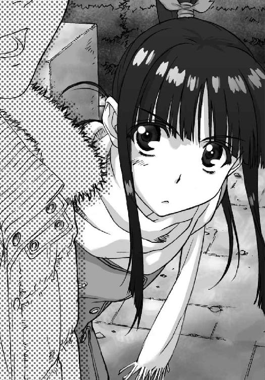
「それでは、今日は本当に助かりました。ありがとうございました」
そう言って頭を下げる杉浦さん。役に立てたならいいんだけど。
質問が途中から俺個人のことにまで及んでたのは、学生の生の意見を聞きたかったのだろうか。だとするとずいぶん熱心なコだなあ。
「君も頑張って進路考えて。あ、駅まで送ろうか、ついでだし」
「え？ ええと、いえ、大丈夫です、まだ明るいですし。......ふむ、感心感心」
「何？」
「と、とにかく平気ですので。それじゃ、失礼します」
「ああ、気を付けて」
去っていく後ろ姿を見送る。
真面目そうだけど、ちょっと変わったコだったな。
「............」
自分で浮かべたその言葉に、今度は雪菜をイメージしかけ、慌てて思考を振り払う。
よせ、考えるな。何も──考えるな。
大きく深呼吸してから、その場を後にする。
風が静かに、頰を撫でていった。
◇
午後十時半。
「おーい、これ誰が外注出したんだよ」
「いや書けないってお前、それ落としたら４ページ丸々どうする気だ！」
「もしもし～、わたくし開桜社......あれ、先生？ 先生ー!?」
「副編が言ってたってあんた、こっちの編集部は話が違うわけでしょ、いい加減に......」
怒号にも似た声があちこちで飛び交うのは、塾を辞めた今、唯一となった俺のバイト先。
「あ、おい北原、前頼んだアンケート集計どうなった？」
もちろんその声は、机でパソコンと向き合っていた俺にも降り注ぐわけで。
「やっておきました、あと項目ごとにグラフ化してありますんで、適当に使ってください。今メールします」
「バイト、これ軽く校正しといてくれ。今日中！」
「えーと、じゃあ日付が変わる前に何とか」
「悪い北原、こっちの原稿２ページにレイアウト頼む。うわやばい、早く行かないと遅れるっ」
「......いいですけど、わからないところは電話しますよ？」
「あー、ごめん、メールで。じゃあ頼んだっ」
俺の周囲も、そうじゃないところも、大忙しだ。
専門誌から大衆紙まで数多くの、主に雑誌を手がける大手出版社、開桜社。
その本社ビル三階。
雑誌『開桜グラフ』編集部が、俺の仕事場だ。
「北原くーん。沿線カレー屋ランキングの記事がさ、今度丸ノ内線に突入するんだけど～」
「またネットのレビュー拾い読みでいいですか？ そこからいくつかに絞っときます......ていうか毎回これで大丈夫なんですかね」
「だってえ、実際に全部の店行ってる暇なんかないんだもん」
かもしれないけど、バイトの俺に結果がかかっているランキングってどうなんだろう。
もっと経費と時間くれたらなあ、と呟く彼女は編集歴三年半の鈴木さん。
「『そんなの、どっちも作り出すもの』なんじゃないですか？」
「わたしはあの人みたいにはできないよ。とても同じ人間とは思えない......はーあ」
編集者のご多分に漏れず、開桜グラフの皆も普段からメチャクチャ忙しい。誰が何時から何時まで働いてるのか判然としないし、バイトの俺に投げられる作業量だって尋常じゃない。
ま、おかげで俺にとっては夕方から真夜中まで働ける、貴重な職場なんだけど。なにしろ週に三、四日顔を出すだけで、目が回りそうな仕事量と、それに見合った収入を手に入れることができる。忙しさも収入も、どちらも今の俺にとっては必要なものだから。
ともあれ、皆がヒーヒー言ってるのは日常茶飯事、文句の一つも言いたくなるところだけれど──そうもいかないのは、上司のせい。
開桜グラフには他誌と兼任の編集長がいるはずなのだが、こっちに関わってくることはほとんどない。なぜなら、一人の怪物が開桜グラフを取り仕切っているからだ。
大量の仕事を皆に与えながら、自分はそれを遙かに凌ぐ仕事量を抱え、しかもそれを完璧に仕上げてみせる、仕事の鬼。
「鈴木さんもそのうちあんな仕事ぶりを求められると思いますよ」
「だから無理だってえ。ただでさえ彼氏に会う時間少ないのに、これ以上仕事したら愛想尽かされちゃう」
はあ、と鈴木さんがまたため息をついた、そのとき。
「だったらもっと能率上げればいいだけでしょ。時間なんて作り出すものよ」
聞こえた声に、思わず振り返る俺たち二人。
「麻理さんっ？ いつ帰ったんですか？」
驚いた顔で鈴木さんが尋ねる。
「ついさっき。顔だけ出そうと思って、空港から直接来た」
何でもない顔でしれっとそう言う女性は、開桜グラフの実質的な責任者、風岡麻理さん。
タイトなスーツに長身、そして鋭い瞳で見る者に威圧感を与えるこの人が、俺の直属の上司だ。
「お疲れ様です、麻理さん。おかえりなさい」
「ただいま......ん？ 北原、ずいぶん仕事を抱えてるみたいじゃない？」
ちらりと俺のデスクを見て、眉をひそめる麻理さん。
「あ、わたしたちが北原くんに押し付けてるわけじゃないですよ、何か仕事ないかって北原くんがウェルカム状態だったから」
慌てたように言う鈴木さん。
「そうなの北原？」
「いや、まあ」
「あんたに指示を出すのは私のはずでしょ？ 勝手に他の部員から仕事もらうなって何回言ったかわかってる？」
わずかに睨むような顔で麻理さんが俺を見る。
「......麻理さんに頼まれてた仕事、三日前に全部片付いちゃったので。誰かに何か仕事もらって働いてないとバイト代もらえませんし、こっちも生活がかかってますから」
「だからってね。いつも言ってるでしょ、そんなに根を詰めすぎてるとそのうちパンクするって」
「大丈夫です、そう簡単に倒れるつもりはないので」
「そんな覚悟でバイトする学生なんて聞いたことない......」
鈴木さんが呆れたように呟く。
でも、別にこれぐらいで死ぬわけでもないし──できれば倒れるギリギリぐらいには、忙しくしていたい。
「それより出張どうでした？ 今回はロンドンでしたよね」
「ヨーロッパ行ったのに私が一ヵ国だけで済ませると思う？ 五日で八カ国回ってきた。ドイツのモーターショーとか、フランスでアニメフェアも取材してきたし、映画祭は二つ寄ってインタビューもしてきた。あと紀行文書けるように観光地も回ってきたし、レストランもあっちこっち」
「え？ それ、完全に編集部またいでる仕事じゃ......」
「経費削減のためよ。ちゃんと他の編集部から取材費せしめてきたし、私が書いた方がどうせいい記事になるしね」
あはは、と楽しそうに笑う麻理さん。
「あのー。今の話を踏まえた上で訊きますけど、北原くんが仕事しまくってる理由って、もっと根源的なところにあると思いません？ 主に上司とか」
そっと肩をすくめる鈴木さん。
そう、俺なんか比じゃないほどの仕事魔が、風岡麻理という人なのだ。一旦動き出したら、ひたすらストイックなまでに仕事に打ち込み続ける、恐ろしい集中力と体力を有する人間。
──どこかの、誰かみたいに。
「何言ってんの。確かに私は山ほど仕事抱えるけど、休むべきときは休んでるわよ」
「そうですかあ？ 今日だって家に帰ればいいのに、こうして会社来てるし。出勤、明日からのはずですよね」
「顔出しただけでしょ？ それに、まだ休まなくちゃいけないタイミングじゃないし」
「休むのってタイミングとかの問題じゃないような......」
「わかってないわね。いいわ、そこまで言うなら休んであげる」
「はい？」
鈴木さんが首を傾げたそのとき。
「──私今日は休み！ 今から飲みに行く人ー！ 奢ってやるぞ！」
他の編集部にも響き渡るほどの声で、麻理さんがそう叫ぶ。
この指とまれ、とでも言うように、人差し指を立てて。
「「「「「........................」」」」」
一瞬の静寂。当然激務の真っ最中である編集者たちは、誰一人乗ってくることなく。
むしろ恨みがましい目が注がれる。
「ほらね。私が休んだって全然面白くないでしょ？」
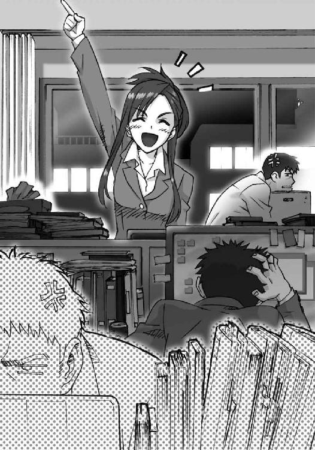
そう言って麻理さんは肩をすくめた。
「えーっと、やっぱりそういう問題じゃないような気がするんですけど」
呆れたように言う鈴木さん。
「とにかく私はちゃんと自制できてるってこと。けど、北原は自制どころか度を超えて仕事してる」
「別に俺だって、ちゃんと自制ぐらい──」
「できてない。私の指示通りに行動してない時点で、自制してないし。ちょうどいい、ちょっとこっち来なさい」
「え、あ、あの麻理さんっ？」
ぐい、といきなり袖を引っ張られ、そのままずるずる引きずられていく。
鈴木さんの何とも言えない表情に見送られながら。
◇
「すいません、勝手な真似して」
「ん。とにかく、これからは気を付けて」
「はい」
一通り説教された後、休憩室の自販機の前で、麻理さんは缶コーヒーを一気に飲み干した。
説教はするが、引きずらないのがこの人だ。カラン、と空き缶を捨て、「そんなに暇だったんなら、もっとたくさん仕事あげるから」と笑う。
「ちょうどやってもらいたいこと色々あるしね」
「もしかして、今回の取材関連ですか？」
「そ。タスクがあれこれ目一杯だから手伝って。インタビューなんか合計四カ国語になっちゃったし。起こし甲斐も訳し甲斐もあるわよ」
「英語と、あとフランス語なら多少何とかなりますが、他は無理、というか単純に時間がかかりすぎます。他の人に振った方が効率的です」
大量に予定を詰め込み、並べ替え、仕分け、処理をして。
物事に優先順位を付けるとか、効率化とか、この三年間でそういう作業は大分慣れた。性分だと言えるぐらいには。
「その判断は正しそうね。きっと教える人間がいいのね」
「ええ。おかげで俺は可愛げを失ったみたいですけど」
「言ってくれるじゃない」
麻理さんが小さく微笑み、とにかくインタビューの件はそうするわ、と呟く。
「ただね北原、一つだけ言っておくけど、やっぱりあんた仕事しすぎ」
麻理さんが俺の目を覗き込むように言う。
「いや、今俺に大量の仕事を回そうとしてる人の言う台詞ですか？」
「あんたの姿勢の話をしてるの。人事部の同期に聞いたけど、あんた『一番大量に仕事をくれそうな人の下に付けて欲しい』ってバイトの面接で言ったそうね。何それ、ドＭ？」
「いえ、その方が早く仕事を覚えられるかと思って。将来出版社狙ってるんですよ、俺」
「それだけ？」
「そうですよ。もちろん、仕事しないと生活できないっていうのはありますけどね」
実家からの仕送りなんて、頼む気にもならないし。
「私はあんたが......忙しさだけを求めてるように見えるけど」
麻理さんが静かに言い、俺は一瞬言葉に詰まる。
「別に......そんなことないですよ。それを言ったら麻理さんこそ自分を追い込みすぎじゃないですか？」
「全然。さっきも言ったでしょ？ 私は自分の限界がわかってて、それを超えないように無茶してるだけ。別に破滅したいわけじゃない」
「っ......」
また、息が詰まる。
そんな俺の様子をどう捉えたのかわからないが、麻理さんはそれ以上深く尋ねてはこなかった。
「──とにかく、働くなって言ってるわけじゃないの。仕事頼んでるのはこっちだし」
「はい......」
「でもね、学生なんだから他に色々やることあるでしょ。遊んだりお酒飲んだり趣味に没頭したりとか。それこそあの峰城大の学生なんだし、そういうことには事欠かないでしょ」
「峰城大生にも色々いるんですよ。俺みたいな......他にすることもない、退屈なヤツが」
「ホントに自分がそうだと思ってるんなら、いいけどね」
「............」
今日の麻理さんはいつになく痛いところを突いてくる。さっさと退散した方がよさそうだ。
「それじゃ俺、今日はもう失礼します。今あんまり働くなって言われたばかりですし」
「ん、お疲れ」
去りかけた俺の背中に、「ところで北原」と麻理さんの呆れたような声。
「言っておくけど、仕事持ち帰らないように。バイトなんだから」
当然持ち帰るつもりだったのだが、見抜かれていたらしい。
聞こえないようにため息をついた。
こっちは、破滅したいのに。
「バイトはちゃんとバイト先でやること。いいわね」
「......はい」
「まったく。ああ、そんなに働きたかったら、金曜日来てもいいわよ。さっき言ったインタビュー起こしとか、できれば早めに始めたいし」
「そうですか、ありがとうござい──金曜日？」
刹那、ふと頭をよぎる一つのこと。
金曜日は──
「ああ、用事あるならいいわよ。ていうか北原、そういうバイト以外のことをもっと大切にしなさい」
「いや、その。......すみません。来られるかどうか、まだわからないです」
迷ったあげく一応そう言っておく。
俺の呟きに、だからそっちを優先しなさい、と麻理さん。
だけど俺には、どうするのが正解かなんてわかりはしないのだ。多分、永遠に。
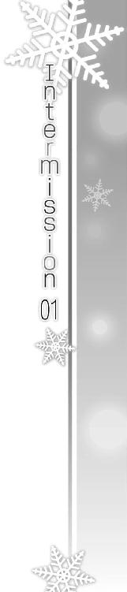
「......もしもし？」
「うん、わかってる。大丈夫だって」
「そうしなきゃ意味がない。せっかくここまで──求めてた人のところまで、来たんだからさ」
「だから好きなようにやらせてもらうだけ」
「そんなことはいいの。これだけは絶対にやり遂げるから」
「心配いらないから。いいから任せといて。じゃあね」
「ふう。さてと、それじゃ──やるか」
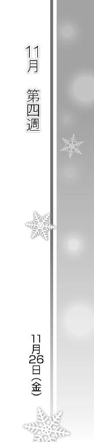
Piece of：春希
そして、迎えた金曜日。
「いよっ」
「......また来たのかよ武也」
夕方、文学部棟を出ると、武也が待ち構えていた。どうやら今回も再度、俺の授業の終わりを狙ったらしい。
「また来たぜ。今日はもう授業ねーよな？ 帰るだけだろ？」
「バイトがあるってこの前言ったばっかりだろうが」
「たまには休めばいいだろ。春希と相当飲んでねーし、男同士の付き合いしようぜ」
「武也が女の子のいない飲み会に興味あるなんて知らなかったぞ」
「お前がそんな飲みをご所望ならいくらでもセッティングするけどな」
「そんなのは──」
「何だよ、もう心に決めたコがいるってか？ ははっ」
わざと冗談めかして武也が言う。
「......何言ってるかわからん」
校門に向けてさっさと歩き出すと、待てよ、と武也が追ってくる。
「とにかく飲もうぜ、春希もたまには誰かと話ぐらいしねーと」
「悪いけど武也と違って、俺は毎日そんなに代わり映えしないんでな。これといって話すこともない」
「なら俺が話すからよ。一日ぐらい仕事よりこっちを優先してくれもいいだろ？」
麻理さんに言われたことをふと思い出す。
優先すべきものは何なのか。
「............」
「な、いいだろ？」
黙っていると、笑いながら武也が俺の肩に手を置く。
こいつは、こいつだけは、昔からずっと変わらない。
今から一緒に飲みに行って、武也の馬鹿な話を聞けば、きっとそのとき、俺は多少なりとも楽しいと思えることだろう。
けれど、後からそれを後悔するような気がするのだ。
楽しいとか、嬉しいとか、そんな感情を持つ資格が俺にあるなんて、思えないから。
それにきっと、会話の一つ一つが雪菜に繫がり、そして三年前のことを思い出してしまうだろうから。
「武也、俺......」校門に差しかかったところで、口を開く。「俺は──」
このとき自分が何を言おうとしたのか、思い返してみてもわからない。
予期せぬ第三者からかけられた声に、それどころではなくなってしまったから。
「──あ、あのっ！」
「え？」
俺と武也が同時に振り向く。
立っていたのは、峰城大付属の制服を着た一人の少女。
武也め、未だに付属のコにまで手を出してんのか、と思ったのは、ほんの一瞬。
彼女は俺の知っている人物だった。
「矢田？」
「ご、ごめんなさい先生。勝手に押しかけてきちゃって......」
どこか慌てたように呟くのは、塾でバイトしていたときの、元教え子だった。
矢田美穂子。
やや引っ込み思案だけど真面目で、いつも授業を熱心に聞いてくれた優等生。
数日前の授業が最後の別れだったはずだけど、どうやら大学まで来て、校門を背に俺を待っていたらしかった。
「それはいいけど、どうして俺の帰る時間......もしかして放課後からずっと待ってたのか？」
「そ、その、わたしが勝手に待ってただけなので」
「そうか？ 矢田らしくない無茶だな」
「す、すみません」
「いやいいんだけどさ」
しかし何なのだろう。よっぽどの急用なら、塾の学務に言えば俺に連絡取ってくれたと思うんだけど。
「おい春希、誰だよこのコ？」
少し離れたところから武也が尋ねてくる。
この前までバイトしてた塾の生徒、という俺の答えに何を思ったのか、ふうん？ と武也が何とも言えない顔で呟く。
「それで、急にどうしたんだ矢田？」
「あ、あのですね、えっと、えっと......」
しどろもどろになる矢田。
ずっと待ってたという割には、落ち着きがない。
「その、わたしっ......ど、どうしよう」
助けを求めるように矢田が振り向くと、柱の陰に同じく付属の制服を着た友達らしき少女が立っていて、「頑張れ美穂子っ」と矢田に声をかける。
何なんだ一体？ ていうか後ろのコ、どっかで見たことあるような......。
「おい......春希？」
「何だよ、ちょっと黙っててくれ」
「いや、お前、これって──」
武也が何か言いかけた瞬間、「せっ、先生！」と矢田が覚悟を決めたような顔で俺を見た。
「うん？ ていうかもう先生じゃないけどな、はは」
「あの、いつも一生懸命授業してくれて、ありがとうございましたっ」
「どういたしまして」
まあ別に仕事だから、どうってわけじゃないけど。
「ほ、本当にすごく嬉しかったんです。質問に行っても、いつも嫌な顔一つせずに遅くまで教えてくれて......だ、だからわたしも勉強頑張れたんです。先生が、いたから」
「あ、ああ......？」
「全部、先生のおかげなんですっ......」
矢田の視線が、静かに俺の目に向けられた。
瞬間ふいに、何かよくわからない感覚に襲われる。
「先生。先生が初めて授業した日のこと、覚えてますか？ 自己紹介のとき、皆から『彼女はいますか』って言われて......」
──なんだ？
「そしたら先生、しばらく黙っちゃった後、いない、って言いましたよね」
──なんだ、これ。
「それって、今でも......ですか？ もしそうなら、わたし......わたしっ」
「............」
ああ、そうか、これは。
「わたし、先生のことが好──」
「......ろ」
「きで──え？」
絞り出すような俺の声に、矢田が訊き返す。
「......やめ、るんだ矢田」
「え？ 先生？」
「いいから......やめてくれっ」
吐き捨てるようにそう言い、奥歯を嚙み締める。
気持ちが悪い。吐き気がする。
このたった一瞬で、身体中の細胞がどす黒く塗りつぶされたようだ。
「う、っぐ」
「先......生？」
「やめろっ！」
困惑するような、それでいてまだ縋りたいような、そんな矢田の瞳に、思わず叫んだ。
頭がガンガンする。ダメだ、このままここにいたくない。
「くっ......」
ふらつく足で、必死にその場を離れる。
呆然とした顔の矢田を、残したまま。
「おい春希っ」
武也の声が聞こえたのが最後だった。
なりふり構わず、俺は走り出した。逃げるために。
俺みたいな奴を好きになる存在から、ただ、逃げるために。
◇
「あれ、結局来たの北原......え？」
自分のデスクに座ったところで、ちょうど通りがかったらしい麻理さんが声をかけてくる。
「あ、お疲れ様です麻理さん。来週に持ち越しても何だと思ったので、結局今日お手伝いに」
「いや、手伝うとかの前に、どうしたのあんた？」
麻理さんは俺の顔を覗き込むなり、眉間に皺を寄せた。
「どうって、別にどうもしてませんけど......」
「そんな言い訳にもならない説明が通用すると思ってるわけ？」
呆れたような目を向けてくる麻理さん。
「......何か顔に出てました？」
「それ訊く奴は大抵自分で心当たりある奴よね」
「あー......確かにそうですね」
本当は、自分でもひどい顔だとわかっている。一時間以上、ついさっきまで、会社のトイレで吐き通しだったのだ。胃の中はたぶん空っぽだろう。元気に見えるわけがなかった。
「いいから今日はもう帰りなさい。無理するなって何回言わせる気？」
「平気です。さっきまではちょっとアレでしたけど、今はもう大丈夫ですから。やらせてください」
「ダメ。今のあんたに仕事はさせられない。あんたの体調も、仕事のクオリティも、どっちにも期待できないから」
はっきり言う麻理さん。俺の身体を気遣ってのことだけじゃなく、本当にそう思ってるんだろう。
だけど今だけは、こっちも引き下がれなかった。
「お願いします麻理さん、絶対に仕事の質も能率も落としませんから」
「だからね北原、あんたは──」
「お願いします！」
立ち上がって頭を下げる。
「何でもいいからやらせてください、絶対に迷惑かけませんから、だからっ」
「北原......」
だって、帰りたくなかった。
誰にも邪魔されない俺だけの城に、今だけは帰りたくないのだ。
一人でいたくなかった──携帯には武也から無数の着信があったけれど、出られるはずがない。
だからもう、俺がいられる場所は、ここしかなかった。
「......はあ。無理するなって何回言っても......聞く耳を持たなさそうね」
「すいません......」
ため息をつく麻理さん。
「......休憩しながらやること。キツいと思ったら帰ること。今日だけは、絶対に無理しないこと」
「え？」
「その三つが条件。守れるなら、仕事あげる」
麻理さんの瞳が、真っ直ぐに俺を見る。
「何もさせない方が、あんたにとっては酷みたいだから。その代わり、辛いと感じたら絶対に言いなさい。それも条件」
「麻理さん......」
「今日だけよ？ 本当に倒れられたら困るんだから。会社も......それに私も。だから約束」
いいわね、と麻理さんが小さく微笑む。
「っ......はい、ありがとうございます」
「ん。それじゃ、例のヨーロッパ取材の諸々。山ほどあるから手伝って」
「わかりました」
麻理さんが、手にしていた紙の束を俺のデスクに置く。もちろんそれは、今の俺には何よりありがたい気遣いだった。
「とりあえず片っ端からやっつけてくれればいいわ。データも送っておく」
「はい。けどこれぐらいなら、そんなに時間いりませんよ？」
「だから無理せずやりなさい。あ、それから、いくら早くてもクオリティ下がってたら帰らせるからね」
「はは......了解です」
じゃあ頼んだわよ、と麻理さんは自分の席に戻っていった。それを目で追ってから、紙束に視線を移す。
本当にありがたい。仕事さえあれば、忙しくさえしていれば、その間は何も考えずに済むから。
それが──ただの逃避だとしても。
Piece of：雪菜
顔だけでも出せない？ という誘いをどうにか最後まで断り、雪菜は一人御宿を歩いていた。
同じゼミの彼女たちとは、学校の外で関わることはほとんどない。
今の雪菜は、高校時代の......他人を避けていたあのときに戻ったようなものだった。
けれどどうしようもない。あのとき以上に、もう本当にどうしようもなかった。
「............」
ときどき、自分が何をしたいのかわからなくなるときがある。
迷って、悩んで、泣いて。
その結果はいつも、ただ彼から遠ざかりたくないだけなのだ、とわかるだけ。
だからといって、自分がどうすべきなのかはやはりわからず。なので気持ちが晴れることはずっとないままだった。
そんな雪菜にとっての今の救いは、家族がいてくれること。
そしてもう一つは──
「えっと......」
いらっしゃいませぇ、と威勢のいいかけ声を浴びながら、目的の居酒屋へと入る。
週末ということもあり、かなり混雑している中、雪菜はあちこちに目をやった。
『......によ、結局連れて......れなかっ......』
『仕方ないだろ、すごいタイミングで......すごい出来事がだな......』
『そんなの知らな......せっかくあたしが......』
目より先に、耳が気付く。どこかほっとする知った声。
四人がけのテーブルに向かい合って座っている二人は、ちょうど雪菜に気付いたらしく、「あ。おーい雪菜、こっちこっち！」と手招きされた。
「こんばんは、二人とも。誘われてのこのこ来ちゃったけど、お邪魔だったかな？」
そう言って雪菜も席に着いた。
「いやあ、やっぱそう見えるー？」「何言ってんの雪菜、全然でしょ」
「......ふふっ」
同時に正反対のことを言う二人に、つい笑みが零れる。
雪菜にとってのもう一つの救いは──掛け替えのない友達が、いてくれること。
◇
「でさあ、言ってやったの。あんたからそんな大金借りてる時点で、そいつはろくな人間じゃないでしょ、って」
「うわあ、ハッキリ言うね依緖......」
「それぐらいの方がいいのよ。その場では黙りこくっちゃったけど、後からちゃんと『回収して手を切った』って連絡来たし。どんなもんよ！」
三杯目のカクテルを飲み干しながら笑う依緖に、「可愛げのない奴」と武也が呟く。
「ちょっと武也、今何て言った？」
「別に。ただ、もうちょい依緖に女らしさってもんがあっても罰は当たらないと思っただけ」
「ほっといてよ。だいたい何よさっきから携帯ばっかり見ちゃって。いつもの合コンより、今日のメンバーの方がよっぽどレベル高いはずなのに」
「女のことじゃねーっての。ていうかそれを言うなら、今日のメンバーに俺は手ぇ出していいわけ？ 合コンみてーに」
「もちろんダメ。雪菜は鑑賞用で、あたしは......戦闘用？」
「......帰っていいかな俺」
「あんたが帰ったら誰がナンパしてくる男たちと戦うのよ」
「俺が戦闘用かよ！」
「あははっ......」
相変わらずの二人のやり取りが、おかしくて。
「だいたいあたしに可愛げなんて要らないの。あ、すいませーん、ジントニックおかわり」
「要らないっつーか、無い袖は振れないっつーか......」
「喧嘩売ってんの？」
「だからそういう態度がだなあ......雪菜ちゃん、何とか言ってやってくれよ。大学三年にもなって未だに彼氏の一人もできない、スポーツばっかの憐れな女にさあ」
「あら、この三年間だけで百人のコには振られてる男の方がよっぽど憐れじゃないかしらね」
「どっちが喧嘩売ってるんだおい」
「さあ？ その気なら受けて立つけど？」
「ふふっ......あはははっ......もう、二人とも本当に相変わらずだねっ......」
「「そんなことない」」
ハモる二人の様子に、また笑ってしまう。
「全然変わらないなあ......高校のときから、二人だけは変わらないよね」
「雪菜......」
何よりも大きく変わってしまったものがあるからこそ、余計にそう思える。
「依緖と武也くんがいてくれて、本当によかった。嬉しいな、わたし。ありがとう、二人とも」
「大したことは何にもしてないって」
「こうやってお酒飲んで騒ぐだけでいいなら、いつでも付き合うからね、雪菜」
「うん。ありがと。本当にありがとう。わたしね、あなたたちと家族がいてくれるから......わたしのままでいられるよ」
酔ったついでか、自分の口がそんなことをしゃべる。
「雪菜ちゃん......」
「っ......」
「これからもよろしくね。ずっと──仲良くしてね」
「ああ、約束するよ。俺も依緖も、絶対に......」
そう言いかけた武也を、
「ううん。約束はしなくていい」
と制する。
「え？ でも......」
「いいの。約束したら、すがっちゃうから」
雪菜の言葉に、二人が口をつぐむ。
きっと、それだけで大体の想像は付いたのだろう。
『俺は絶対に小木曽から離れていったりしない！』
あの声が、耳に蘇る。
決して忘れることのない、携帯電話越しに聞いた言葉が。
「すがって、信じちゃうから。それで、傷付いて......」
「............」
「それから、傷付けてしまうから」
今もなお、そうだから。
◇
店の外に出ると、冷たい夜風が頰を撫でていった。
「わ、寒いね」
「そりゃあ十一月も終わりかけだからねー」
風も冷たいよ、と依緖が呟く。
そう。もうすぐ冬がやってくる。
また『ＷＨＩＴＥ ＡＬＢＵＭ』の季節が訪れようとしている。
「さて、これからどうする？ 明日は休みだし、久々に雪菜ちゃんオンステージでも......」
「えーっと、武也それマジで言ってる？」
「酔った勢いだから言えることも世の中にはあってだな」
「あはは、二人ともひどいなあ。でもごめんね、もう帰らないと。お父さん心配するし」
「そっか、そんな時間か。今でも門限十時だもんね、小木曽家って」
え、そうなの？ と武也。
「うん、ごめんね。けど今日は本当に楽しかった。ありがとう、二人とも」
「駅まで送ってくよ、雪菜ちゃん」
「ううん。駅すぐそこだし、一人で大丈夫。これ以上二人の邪魔したくないし」
「冗談キツいね雪菜。とにかく、それじゃ気を付けて」
「うん。じゃあまたね」
二人に見送られ、歩き出した雪菜。
もしかしたら『あの人』も今日の場に来るのかもしれない、と思ったりもしたが、結局そんなことはなかった。けれど、それが果たしてよかったのかどうか、雪菜にはわからなくて──
「っ、雪菜ちゃん！」
背中に届いた武也の声が、ふいに雪菜を引き留める。
「......？ 武也くん？」
「あのさ──今日、春希と話したんだ。ていうかあいつも誘ってみたんだよ、飲み会来ないかなと思って」
振り向いた雪菜に、武也が語り出す。真剣な、けれどどこか慌てたような様子で。
「来たがってたけど、どうしても抜けられないバイトがあるって。残念がってたよ。雪菜ちゃんによろしく言っといてくれ、って頼まれてたの忘れてた。ごめん」
それは、まったくの噓ではないにしろ、真実であるはずがない台詞だった。
雪菜も、話している武也自身も、その武也を苦い顔で見ている依緖も、誰もが暗黙のうちにわかっているはずのこと。
それでも武也がそう口にしたのは──友人だから、だろう。
「......そっか」呟いて。「ありがとね、武也くん」
「全然。今の今まで忘れてたんだ、むしろ俺が謝らなきゃ」
「春希くん、元気だった？」
「ああ。あれこれ忙しそうにしてた」
「疲れてなかった？ ご飯食べてそうだった？ ちゃんと寝てるって言ってた？」
「はは、雪菜ちゃん、なんか息子を心配する母親みたいだな」
「......笑ってた？」
「っ、あ、ああ！」
「......そこで詰まるな馬鹿っ......」
一瞬言葉に詰まりかけた武也を、依緖がそっと小突く。
「そう......」
「雪菜ちゃん！ あの、あのさ、あいつ今ホントに忙しいんだ！ 自分のこと考えるだけで精一杯でっ」
「......うん」
「だから、だからさ、あんまり会えなかったり、連絡が少なかったりしても、あいつのこと............嫌いにならないでやってくれよな」
隠そうともしていないその必死さに、武也、と依緖が呟く。
「嫌いになんて......なったりしないよ」
「そ、そっか、そうだよな。悪い、変なこと言っちゃって。じゃ、じゃあまた！」
「うん、またね」
微妙な空気を残しつつ、今度こそ雪菜は駅に向け歩き出した。
改札を抜け、階段を上り、ホームで電車を待つ間ずっと、武也の一言が頭を巡る。
彼を、嫌う。
そんなこと、できるはずがない。
そして、だからこそ雪菜は......ずっと彼を苦しめ続けているのだ。
「............」
やがて乗り込んだ電車に揺られながら、雪菜はそっとため息をつく。
皆、素直じゃない。
あの二人も、彼も、もちろん雪菜も。
そして、誰よりも素直じゃなく、誰よりも純粋だったあの人は──
「かずさ......」
今、どこでどうしているのだろうか。
Piece of：春希
予想通り、仕事に忙殺されている間は余計なことをほとんど考えずに済んだ。
もし武也と飲みに行っていたら......なんて思ったのも最初のうちだけ。一つ仕事を終えればすぐ次のすべき仕事が待っていて、麻理さんとの約束通り休憩を取っている間も、頭の中では作業が進み続けていたほど。
そして気付けば、いつの間にかかなりの時間が過ぎていた。
「えーと......『藤川秀平。セリエＢリッチ所属、十九歳。高校卒業と同時に単身イタリアへ渡り......』」
「北原、根詰めすぎじゃない？ ちゃんと休憩してる？」
ひたすらキーボードを叩いていた俺は、麻理さんに声をかけられて顔を上げた。
「してますよ、約束ですから」
「ならいいけど。あ、そうそう。夜食買ってくるけど何かいる？」
「いえ、ありがとうございます、特には......ふわあ」
「ふふっ。食べるより今日はもう帰って寝た方がよさそうね。仕事の質を落とさなかったのは褒めてあげるけど、今日はこの辺で帰りなさい。無理しないのも約束だからね。まだ終電に間に合うでしょ」
時計を見ると、日付が変わる少し前。
「そうですね。それじゃ、キリのいいところまでやったら帰ります」
ん、と麻理さんが頷く。
「あの。今日は本当にありがとうございました。仕事、させてくれて」
「私は自分が抱えてた仕事を手伝わせただけで、お礼言われるようなことはしてないけどね」
「そんなことありませんよ。麻理さんの気遣い、本当に感謝してます」
「まあ、とにかく身体だけは気を付けなさいよ？ それと週末は少しゆっくりしなさい。いいわね。それじゃ、お疲れ様」
「はい、お疲れ様でした」
麻理さんの背中を見送り、パソコンに向き直る。もうそろそろ終わりそうだし、終電には充分間に合うだろう。たとえ逃したとしても、四、五十分歩けば帰れるし、むしろその方が疲労が増してぐっすり眠れるかもしれない。
「さて、と」
キーボードに手を置き、画面を見据えて作業を再開する。
バイトという名の逃避行動。現実から目を背けるための儀式。大学に入ってからずっと続けてきた、歪んだ生き方。
「............」
転部は、最初から考えていた。
家を出た。大学の近くにマンションを借りた。生活費と家賃を稼ぐため、大量のアルバイトを入れた。
加えて、転部する理由を付けるために、経済学部とは関係のない講義を履修しまくった。新聞サークルとか、マスコミ関係のゼミなんかにも足繁く通った。
ひたすらプライベートの時間を削って二年間を過ごし、今年の春から文学部に転部した。経済の講義内容にあまり深く傾倒できなかったからとか、将来文章を書く系の仕事に就きたくなったからとか、そんな理由を周囲には言って回った。......一部の人間には、明らかに噓だとバレていただろうけれど。
多忙の中に身を置いたのも、転部したのも、すべては──ただ雪菜から、逃げるため。
「......『平坂みゆき。パリ・シェリパンホテル専属パティシエ。二十三歳。十九歳のとき、全日本洋菓子コンクールにおいて、三部門で優勝し......』」
雪菜は、少しも俺を恨まなかった。あんなにひどい裏切りをされ、傷付けられてもなお、俺の近くで微笑んでくれていた。すぐ隣というほどではなく、さりとて離れすぎることもなく、近くでそっと、優しく俺を見つめてくれていた。
そんな彼女のことが、俺には嬉しくて仕方なかった。今もまだ嫌わずにいてくれることが嬉しかった。
と同時に、嬉しいと思ってしまった自分を憎んだ。雪菜をあれだけ傷付けておきながら、よくぬけぬけとそんなふうに思えるものだ、と。
雪菜は俺に笑う。それはあまりにも美しく、ついフラフラと近付いてしまいそうになる。
けれどその笑顔の裏に隠された哀しみを、苦しみを、俺は誰より知っていて。
その辛さに耐えかね、雪菜の前から、雪菜との時間から、逃げ出したのだ。
どのみち最悪な行為であることは間違いない。それでも、そうすることによって、雪菜に少しでも俺を憎んで欲しかった。愛想を尽かして欲しかった。俺を、嫌って欲しかった。
もう俺なんかに構わず、雪菜が幸せになれる新しい世界を見つけて欲しかった。......あいつみたいに。
そして、そのときこそ俺はようやく、もう二度と立ち直れないほど深く落ち込むことが出来るんだと思う。一刻も早くそうなるべきなのだ、こんな俺のような人間は。
誰かに好きになってもらえるような、そんな人間じゃないのだから。
「............」
いつの間にか仕事の手が止まっていた。
はあ、とため息をついて頭を振る。目を逸らしていたはずの現実に、つい触れてしまっていたらしい。昼間のことも思い出し、気が滅入る。
必死に思考を振り払い、今日はもう帰るか、と思ったところでふと、ディスプレイ上の処理すべきデータがあと一つであることに気付いた。どうやら本当に区切りを付けられそうだ。
「......あと一人か」
なら終わらせてしまおう。それから帰って、ベッドに潜り込めばいい。
今やっているのは、今度の開桜グラフで使うちょっとした特集記事。麻理さんが例の取材旅行で仕入れてきたものだ。
簡単に言えば『世界で活躍する日本の若き才能』みたいな感じで、日本ではほとんど無名だけど、海外で花開いた人たちにスポットを当てて紹介するという企画だ。
「よし。えっと、『冬──』......え？」
タイプしかけた指が、キーボードの上で固まった。
「え......」
その文字を見た瞬間、頭が真っ白になっていた。
プロサッカー選手、三つ星ホテルのパティシエといった輝くような才能の中に交ざっていたのは──
『冬馬かずさ。トラスティ国際コンクールピアノ部門二位』
「......かずさ？」
口にするのも久々な、でも忘れられるはずのない、特別な名前がそこにあった。
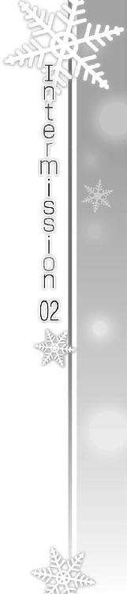
「もしもし？ うん、そう」
「まあね、相変わらず。別に遅いとも思ってないけど。もともと、時間は気にせずやっていくつもりだったし」
「それでも、少しずつ摑めそうではあるかな」
「ん？ ああ、あっちはあっちで色々大変そうだけどね。ま、他人事だし」
「いや、だからこっちは好きにやらせてもらうって」
「そういうことは関係ない。ただ、いいモノ作るためだけにやってるんだから」
「ちっぽけな賞なんかいらない。過去の評価もどうだっていい。今必要なものだけを追い求めて進むだけ。そのためだったら何だってする」
「それ以外のことなんて、知ったことじゃない」
「男のトコに入り浸ろうが何しようが──勝手にさせてもらう」
「ああもう、うっさいなあ。言われなくてもわかってる」
「とにかく、もうしばらくほっといてもらうから」
「あたし今、ちゃんと恋する女、やれてるんだからさ──」
Piece of：春希
水曜日、夕方。
「わー、久々の春希の部屋だ～。ああ疲れた、ベッドベッドー」
「おいこら。来て早々、他人のベッドに寝るんじゃない」
「だあって疲れたんだもん、今日一日。もう死んじゃいそう。朝から授業出っぱなしで、最後はゼミにまで出なくちゃいけなかったし。全部春希のせいだぁ」
「授業もゼミも出て当たり前だろうが......」
俺のベッドに転がる和泉の姿にため息をつく。
今日は朝から一日大変だった。隙あらば逃げ出そうとする和泉を食べ物で釣ったりしながら、どうにか必要な講義に出席させ続けたのだ。
なぜそんなことをしたのかと言うと──事の発端は、いつぞやの和泉自身の台詞だったわけで。
「まあ、恨むなら俺をお前の教育係に任命した教授を恨め」
「んもう。春希もそんなの無視してくれればいいのにぃ」
「残念だったな、俺の性格は知ってるだろ」
そう。和泉の教育係がどうこう、という件を教授に訊きにいったら、『和泉をどうにか出来るのは多分北原しかいないから、頼んだ』と言われてしまったのだ。
なのでまずは今朝、また研究室で寝袋に入っていた和泉を叩き起こし、一限からずっと講義に連れ回して出席数を確保した、というわけ。
「ちぇーっ。ま、春希にご飯食べさせてもらえるのが不幸中の幸いだけどぉ」
ケラケラと、ベッドの上で和泉が笑った。
「それにしても、キレーに片付いちゃってるし、生活感がなくてつまんない部屋だねえ。ね、ね、エロ本どこ？ ベッドの下？」
「テンプレ通りの反応するのはやめてくれ......」
やれやれ、と肩を落としながら、俺は和泉に背を向けていた。ニンジンを切っては鍋に放り込む。作っているのはカレーだった。
授業が終わり、ゼミが終わった後、なぜ和泉がこうして俺の部屋に来て、そしてなぜ俺がメシを作ってやっているのか。その理由は、出席数ともう一つ、和泉の卒業に必要なあるもののため。
「つーかホントに研究室でやった方がいいんだけどな、レポート......」
そう。実は和泉の進級に必要な条件は、出席数ともう一つ、課題である専門レポートの提出だった。
そこで、ゼミの後、研究室で作業をするはずだったのだが──和泉がゴネたのである。
ゼミ後の予定を考えていたとき、『学内で長時間真面目な行動をしてると気力が萎える』『人が多いと集中できない』などと和泉が言い出したあげく、『春希のマンションがいい！ 近いし！』と勝手に決めてしまったのだ。
突っ込みどころは満載だったが、一応はやる気になっているらしい和泉の意欲を削ぐわけにもいかず、渋々連れて帰ることにした。
かくして、研究室で先輩たちの手も借りられれば、などと思っていた俺の考えは崩れ去ったのだった。おまけに『ご飯作ってくれないとやる気出ない』とうるさいので、こうやってメシを作らされているのだった。まあ、作る俺も俺かもしれないけど。
「だいたいだな、ホイホイ男の家に来るなよな、お前」
「だって春希だしさぁ。前にあたしが学部の飲み会でべろべろになったときも、部屋に連れ込んだくせに何にもしてこなかったし」
「連れ込んでねえよ、人聞きの悪いことを言うな」
正確には飲み会を途中で失礼しようとした俺に無理やりくっついて来て、俺の部屋で独り勝手に二次会を始めただけである。朝まで。本当にいい迷惑だった。それ以来、和泉が酒を飲むようなシーンには極力近付かないようにしていた。
「今日はレポートやるんだからな、バリバリやって終電までに帰れよ」
「えー、そこは『泊まってけよ......』って言うところじゃないのぉ？」
「男の部屋に泊まるって意味をもう少し考えろよな、お前」
「あはは。......ま、あたしは手ぇ出されても別にいいけど？」
そう言って和泉が薄く笑う。
ときどき見せる、冗談なのか本気なのか迷うような顔。もちろん冗談だとわかってはいるけど、少しでも息を呑んだ自分を恥じ、そのまま流す。
「......あ、おい、携帯鳴ってるぞ。メールじゃないのか」
「後で見るからいーよ。それより今、話逸らさなかった？」
「じ、事実を言ったまでだ」
鋭いなこいつ。
「んふふ、まあそういうことにしといたげる。あ、そーいえばレポートの提出期限っていつ？」
「今月中。つまり今年いっぱい。クリスマスも大晦日もレポートに追われたくなきゃ、早いとこ仕上げろよ。けど冬休み入ると教授がつかまらない可能性があるから、実質的には冬休み前が限界だな」
「うわ、めんどくさー。うーん、何かドッと疲れが......しょーがない、ご飯できるまで寝てよっかなあ」
「寝るな！ サボってないで資料に目を通してろ」
振り向くのも馬鹿らしくて、背中越しにそう叫んだ。
「じゃなきゃ、せめてメシ作るの手伝えよ」
「他人の家のキッチンって使いにくいと思うんだ、あたし」
他人の枕で寝るよりはマシじゃないのか。
「ていうか全然料理できないからね、あはは」
「......お前って生活力ないよなホントに」
「あ、ギターみっけ」
聞けよ人の話。
やがて適当な爪弾きが耳に届き出し、俺はため息をつきながらジャガイモの処理に取りかかり始めた。
「ジャッ、ジャ～ン......春希、ギターなんかやってたんだ。あとで何か弾いてよ」
「おい和泉、お前自分が何しに来たか忘れてないだろうな」
「いいじゃん、ちょっとだけ。レポート頑張るから、休憩のときにさー」
「......やめたんだ、ギター。ずっと前に」
何でもないことのように、そう言う。
「え、そうなの？ もったいなーい。けど、もう全然弾けないってわけじゃないんでしょ。捨てずに置いてあるんだし」
「全然だよ。もともと上手くなかったし、捨てるタイミングがなかっただけだ。だから......もったいなくなんかない」
「そうなんだ？ せっかく練習したんでしょ、もういいの？」
「ああ」
「そっか」
「............」
そう、もういいんだ。
あんなに練習したけど、あんなにしごかれて頑張ったけど、もう俺は弾けない。
だって楽しくないから。
あれほど最高の時間を過ごした後に、たった独りギターを鳴らすなんて、苦痛以外の何物でもないから。
第一、最高だったはずのあの時間を、今じゃ思い出したくもない──
「んふっふ～、ふふっふー♪」
「っ!?」
瞬間、手が滑った。
「いっ、てぇ......」
「ふふんふ～......あれ、どうかしたの？」
「......いや」
包丁で指を切った。プラスチックのまな板に赤い色が落ちる。
「いいよねー、『届かない恋』。一年の冬に初めて聴いてさ、一発でハマったんだよね」
「そう、なんだ」
指先も、まな板も、みるみる真っ赤に染まっていく。でも、鋭く切れたはずの傷口には痛みを感じない。
その代わり、鈍い痛みがじわじわ胸に広がっていた。
「ボーカルも曲もいいし、あと何でかわかんないけど、歌詞が好きなんだ。すごいとは思わないけど、何かいい歌詞。だからフルコーラス歌えるよ、あたし」
「......へえ」
「春希、これ歌った軽音の人と付属で同学年だったんでしょ。知り合いだったら面白かったのになー。ね、リアルタイムで聴いたこととかないの？ 確か三年前に、付属の学園祭で一回だけライ──」
「いや」
思い出したように水道水で傷口を洗いながら、和泉の言葉を制した。
「聴いてないな、別に。俺あんまりイベント事とか好きじゃなかったし」
言いたくなかった。言えるわけがない。
流水が染みるにつれ、指先が痛みを覚え始める。あの頃も、何度も何度も指の皮がめくれた。痛かった。でも本当に楽しかった。
もう二度と、あの日々は帰ってこない。
「そうなの？ ギターやってたぐらいなのに？」
「......まあな。だからすぐやめたんだ」
「バンド組んだりとかも？」
「してないよ。一人でちょっと......かじってただけだ」
何てことだ。いつものように現実から逃げるために和泉を利用していたのに──今こうして真っ正面から思い起こさせられてる。
きっといい気味なんだろう。俺みたいな、ろくでもない奴には。
「そっか、一人だったんだ」
背中越しに、和泉の小さな呟き。
「ああ」
「ふうん」
どう思ったかは知らないけれど、和泉はいつものように、それ以上追及してはこなかった。
「そうなんだ......」
Piece of：雪菜
「ずいぶん早く着いちゃったなあ。父さんたちとの待ち合わせまで、まだ二十分はあるぜ」
「そうだね」
どーすっかなあ、と隣で呟く弟に、雪菜は身内にだけ見せる適当な相槌を打つ。
今夜は久しぶりに家族揃っての外食だった。日の暮れた御宿駅前に吹く風は冷たく、その中を無数の人間が忙しなく通り過ぎていく。
「あ、そういえば今週のレッドコミック読んでなかった。本屋で立ち読みでもしてようぜ、姉ちゃん」
「また漫画？ 孝宏、受験生っていう自覚が足りてないんじゃない？」
「いいじゃん、息抜きも必要だって。ていうか姉ちゃんもだよ、大学入ってから毎日疲れた顔してさあ。今年に入ってからは特に。勉強しすぎなんじゃないの。俺、大学生ってもっと気楽なもんだと思ってたんだけどなあ」
「............」
「勉強ばっかで頭でっかちになっても知らないぞ、姉ちゃん。それに、もっと若さを保ってないとさ、そのうち北原さんに振られちゃうかもしれないぜ、あはは」
「っ......上手くいってるよ。余計なこと言わないで」
「え？ いや、冗談だよ冗談、ごめんって」
つい声に怒気が混ざってしまったのか、慌てたように謝る孝宏。
「ただほら、大学入ってからちっとも家に来ないしさ、北原さん」
「......もうそんな段階は終わったの。家だと皆いて落ち着かないし、春希くんの部屋なら二人きりになれるから」
「えーと、そんな生々しい話を聞かされると弟としては微妙な気持ちになるんだけど......と、とにかく本屋行こうよ、本屋」
逃げるように先を行く弟を見つめながら、雪菜はそっと息をつく。
二人きりどころか、今や彼と会話する機会さえなくなってしまった──そんなことは、家族にはとても言えずにいた。
心配をかけたくなかったし、口にすればそれが事実だと自分でも認めることになるから。今さら認めるも何も、ないとはいえ。
「ふう......」
入り口付近で漫画雑誌を立ち読みしている孝宏を残し、店の奥へと足を踏み入れた。
無数の活字やイラストが居並ぶ中、しかし雪菜はどれを手に取ってみる気も起きない。ただゆっくりと歩き、表紙や背表紙を眺めて回る。
しばらくそうしてからまた孝宏の近くに戻ってきたとき、雪菜は一冊の雑誌に気が付いた。
今日発売らしい開桜グラフ。平積みされていたその表紙の片隅に『世界へ飛び立つ若き才能たち』と書かれているのが目に留まる。
「っ......」
文字通り飛び立っていった『彼女』のことを思い起こし、わずかに俯く。
「おーい姉ちゃん、そろそろ行く？ ってあれ、何見てんの？」
「え、べ、別に......」
「あ、開桜グラフ！ そうだ忘れてた、確かサッカーの藤川秀平の記事が載ってるんだよ、少しだけらしいけど。格好いいんだから、もっとテレビとかで取り上げて欲しいんだよなあ」
「......ふうん」
「何だよ、興味なさそうに言ってくれちゃって。ホントに格好いいんだぞ。写真とか載ってないかなー」
雑誌を手に取り、ぱらぱらとページをめくる孝宏。
「あった、これ！ ほら見てよ姉ちゃん、かっこいいだろ？」
「いいよ、そんな──」
差し出されたページから目を背けようとして、ハッとした。
孝宏の言うサッカー選手の写真に、ではない。
その隣のページで紹介されていた、ある人物の名前に。
「......っ」
「あれ、どうしたの姉ちゃん。も、もしかしてまた怒った？ 違うよ、北原さんと比べてどうこう言うつもりじゃなくてさ......うわっ」
孝宏の手から思わず雑誌を引ったくる。
「な、何すんだよ」
困惑の声を上げる弟を気にも留めず、食い入るように記事に目をやる。
「かず、さ......」
黒いドレスに身を包んだ、美しいピアニストの写真。
実に三年ぶりに見る、かつての仲間がそこにいた。
「え、何て？ どうしたんだよ姉ちゃん」
「......孝宏。わたしこれ買ってから行く。先に待ち合わせ場所行ってて」
「いや、それぐらい待ってる──っていうか俺、藤川秀平の記事を」
「行ってて」
「あ、ああ、うん......？」
腑に落ちなさそうな顔で、それでも姉に言われた通り、孝宏は本屋から出て行った。
急いで会計を済ませ、雪菜は店の前で開桜グラフを開く。手が震えるのを感じながら、かずさの記事に目を落とす。
冬馬かずさ。
その名を目にすることは、いつ以来だろうか。
誌面の片隅ではあったが、三年前よりずっと美しくなった彼女の写真と共に、略歴、そして大きなコンクールで準優勝したという成果が記事には書かれていた。
何度も何度も、その短い文章を繰り返し読んでから、もう一度写真をじっと見つめる。
そうして、しばらくただ見つめ続けた後、雪菜は目を閉じ、深く息をついた。
かずさだ。
かずさが、ここにいる。
「............」
深呼吸しながら雪菜は迷った。
迷って、迷って、けれど最後には──決意し、携帯を取り出した。
電話帳の中のある番号を、久々に呼び出す。
しかしいざ通話ボタンを押そうとすると、指が引きつったように動かなくなった。かつては毎日のように通話していたというのに、今では心のどこかが躊躇を強いる。
「......だめっ」
自分に言い聞かせるために、言葉を口に出した。
今だけは、躊躇なんてしちゃいけない。
だって、かずさがいるのだから。
もう会えないと思っていた人が、ここにいるのだから。
大きく息を吸い込み、雪菜はグッと通話ボタンを押し込んだ。
携帯を耳に当てる。鼓動が高まる。
プルルルル、と呼び出し音を聞くだけで胸が苦しくなっていく。
頑張れ、と自分を励ましながら、じっと待つ。
やがて──
『ただいま 電話に出ることが出来ません ご用の方は......』
「......っ」
切り替わった自動音声に、ズキリと胸が痛んだ。
それでも。
『メッセージを どうぞ』
雪菜は、また息を吸い込む。
「......あ、あの、こんばんは。雪菜です」
そして言葉を紡いでいく。
「忙しいのに、ごめんね。けどどうしても、今日のうちに連絡したくって」
自分の声を、彼に聞いてもらうために。
「えっと......春希くん、今週の開桜グラフ、見た......？」
最高だと言ってくれたこの声を、届けるために。
「もし見てなかったら、絶対に目を通してください。それで......もしよかったら、連絡してください。何時でもいい、夜中でも明け方でも平気。だから、その......じ、時間があったらでいいんだけど」
携帯を持つ手に力が入る。
「声を......聞かせてください」
ふわ、と夜風が雪菜の髪を攫った。
本屋の前に立っている美女を、道行く幾人もが振り返る。わざわざ足を止める男も少なくない。
しかし彼らの視線を雪菜が気にすることはない。気付きもしない。
雪菜の心が想う男は、三年前から一人だけ。
その人物に向けて、雪菜は祈るような気持ちでいた。
どうか、今だけは逃げないで、と......。
Piece of：春希
『声を......聞かせてください』
「......っ」
時刻はすでに午前二時を回っていた。
何時間も前に入っていたメッセージを、こんな夜中にやっと聞く自分が情けなかった。
折しも和泉が来ているタイミングでかかってきた電話。ディスプレイに表示された名前にハッとし、しばらく動けなかった。
早く出なよ、と和泉に指摘されて、条件反射のように留守電に切り替える。
背中に嫌な汗をかきながら、勉強中に電話はな、と訊かれもしないのに言い訳をした俺に、和泉は一言呟いた。あたしのせいにされてもね、と。ぐうの音も出なかった。
そこから先、俺はほとんど集中できず、終電前に駅まで送っていった別れ際、ちゃんとかけ直してあげなよ、と言い残して去った和泉にも、何も言葉が返せなくて。
そうして部屋に戻った後、明日の予習をする気にも、シャワーを浴びる気にもなれずに、物言わぬ携帯を前にじっと、ただじっとしていた。
色々な考えが頭をよぎり、そもそもメッセージがあるのかないのか確認することさえままならず、時間だけが無駄に過ぎ......最後にようやく決意して、携帯を開いたのだった。
「開桜グラフ......」
今日が発売日であるその雑誌名を聞いただけで、雪菜が電話してきた理由がわかってしまったなんて、雪菜の方は知る由もないだろう。
なぜなら、俺が開桜グラフ編集部でバイトしているという情報を、俺たちは共有していないからだ。普通の友達や恋人なら、話してて当たり前のことなのに。
連絡することすらない今の俺たち──だからこそ俺は、久しぶりの雪菜からのメッセージを、小川のせせらぎのようなあの声を耳にし、全身を震わせていた。自分勝手にもほどがあるが、苦痛と共に俺はどこか悦びを感じていた。相変わらずの、最低。
しかしいつまでもそれに浸っているわけにはいかない。
雪菜の求めに、応じるか否か。
「............」
本当は、あの記事のことを思い出したくない。
少しでもかずさを頭に浮かべたくなくて、今日一日、開桜グラフが出ることを忘れようと努めていた。和泉を連れ回したのも、そのことが無関係だとは言い切れなかった。
そうである以上、雪菜に応じることなんてできないけれど──ふと、その雪菜のことを考えてしまう。
俺に連絡する際、雪菜は一体どんな思いだっただろう。
どれほどの決意をして、どれほどの勇気を持って電話しようとしたのだろう。
それを考えると無視する気にはどうしてもなれなかった。こんな最低の俺でも、どうしても。
キッチンで水を一杯飲んでから、ベッドに腰掛け、何度も深呼吸を繰り返す。おそらくは雪菜もそうしたように。
無視したくないなら、メールを送ればいい。今日はメチャクチャ忙しいんだとか、開桜グラフ読んだよあいつ凄いなとか、伝えるべきことだけ伝えればいい。これまで雪菜を避けてきた俺だ、むしろそうすべきなのかもしれない。
けれど、雪菜の声が、たった一言が、俺を捕らえて離さなかった。
声を、聞かせて──
「......ふうっ」
携帯を耳に当てて、呼び出し音を聞く。
ワンコール、ツーコール。
「もっ、もしもし春希くんっ!? ......だよ、ね？」
「......雪菜」
「あっ......春希、くん」
俺も、おそらく雪菜も、お互いの声を聞いて、聞いた瞬間色々な感情に襲われた。
嬉しさ、悲しさ、安堵に後悔。
複雑に混ざり合う感情の中、それでも頑張って、声を出す。
「ホントに、かけてくれたん、だね......え、えへへっ」
その小さな笑い声一つに、どれだけの感情が織り込まれていることか。
「ああ、かけたよ。......久しぶり、雪菜。元気だった？」
「うんっ、元気だよ......最近はゼミも忙しくなってきてね、大変だったりするけど......あはは」
探り探り、言葉を紡ぐ。
「俺も......ゼミも、バイトも忙しくってさ。だから、その、今日もこんなに連絡遅くなっちゃったんだ......ごめん」
「ううん、いいの。春希くん、いつだって頑張ってるもんね。わたしなんかより、ずっとずっと。こっちこそ、いきなり厚かましいこと言ってごめんね」
「いや、そんなこと......」
「だから、連絡くれただけで充分だよ。ホントに......ホントにありがとう」
雪菜の声が、電波に乗って俺の耳をくすぐる。
三年前と変わらない、どこまでも綺麗な旋律が、俺の心に染み込んでいく。
ずっと忘れようとしていた感覚。でも、忘れられるわけ、なかった。
◇
少し当たり障りのない話をした後、雪菜が切り出す。
「あ......それでね、本題なんだけど。あのね、今週の開桜グラフに──」
「読んだよ。すごいことになってたな、冬馬の奴」
「ね、すごいよねっ！ びっくりしちゃった、わたし」
「国際コンクールで準優勝だもんなあ」
あれ、何だこれ。
俺、かずさのことをこんなに普通に話せたんだ。
しかも、雪菜を相手に。
「写真見たら、すごく綺麗になってたよね、かずさ。あ、ネットでちょっと調べたんだけど、このコンクールって、今まで世界的なピアニストが何人も受賞してる、登竜門みたいなものらしいよ。......かずさのお母さんも昔、優勝してるんだって」
「そっか。なら、今ごろは冬馬曜子に馬鹿にされて口喧嘩でもしてるかもな。優勝準優勝で言い争って」
あはは、そうかも、と雪菜が笑う。
「本当にそうだといいな──そしたらあいつの願い、叶ったことになるもんなあ」
「......願い？」
「ピアノでやっていけるようになることと、母親と仲直りすること。冬馬、それを実現させるために、本当に頑張ったんだろうな」
「けど、かずさのもう一つの願いは......」
「え？」
何か呟いた雪菜。聞き返した俺の言葉には応えず、代わりに。
「......ね、春希くん。乾杯しよっか？ かずさの準優勝を祝って」
「え？ 乾杯？」
「うん。春希くんの部屋、お酒とかある？」
「いやまあ、冷蔵庫にビールぐらいだったら......」
「じゃあ決まり！ わたしもすぐ準備するから！ 春希くんもだよっ」
「いや、おい......」
ちょっと待って、と言う前に、電話口からバタバタと足音が聞こえ。
仕方なく缶ビールを持ってきてまたベッドに座り、何やらやっている雪菜の物音をじっと聞いて待つ。
「ふうっ、はあっ......春希くん、よ、用意できた？」
「とりあえずちょっと落ち着けよ、雪菜。息上がってるぞ」
「あんまり急いで階段上り下りすると、疲れるね、ふうっ、当たり前かあ、あははっ......」
雪菜の声が、どこか興奮して楽しげなものに聞こえる。
こんなにイキイキとした雪菜の声なんて、最後に聞いたのはいつだったろうか。
「ふ～っ......うん、落ち着いた。ごめんね、お待たせ。ウチ、今ちょうど何にもなくって。仕方ないから料理に使ってる赤ワインとグラス持ってきちゃった」
ふふ、といたずらっ子のように笑う雪菜。その表情が、目に浮かぶようで。
「それじゃ、注いじゃうね」
その言葉に合わせ、俺も缶ビールを開ける。
「じゃあ春希くん、乾杯の音頭をお願いします」
「お、音頭？ え、えーと......冬馬のコンクール準優勝と、より一層の活躍と成功......」
「堅～い」
「い、いいんだよ別に！ ああもう、乾杯っ」
「かんぱーい！」
ビールの缶を携帯にぶつけると、電話の向こうからはガラスの甲高い音が聞こえてきた。
喉へ一気にビールを流し込む。冷たい刺激が胸の中へと溶け込んでいった。
「ふうっ......かずさ、おめでとう」
雪菜は、本当に親友の成功を喜んでいる。
その喜びを、純粋に俺と分かち合っている。分かち合おうとしている。
「嬉しいなあ。あ、ちょっと泣けてきちゃったよ、あはっ、あははっ......」
「............」
けれど俺は、その純粋さに報いるところが微塵もない。
なあ雪菜。
俺、知ってたんだよ。かずさのこの件、何日も前から知ってたんだ。
でも、それを誰にも言おうとはしなかった。雪菜に教えようともしなかった。それどころか......今の雪菜みたいに、素直に喜んだりもできなかった。
「うーん、料理にばっかり使ってたけど、飲んでも美味しいなあ、このワイン。どんどんいけちゃう」
「おいおい飲み過ぎるなよ。雪菜、酒弱いんだから。それとも大学入って少しは強くなったりしたのか？」
「ううん全然。でもいいじゃない、今日ぐらいは。......わたしね、大学入って今日ぐらい嬉しい日はなかったんだよ？」
「......っ」
思わず息がつまる。
俺は違ったんだ雪菜。かずさの願いが叶ったのに、懸命に頑張って結果を出したのに、俺はそのことを素直に喜べなかったんだよ。
理由は──わかりすぎるほどわかってる。
「なあ雪菜。ごめん、俺実は......」
「春希くん。今日はさ、もう『ごめん』はナシにしようよ。電話切るまでの約束。ね？」
「雪菜......」
雪菜は優しい。その優しさは、いつも俺を赦す。
でもそのたびに俺は、自分の矮小さを、心の弱さを、思い知らされる。そうして同時に、自分が雪菜の隣にいちゃいけない人間なんだってことを、思い知らされるのだ。
「わたしね、どんなことがあっても、かずさのことが好き。嫌われても、憎まれてもね。向こうにしてみたら、いい迷惑かもしれないけど」
三年前、あんなひどい裏切りを受けてもなお、こんなに優しい雪菜。
三年前、あんなひどい裏切りをして、今も雪菜の優しさから逃げ続けるだけの俺。
こうして俺たちは、お互いが望まない方向へとひた走っていく。その先に答えがないとわかっていても、お互い態度を改められない。
「ずっとずっと......好きなの」
「............」
「だから、今日みたいにかずさに嬉しいことがあった日くらいは、こうやって......春希くんとお祝いしてても──お話ししてても、いいよね......？」
「......ああ」
雪菜を突っぱね、拒絶し、このままどこかへ消え去れば、その方が雪菜のためかもしれない。
でもそれをしない俺は、口では雪菜をもう傷付けたくないと言いながら、その実余計に傷付け続けている。
雪菜が、俺に優しくするのを止めてくれないのと、同じように。
Piece of：雪菜
「それじゃ、そろそろ......」
「うん......ずいぶん長く話したよね」
「もうとっくに四時回ってるしな。雪菜、明日の、っていうかもう今日だけど、授業大丈夫か？」
「わたし明日は午後からだから。春希くんこそ、平気？」
「俺はこれぐらいの時間に寝るの珍しくないし」
「そっか。あ、でも......」
「ん？」
「......昔はよくこれぐらい長電話してたなあ、って」
「雪菜......」
「あ、ご、ごめんね、変なこと言って」
「今日は、ごめんはナシだろ？」
「っ......そ、そうだったね」
「そうだよ。大体、それを言ったら、俺こそ......だから今日だけは、今日話したことは、お互い何にも気にしないでいようぜ」
「春希くん......」
「それじゃ、今度こそ寝ようか。おやすみ雪菜。話せてよかった。本当に......嬉しかったし、楽しかった。連絡してくれて......ありがとう」
「っ......！ うんっ、春希くんも、ありがとう......おやすみ、なさい」
「おやすみ」
そして電話が切れた後。
「かずさ......ありがと」
雪菜は一人、呟く。
「それから、ごめんね......わたし、またあなたを利用しちゃったよ......っ」
Piece of：春希
雪菜と会話した。本当に、久しぶりに。
でも、その立役者がかずさだというのは、何とも言えない複雑な気分だった。俺たちを操っている見えない糸が、どこかで絡まっているような感覚。......三年前からずっとかもしれないけど。
とはいえたった一日の出来事、翌日から俺はまた雪菜を避け続け、かずさのことを思い出さない日々が始まる──はずだったのに。
「......はい？」
二日後、編集部の面々を集めて麻理さんが言った台詞に耳を疑った。
「はい、じゃないわよ。北原にも手伝ってもらったでしょ、この記事」
今週の開桜グラフを広げる麻理さん。
「このピアノのコがかなり反響大きくてね。ウチの隔月刊の音楽誌『アンサンブル』で特集組むことになったの」
そう言って麻理さんが指差していたのは、もちろん──
「まあ、こりゃ反響あるよなあ。この写真、一発で目を惹くし」
「久々にクラシック界で来たかもしれねーな」
「わたし、前にコンクールに出てた彼女を観たことあるけど、昔よりずっと綺麗になってる......ねえ麻理さん、昔一緒に観に行きましたよね？」
「そうね、あの頃よりずっと腕を上げてるみたいだけど。ていうかどこをチェックしてたのよ鈴木」
「だってえ。うー、つやつやの黒髪に、黒いドレスもハマってる、そんでまだ二十歳......あーあ、羨ましい」
口々に言う部員たち。ほとんど愚痴のような鈴木さんの台詞にも、俺はろくに反応できない。
「それで、アンサンブルの編集長が、このコの母親──冬馬曜子と親しいらしくてね。特集の許可、あっさり下りたみたい」
「冬馬曜子？ あっ、俺子供の頃テレビで観たことありますよ」
「最近はヨーロッパ中心に活動してるからあんまり話題にならねーけど、昔は有名人だったからなあ。その娘が国際コンクールで準優勝、おまけにこのルックスと来りゃ、一気に注目浴びてもおかしくないな」
皆が何を言っているのか、聞こえはするが頭に入ってこなかった。
三年前、俺の目の前にいて、砂糖入れすぎのインスタントコーヒーをすすっていた冬馬曜子の姿を思い出す。
それに、かずさ。
皆はやたらと持ち上げているけど、あいつなんかピアノ以外何の取り柄もないし、ワガママだし、無愛想だし、メチャクチャな奴なのに。......見た目だけは、確かにいいかもしれないけど。
「ま、本人の意向で彼女自身にインタビューとかはできないんだけどね。で、アンサンブルってほとんど編プロ使って記事作ってるんだけど、今回のは急遽決まった企画だし、元ネタ拾ってきたの私だし、この特集だけウチでやることにしたの」
「麻理さん、また他の編集部から仕事奪ってきたんですか？」
鈴木さんの呆れたような声。
「別に、ウチでやった方がいいものができると思っただけよ。それで本題なんだけど──」
麻理さんが、ふと俺の方に向き直った。
「北原、記事はあんたに担当してもらおうと思ってる」
「は──えっ？」
「た、担当って、北原くんバイトですよ？」
「そっ、そーですよ、俺なんか入社二年目でまだ記事書かせてもらったことないのに」
面食らったような顔の鈴木さん。他の皆も同様。もちろん俺も同じ顔だったろう。
記事を担当するってことは......取材も執筆も、全部俺がやるってことだよな？
それは今までの雑用とか補助とは違う、まさに『本を作る』という仕事だ。まさか学生バイトにそんな役目が与えられるだなんて。
「確かに、北原は学生バイトよね。でも、じゃあちょっと訊くけど、この中に一回たりとも北原に頼らなかったヤツ、いる？」
「それは......」
「いないです、よね」
皆が目を見合わせる。
「そうよね。ついでに、北原に何か頼んだ後、やっぱり頼るんじゃなかった、なんて思ったこともないでしょ？」
麻理さんが皆を見回す。
「北原は皆にこき使われて、いつも期待以上の結果を出して応えてきた。そして補佐とはいえ、その過程で大量の記事に関わってきてるわ。気鋭のピアニストの特集......初めてやらせるにしては大きすぎる記事かもしれないけど、北原にならチャンスをあげてみてもいいんじゃないかしら」
しばらく黙っていた皆だったが、やがて「確かに北原くんならやれるかも」と鈴木さんが呟いたのをきっかけに、他の部員からも頷きが見え始めた。
「そうだな、北原ならマジでどうにかするかも」
「何せ北原だからなあ。麻理さんの監督があれば、イケるんじゃないか？」
「くっそー、負けてらんねー。俺も早く自分で記事書いてみたいぜ」
そんなふうに盛り上がる部員たちの中──
当人である俺は、ずっと黙りこくっていた。
「ん、なら皆オッケーね。北原、あんた将来出版社狙ってるんでしょ。経験積ませてあげる。もちろんダメな原稿書いてきたらゴミ箱行きだけどね。それから、ある程度は家でやってもらうから、その分のバイト代は加味するわ。そういうわけで、何か異論は？」
「............」
確かに滅多にないチャンスではあるだろう。
けどこの仕事を受けるってことは、当然記事の対象者、つまりかずさと深く向き合う必要があるということだ。経歴を調べ、関係者に取材し、あいつのこれまでの人生を辿らなくてはならない。
俺に、そんなことができるのか？
あの一年間を──高校三年生だった、あの刻を。
忘れようとしていた記憶をもう一度見つめ直すだなんて、そんなことが。
......できるわけ、ない。
「麻理さん。すみません、俺にはちょっと......荷が重いですよ。バイトですし」
呟くようにそう言うと、麻理さんは驚いたように目を見開いた。まさか断るとは思っていなかったんだろう。
「どうして？ 自信ないの？ バイトってあんた、普段からバイトの枠を超えた働き方をしてるじゃない。なのに自分にはまだ記事書く能力がないとか思ってるわけ？ さっき私が言ったことを全否定するつもり？」
「麻理さん、俺を過大評価しすぎなんですよ」
「私は正当に評価してる。だいたいあんた、いっつも『仕事よこせ』ってうるさいじゃない。だから文句なくやり甲斐のある仕事を任せようと思っただけよ。何かおかしい？」
「それは......」
わかってる。
麻理さんが一介のバイト風情である俺にこんなチャンスをくれたのは、今まで必死に打ち込んできたのを見てくれていた結果だろう。
けど俺が頑張っていたのは、ただ逃避するためだった。忘れるための手段こそがバイトだった。なのに、一番忘れたいことをそのバイトで思い出すハメになるんじゃ、意味がない。
「北原、やれそうな見込みがない人間に頼むほど私は暇じゃないわよ」
俺が黙っていると、麻理さんがそう言って小さく息をつく。
「まあ、嫌なら無理に押し付けたりはしないけど。......でも、本気なら逃げない方がいいとは思うわよ」
「......え？」
「本気で出版社狙ってるんならね。この仕事してると、心の準備が出来てないときに限って、身の丈に合わないような仕事が舞い込んでくるのよ。だけどその度に『自分じゃ無理だ、釣り合わない』なんて言って逃げてたら、いつまで経っても成長なんかしない。どんなに苦しい仕事でも、まずは取り組んでみないと道は拓けないわ」
「っ......」
麻理さんの台詞に胸が痛んだのは、そっくりそのまま俺の境遇に当てはまったからだ。
三年前──俺が知り合ったのは、俺には不釣り合いな二人だった。
それでも俺は頑張った。二人に並び立てるように、死ぬ気で駆け抜けた。
なのに今じゃ、彼女たちから目を逸らそうとしかしていない。逃げることしか考えていない。
向き合おうとも、どうにかしようともしないままだ。
「............」
三年前はあんなに必死だったのに。
山積みだった問題を解決すべく、全力で食らいつき、壁を乗り越えようと頑張ったのに。
けどその結果である『現在』から、俺はずっと逃げ続けている。
それはつまり──過去の自分の努力すら、なかったことにしようとしているんじゃないのか？
......あの頑張りを、なかったことにする？
ライブのために身も心も削って打ち込んだ全てが、なかったことに？
じゃあ、あのライブは一体何だったんだ？
俺たちが過ごしたはずの最高の時間は、噓だったのか？
あれを──噓にするのか？
「あ、ごめん、別に責めてるわけじゃない。私が勝手に先走っただけだし。悪かった、北原」
俺の様子をどう取ったのか、麻理さんがそう告げる。
「さってと、どうしようかしら。完全に北原を当てにしてたから............鈴木、どう？」
「うえっ!? むりムリ無理です、わたし今の自分の企画だけで精一杯ですよぉ」
「そう。はあ、仕方ない、それじゃ自分で何とか......」
「──麻理さん」
顔を上げ、麻理さんの目を見て。
「すいません、やっぱりその記事、やらせてもらえませんか」
「え？ 何、どうしたの急に」
いきなり前言撤回した俺に、麻理さんも他の部員たちも驚いたようにこちらを見る。
「......いえ。麻理さんの言う通りかな、って思ったんです」
忘れたかった。
思い出さずに済むならそうしたいに決まっていた。
でもなかったことにだけは、どうしてもしたくなかった。
この仕事をやることで何かが好転するとは思わないけど、ともかく──あの最高のステージを、噓にはしたくなかった。それだけは、どうしても。
「あれ、そ、そう？」
ちょっと驚いたように言う麻理さん。
「ま、まあ、北原ならわかってくれると思ってたけど。ええと、とにかく私が頼んどいて何だけど、そう簡単な仕事じゃないわよ？」
「わかってます。途中で投げ出したりしません」
「ならよし。それじゃ決まりね。後で向こうの編集長と話をしに行くから、そのつもりで」
「はい」
「しっかり頼むわよ、北原。私があんたに白羽の矢を立てた理由──あんたが頑張ってるから、ってだけじゃないこと、わかってるわよね？」
「......ええ」
麻理さんのことだ、単に部下にチャンスを与えただけじゃなく、その辺もちゃんと織り込み済みだったのだろう。
「なになに、何なのそれ？ あっ、もしかして麻理さん、個人的に北原くんに頑張ってもらいたいだけだったりして──」
「な、何言ってんのあんたは」
「あいたっ」
丸めた資料で叩かれる鈴木さん。
二人の様子を見ながら、そっと深呼吸した後、俺は言った。
「実は俺、冬馬かずさと高校の同級生だったんですよ」
その台詞に、マジ？ と再び部員たちが驚く。
「──って言っても、よく知りませんでしたけどね。知り合いでも何でもなかったし、あんまり話したことも......」
さすがにそれ以上本当のことは言えなかったけれど、とにかくこの日この瞬間、確実に何かが変わった。そのはずだった。
いい方向にかどうかは、わからないとしても。
Piece of：春希
「......ん？」
携帯の着信音で目が覚める。
窓の外が明るいのに気付き、朝だとわかる。
昨日家に帰った後、引き受けたかずさの原稿を書こうとして、そのまま眠ってしまったらしかった。結局、一文字たりとも書けぬまま。
「ふわあ......」
こんなに朝早くから誰だろう、と思った途端、ハッと目が覚めた。
俺に電話をかけてくる人物なんて限られている。
そして、ついこの間、久々に電話をかけてきた人物がいた。
まさか──
「も、もしもしっ」
『あっ、北原さん！ お久しぶりです、佐藤っす！』
「............お前か」
やれやれとため息をつく。何のことはない、前にバイトしていたファミレスの同僚だった。
「何だよ朝っぱらから。お前と遊ぶ約束なんてしてないぞ」
『いや、北原さんと遊ぶのは俺も御免......じゃなくて、すいません助けてください！』
「はあ？」
『実は店長がぎっくり腰になっちゃったんすよ。今スタッフ数ギリギリで回してる状況なんで、店長が抜けるとマジでシャレにならなくて』
「店長が？ そうか......けどいきなり言われても困る、俺はとっくに辞めた人間で──」
『お願いします！ とりあえず今日だけでも！ とにかく早く来てください！』
「ちょっと待て、人の話を聞け！」
『北原さんしか頼れる人いないんすよ！ どうかこの通りです！』
「だ、だから......！」
この春までバイトしていたファミレスは、転部と同時に辞め、より忙しそうでより文学部的な開桜社でのバイトに切り替えていた。
今もちょうど塾のバイトを辞めたところとはいえ、現状で充分忙しいので、別に行かなくてもよかったのだが──一時間後。
「ったく、勘弁してくれよな」
「すいませんホント。助かるっす」
グッディーズ南末次店。
名前通り南末次駅からほど近く、ついでに峰城大及び付属高校からもほど近いこのファミレスで、どういうわけか俺は懐かしい制服に身を包み、開店作業を行っていた。
「でも、北原さんなら絶対来てくれるって思ってましたよ。頼まれたら嫌とは言えませんもんね、北原さんって」
「都合よく俺を分析するんじゃない」
けど、佐藤の言うことはある意味当たっていた。俺が今ここにいることがその証明だ。
「とにかく、北原さんが戻ってきてくれたから百人力っす！」
「待て、戻るなんて言ってないぞ！ あくまで今日だけのヘルプだからな」
「いやあ、北原さんなら結局見るに見かねて毎日助けに来てくれそうで。北原さんがいるとスタッフ皆緊張感持ってくれるんすよねー不思議なことに」
「それはお前に威厳がなさすぎるからだろうが」
店長を除けば最古参で、唯一バイトではなく準社員である佐藤は、親しみ易いヤツではあるのだが、そのせいで舐められやすくもある。俺より年上なのにこんなんだし......その年上に敬語をしゃべってない俺も俺だけど。
「まあ今日だけでも助かります。実は今日、新人のコが来るんすよ。北原さんにはそのコを今日一日で何とか使えるように教育して欲しいんです。週末なのにシフト五人しか入ってなくて、とても新人教育なんかしてる余裕なくって」
「なるほどな。けど、一日だけで使い物にするのはさすがに......」
「いえ、それがいけそうなんです。俺が面接したんすけど、付属のコで、すっごい真面目な性格なんすよ。飲み込みも早そうですし、直感ですけど北原さんみたいな仕事できるタイプなんじゃないかと。北原さんと気も合うかもしれないっすよ」
真面目なのと仕事ができるのはまた別の話だと思うけど、まあいいか。
「とにかく、やってはみるから」
「はい、お願いします。......っと。それじゃ、そのコ紹介しますね。たぶんもう更衣室からは出てきてるはず──あ、ついでに皆にも声だけかけとこうかな。すいません、先に控え室行っといてください」
「わかった」
どんなコかなと思いながら、控え室のドアを開け入ろうとしたとき、何かにぶつかってしまった。
「うおっ」
「きゃっ......あいっ、たたぁ......」
悲鳴と共に、ぶつかった相手が──女の子だった──尻餅を付いていた。
「ごめん、大丈夫か？」
「は、はい......平気です」
手を貸そうとする前に、彼女はさっと立ち上がった。
ポニーテールの黒髪がぴょこんと揺れる。
「悪かった、ぼーっとしてて」
「いえ、私もドアの近くに立っていたのが......あーっ!?」
彼女は俺の顔を見るなり、突然指さして叫ぶ。
「あ、あ、あなたっ、どうしてここにっ」
「え？ 何、どうかした？」
わけがわからない俺に、彼女はなぜかぷるぷる震えていた。
俺のこと知ってるのか？ どっかで会っただろうか。
それにしたってこの様子は、どう見てもあまりいい印象を持たれてないようだけど......。
「えっとごめん、君は？」
「......っ、私っ」
何か言いかけた彼女だったが、「いやーすいません」と入ってきた佐藤により、その口は閉じられる。
「............」
「あ、もう会ってたんですね。ええと、こちらが新人の杉浦小春さんです。それで杉浦さん、こちらが北原春希さんといって、今日一日、杉浦さんの教育係をしてもらいます。よろしくお願いします」
「きょ、教育係っ!?」
彼女──杉浦さんが突然上げた声に、佐藤がぽかんとした顔をする。
しかし俺は、佐藤とは全く別の反応をしていた。
「......杉浦？」
その名前に、聞き覚えがあったから。
いつか大学を案内してあげた少女のことを、俺はようやく思い出していた。
◇
「あー、えと......お疲れ様、杉浦さん」
「......お疲れ様でした」
ようやく遅番にバトンタッチし、俺と杉浦さんの一日は無事終わった。......表面上は。
佐藤の言った通り、彼女は非常に真面目で、かつ有能だった。飲み込みも速いし、要領もいい。今月、俺はあと何日か（結局佐藤に泣きつかれて）ヘルプに入ることになったので、その間に彼女を戦力として育てることは容易に思われた。
......ただ、俺に対して明らかに不信感のようなものを抱いているのが何とも困った。
他のスタッフに対してはずけずけと、新人だからと物怖じせずハッキリ物を言うのに、肝心の教育係である俺にはごく事務的なことしか言わないのだ。
怯んでいる様子ではなく、むしろ俺が威圧感を感じるほどで。どうも何か、言いたいことをグッと我慢してるような感じを受けた。
大学を案内したときは、もっと普通に接してくれていたはずなのに、さっぱりわけがわからない。
理由を尋ねても、明確な返答はくれないまま、こうしてバイト終了になったけど。
「さてと。杉浦さん、もう暗いし駅まで送ってく」
「............」
「杉浦さん？」
他意なく言ったつもりだったのだが、複雑そうな表情を見せる彼女。
「ああいや、別に恩着せがましいことをするつもりはないんだけどさ、一応──」
「喫茶店、寄りませんか」
「へ？ 喫茶店、って......」
唐突にそう言った彼女に、思わず首を傾げる。
「帰る途中、どこか、ここじゃない店に」
そして彼女が俺の方を向いた。
射すくめるような、意志の強い瞳が俺を睨んでいた。
「北原先輩にお話があります。少し......付き合ってください」
◇
「そうか、矢田さんの......」
「クラスメイトです。一年のときから、ずっと」
駅前の喫茶店に入るなり、彼女は切り出した。
峰城大付属高校三年。いわゆる俺の後輩に当たる彼女は、もう一人、今ここにいない別の後輩の名を口にした。
矢田美穂子。
塾でバイトしてたときの俺の教え子で......この前、俺に告白したコ。
「あのとき、わたしも美穂子と一緒にいたんです」
「......そうか」
「告白が上手くいく保証なんてありません。美穂子だって、その覚悟はしてたでしょう。けど覚悟と同時に、成功して欲しいっていう期待もあったはずです」
視線をあちこち彷徨わせる俺に、彼女の目は真っ直ぐこちらを見つめ続ける。
「あのコ、すごく引っ込み思案なんです。塾で教えてたなら知ってますよね？ その美穂子がどれだけの勇気を出して頑張ったかも......わかるんじゃないですか」
「............」
「あれから美穂子、ずっと学校休んでるんです。お見舞いに行ったら、すごく傷付いた様子でした。そりゃそうですよね。どうして美穂子が......信頼してた先生に、好意を寄せていた先生に、どうしてあんな仕打ちをされなきゃいけないんですかっ」
杉浦さんがキッと俺を睨み付けた。
怒りに染まる瞳。そこに浮かぶ色は、決して濁ったものではなかった。ただただ純粋な怒りがじっと俺を捉えていた。
「......悪かった。配慮が足りてなかった」
「配慮とかそういう問題じゃないです、ひどすぎますっ。おかしいですよあんなの、どうして美穂子を置き去りにする必要があったんですかっ！」
彼女が怒る。まるで自分のことのように。
友達のためにという、下心のない愚直な感情──もう今の俺には失われてしまったものが、目の前で輝いていた。
「本当に悪かった。あれは、ひどすぎたと思う」
あんな行動を取った理由は明確じゃない。ほとんど条件反射で、気持ちの悪さから逃げ出しただけ。そしてそれは、あのときの俺には仕方のない反応だった。
だからと言って、素直に真面目に想いを伝えようとしてきた少女にぶつけてよかったのかと問われると、そんなわけはない。
「矢田さん本人はもちろん、見てた君にも嫌な思いをさせたと思う。本当にごめん」
小さく頭を下げると、杉浦さんが口をつぐんだ。
「メールしておく。ちゃんと謝っておくよ。けど、やっぱり彼女の申し出は受けられない」
「............」
「あのコ、教え子としては理想の生徒だったんだ。いつも熱心に聞いてくれたし、授業後もよく質問に来てくれたり。そのことは俺も嬉しかった。でも、恋愛は別だ」
「......北原先輩って、きちんとした人ですよね。今日一日見てて思いました。理路整然としゃべるし、落ち着いて行動するし、他人を気にかけることもできる性格だと思います。先輩のお友達──飯塚さんもそう言ってました」
「武也？」
「先輩が逃げ出した後、捕まえて話聞いたんです」
そうだったのか......あいつ、俺に何も言わなかったな。
「だからこそわからないんです。どうして先輩があんなことしたのか。勇気を込めた美穂子の告白を、土足で踏み付けるようなあんな真似、どうしてしなきゃいけなかったのか。飯塚さんも、代わりに謝るばかりでその理由は何も言ってくれませんでした」
......あいつ。
「一つ謝っておきますけど、実はわたしが先輩に大学を案内してもらったの、偶然じゃありません。美穂子が好きになった相手がどんな人なのか、友人として確認に行ったんです。......あのときわたし、この人は悪い人じゃないって、そう判断しました。今だってそうです、美穂子のこと、こうやって真面目に考えてくれてるじゃないですか」
「それは......」
「なのにどうして、美穂子が勇気出したときには、あんなこと......その理由がわからない」
杉浦さんがわずかに目を伏せる。
「わたしには話したくないなら、それでもいいです。でも美穂子にはちゃんと説明してあげてください。あんなことした理由と、告白を断る理由を、ちゃんと──」
「......悪いけどそれは出来ない」
え？ と杉浦さんが目を見開く。
適当にごまかせばよかったんだろうけど、俺の口は勝手に動いていた。
「彼女には謝るよ。でもそれとこれとは違う話だ。言いたくないものは言えない」
「なっ、そんなの美穂子が可哀相......」
「なら噓でごまかせばいいのか？ 君は噓ついてもらって嬉しいか？」
「......っ」
「納得できないなら、俺を許さなくていい。それと、自分勝手を承知で言わせてもらうと、矢田さんには俺みたいなヤツを好きにならないで欲しかった。こんなふうに、ろくでもない俺のことなんて」
「あなたっ──」
キッと俺を睨み、何か言いかけた杉浦さんは、けれどそのまましばらく黙った後、呟くように口を開く。
「全然納得できないし、絶対許せません」
「そっか」
「けど、もういいです。美穂子のことはわたしが何とかします。友達だから。ちゃんと話してくれないんだったら、むしろ先輩と関わらない方がいい」
キツい言い方だけど、でもたぶんその通りだろう。
いつまで経っても俺はクズなんだから。
「それに......そんな顔で言われたら、わたしもこれ以上追及できません」
「え？」
「お時間取らせました。失礼します」
そう言うと、彼女は自分のコーヒー代を置いて去っていった。
「そんな顔、って......何だよ」
一人呟く。
けれど、自分の顔を窓ガラスに映して見る気は、起きなかった。
Piece of：春希
「失礼します。あ、すみません先生、お忙しいところ」
「おう北原、久しぶりだな。しかしお前が出版社勤めとはなあ。合ってるっちゃ合ってる気もするが」
「いえ、まだただのバイトですから......」
実に三年ぶりに訪れた放課後の母校は、記憶の中と何も変わっていなかった。ただし、見た目だけは。
俺と一緒に笑い合ってた奴らは、もうここにはいない。
それに、アポを取り取材に行った職員室でも、『劣等生の冬馬かずさ』の話はまるで聞けなかった。昔は皆、あいつを鬱陶しがってたり、避けたりしてたはずなのに、そんなことは忘れたかのように、国際コンクールで準優勝という結果をひたすら褒め称えていた。我が校の誇りだとでも言わんばかりに。いや、実際そう言っていた。
高校の頃から類い希な才能を持って活躍し......などと語る先生たちを前に、俺は愛想笑いを浮かべるしかなかった。
これまで何人もプロの音楽家を輩出している峰城大付属だが、その中でも今回のコンクール準優勝は群を抜いた実績で、冬馬かずさはすっかり期待の星となったらしい。手のひらを返すとはまさにこのことだろう。最後の一年は音楽科ですらなかったって言うのに。
皆が一様に褒めちぎり、当時の身勝手ぶりなどは微塵も口にしないので、本当に冬馬かずさについての話を聞いているのかどうか、一瞬わからなくなりそうだった。
鳴り物入りで音楽科に入学しながら、最後は普通科をギリギリで卒業。傍若無人でサボり魔で、授業中は寝てばかりいて、成績は最悪で──そしてずっと孤独だった少女。俺が知ってる冬馬かずさは、そんな奴のはずだったから。
「ああ、そういえば北原、あれは記事で紹介するんだろ？」
「何ですか？」
「ほら、学園祭でのライブだよ。冬馬かずさも大活躍だった、あの」
ふいにかつての担任がそう口にする。話題に上るとわかってはいたが、いきなり振られて思わず焦る。
「え、あ、あれですか？ いやどうでしょう、大した話じゃないですし......」
「お前だって参加してたし、すごい盛り上がったじゃないか。学園祭実行委員の間じゃ、未だに語り草だよ。過去最高のステージだったってな。さすが冬馬かずさだ、はは。確か当時の記録ＤＶＤも保管してあるはずだ、ダビングして送るように言っておこう」
「ありがとうございます。でも多分......今回の記事には必要ないかと思いますよ」
「そうか？ 面白いと思うがな。天才ピアニストがバンド組んでた、なんて」
確かに面白いかもしれない。冬馬かずさが、サックス吹いたりベース弾いたりしてたんだから。
けどそれを面白いと言えるのは、俺たちのことを何も知らない人間だ。当事者であるこっちにしてみれば、あのライブにそんな無邪気な感想を持てるはずがない。
しばらく適当に相槌を打った後、じゃあそろそろ、と話を切り上げて去ろうとした、そのとき。
「そうだ、知ってるか北原、第二音楽室のピアノ、あれは冬馬曜子が寄付したものなんだぞ」
「第二......あっ」
「これも是非記事に書いてくれよ。我が峰城大付属高校は、前々から冬馬曜子さんとも深い繫がりが──」
先生の言葉なんて途中から聞こえなかった。
ただ、第二音楽室という懐かしい響きが、俺の頭の中にゆっくりと染み込んでいっていた。
◇
「......ふう」
来てしまった。
鍵を借り、三年ぶりにこの部屋へ。
窓に近付いてカーテンを開けると、沈みかけの夕日がわずかに室内を照らす。
そういえば、窓からここに侵入したこともあったっけな、とふと思い出した。
あまりにも馬鹿げた行動。
でもあのときは、第二音楽室の主に会うために必死だった。
だから、いつも俺とセッションしてくれていたピアノの音色が、実はクラスの『お隣さん』によるものだと判明したときは、本当に驚いた。
そして何だかんだあって仲間になれたときは、本当に本当に嬉しかった。
「お前は......相変わらずここにいるんだな」
佇むピアノをそっと指で撫でる。
あいつはいつもこの前に座ってた。そうして、格好良くて完璧なピアノをいつも弾いていた。
その隣には、ピアノの音色に誘われて楽しそうな歌声を響かせる少女の姿もあって。
そんな二人に後れを取るものかと、俺も必死にギターに食らい付いていた日々──
『おい北原』
『北原くんっ』
二人とも、楽しそうだった。
小さく笑いながら、明るく笑いながら、その声は俺の名前を呼んでくれていた。
『やったっ、やったね北原くんっ』
『......ま、この短期間でミスしなくなっただけでも上出来かな』
この部屋で、初めて三人で演奏を合わせた。
一体感のある『ＷＨＩＴＥ ＡＬＢＵＭ』を響かせることができた。
『あたし......あたしは......』
『だから......だからね。わたしのお願いは──』
「............っ」
俺たち三人が、確かに仲間だった日々。
生きてきた中で一番楽しくて、同時に、一番悲しい記憶。
思い出したくなかった。心の奥底に、しまい込んでいた。
けれどそれが今、ほんの一瞬で色鮮やかに蘇る。
麻薬に浸した刃が、俺の心に突き刺さる。
自分が今どんな表情をしているのかさえわからない。
俺は、俺は本当に──
「あの......？」
そんな、どこまでも堕ちていきそうな思考を遮ったのは。
「......君か」
顔を向けるとそこには、記憶の中の二人と同じ制服を着た、一人の少女。
杉浦、小春。
「どうかした？ ここに何か用？」
「あ、いえ......その、そろそろ下校時刻なので戸締まりと見回りを」
困惑したような顔で言う彼女。意外なところで俺に出くわしたから、驚いたんだろう。
「風紀委員だったんだ？」
「そうじゃないんですけど、クラス委員の仕事が終わってこれぐらいの時間だったときは、見て回らないと落ち着かなくて」
「はは、そっか」
見上げた責任感だ。不純な動機でクラス委員をやってた俺とは、根本的に違うんだろう。
「先輩こそ、どうして高校に......それもこんな、ほとんど使われてない教室に」
「いや、本当の用事は別にあってさ。それが終わってからここへ来たんだ。このピアノが見たくて」
「そう......なんですか」
「これさ、冬馬曜子が寄付したんだって知ってる？」
「はい。今学校中で話題になってます。ウチの卒業生で、しかも冬馬曜子の娘さんが、ヨーロッパのコンクールで優勝したっていう話と一緒に」
「残念......準優勝だよ」
そう笑ってみせたが、杉浦さんは困ったような表情のままだった。まあこんなところに一人でいたら、変な奴に思われても仕方ないか。
「それじゃ、俺は帰るよ。もう暗いし、駅まで送ろうか」
「えと......ありがたいんですけど、まだ用事がありますから。それに、これぐらいの時間に帰るのは普通なので大丈夫です」
「わかった。それじゃ」
歩き出そうとした俺に、「あ、あの」と戸惑うような彼女の声。
「先輩......どうかしたんですか？」
「え？」
「この部屋に、何か──あるんですか？」
「......いいや、別に何もないけど。なんで？」
「あ、いえ、その......何でもないです。すみません」
何やら口ごもってしまった彼女に改めて別れを告げ、暗い廊下を歩き出す。
何か言いたそうだったけれど、どこか俺の様子が変だったのだろうか。そんなことを思いながら職員室へ向かったのだが、原因はすぐにわかった。
担任がいなかったので、近くにいた見知らぬ女教師に鍵を返そうとしたら、驚いたように指摘されたのだ。
俺が涙を流しっぱなしだったことを。
Piece of：春希
「ねー、お腹空いたー」
「さっき二枚もトースト焼いてやっただろうが」
「トーストだけじゃパワーが出ないぃ。ひもじいよぅ」
「夕飯にチャーハン二合も食べたのは誰だ！」
水曜日。ゼミに出た後、先週に続いて和泉のレポート作業を監視する仕事が待っていた。場所はもちろん俺のマンション。
「せっかくこれだけいい資料があるんだから、頑張ればサクサク進められるだろ？」
「クッキーとかもサクサク食べ進められるよ？」
「真面目に聞け！」
まったく、とため息。
どこから搔き集めてきたのか、和泉が持ってきたのは何冊もの本やレジュメ。どれも同系統のテーマに沿ったもので、上手く纏めればレポートの一つや二つ、すぐに書けてもおかしくない......本人が五分おきに文句を言わなければ、だけど。
とはいえ普段と変わらない和泉の様子に、どこかほっとしている自分がいた。
「食い意地張りすぎなんだよ。だいたい、なんであれだけ食って太らないんだ」
「んー、それはやっぱり胸に栄養が行ってるからかなあ？ 何なら確かめてみる？」
ぐい、とわざとらしく胸を突き出してみせる和泉。やめろっての。
「あれ？ おい、電話鳴ってるぞ」
「あ、ホントだ。えっと？ ......えい」
「っておい、切るなよ。何してんだ」
「だいじょぶだいじょぶ、大した用じゃないだろうし、どうせ後でまたかかってくるから。春希だってこないだ勉強中だからって出なかったじゃない。なのに私が出るわけにはいかないでしょ」
「それは......まあ」
「でしょでしょ、さっすが私、偉い！ というわけでご褒美に何か食べ物を」
「やかましい！ いいから続きをやれ！」
ぶーぶーうるさい和泉を無視し、パソコンに向き直る。そこにあったのは、先日から書き進めていた原稿。
『二○××年、四月。母、曜子の母校でもある峰城大学付属高校に入学』
『その実力は入学時からずば抜けており、一年生にして全国コンクールに出場』
『審査員から絶賛を浴び、圧倒的な実力を見せつけ優勝。以降も出場したコンクール全てで優勝を飾り、高校始まって以来の天才は、全国にその才能を知らしめることになる......』
「......うーん」
どうしたものか、とディスプレイを眺めながら思う。
高校での取材内容を纏めると、どうしてもこんな美辞麗句ばかりが並んでしまう。
本当なら、誰の口からももっと過去の冬馬への文句や小言が溢れんばかりに出て来て、それをどうにかいい方向へ修正する──という予定だったのに、これじゃ真逆だ。
「なんかあんまり面白くならなさそうだな......」
誰もが皆、まるで架空の人物のような冬馬かずさを褒め称えていた。
等身大のあいつじゃなくて、天才ピアニストのイメージから膨らませた風船だけを見ていた。
......けど、それでいいのかもしれない。
この原稿は、事実とはかけ離れているとはいえ、周囲が持っているイメージとは離れていないのだ。
それならきっと、皆の記憶のなかで美しく作り替えられたあいつを世間に提示した方がいいのだろう。その方が誰もが幸せになれるはずだから。
「ふう」
ともあれ、一旦書き上げたところで息をついた。
しばらく和泉が黙っていたので、集中して書くことができた。
和泉もようやく真面目に取り組む気になったか、とふと視線を向けると──
「すー、すぅー......」
っておい。
「起きろ和泉、こらっ」
「ん～、むにゃ......んんぅ」
「ったく、起きろ和泉っ！」
思いっきり肩を揺さぶると、「うー......何よぉ」と不機嫌そうな顔でこっちを睨んだ。
「何よじゃない、寝るなっての」
「だってぇ、眠いんだもん......今何時ぃ？」
「えーと、うわ、もう一時半じゃんか。眠いなら早く帰れ、終電──」
と言いかけて。
「終電、まだあるわけ？」
和泉の呟きに、がくりと膝を突いた。
どうやら集中しすぎていて、時間が経っていたことに気付かなかったらしい。
「さてと......それじゃ、寝よっか？」
んふふ、と不敵な笑みを浮かべる和泉。
「大丈夫、ヒーターちゃんと付けといてくれれば床でもいいよ、あたし。ま、夜中にベッドに入りたくなったら入るかもしれないけどぉ」
「............」
「あれ？ おーい春希ー」
「......仕方ないからお前はベッドで寝ろ。俺は風呂場に予備の布団持ってって寝る」
「なんでお風呂場？ せめて脱衣所でしょ。そこまでして逃げなくてもいいじゃない。そりゃあたしを起こしてくれなかった春希が悪いわけだけどぉ」
「叩き出すぞお前」
ダメだコイツは、と思いながら、布団を抱えて堅い風呂場の床に寝転がった。たとえ相手が和泉であれ、女と同じ部屋に寝るなんてことは出来ない。
そんなことは......もう誰ともしてはいけないのだ。
「寒......」
浴室暖房なんて贅沢なものがあるわけもなく、ぎゅっと身体を縮める。なんでこんなところで寝なくちゃいけないんだろう、と思わなくもないけれど、俺にはお似合いの場所かもしれなかった。
Piece of：雪菜
水曜日から日付が変わって、時刻は午前二時。
雪菜は思い悩んだまま自室のベッドの上にうずくまっていた。
その手には携帯電話。
もうすぐ、先週彼が連絡をくれた時間を迎える。
「っ......」
丸一日以上ずっと考えていたのは、もちろん彼のこと。
ちょうど一週間前、開桜グラフというきっかけを得た雪菜の連絡に、彼は応えてくれた。
それから一週間後の今日。きっかけはもう何もないけれど、雪菜は迷っていた。
もしかしたら。
同じ曜日の、同じ時間なら、もしかしたら連絡に応えてくれるかもしれない。
彼から電話がかかってきた時間に、今度は雪菜が電話をかける。ただそれだけのことを決心するのに、雪菜には大きな勇気が必要だった。
本当はすごく声が聞きたい。一度声を聞いてしまったら、どうしてももう一度聞きたくて仕方なかった。
──だけど。
もし反応してくれなかったら？ 迷惑だと思われたら？
そんなふうにずっと悩み、ずっと迷ったまま一日を過ごし、部屋に籠もってからも迷い続け。
途中何度も、やっぱりやめようと思った。
けれどそう思った次の瞬間、涙が溢れ出している自分に気付いて。
やっぱり、声が聞きたい。今すぐ会いたいぐらいに、彼を求めたい。
覚悟を決め、震える指で電話帳を呼び出し、ボタンを押した。
呼び出し音が聞こえる。
もう寝ているだろうか。
また留守番電話に切り替わるだろうか。
それとも今日は、出てくれるだろうか──
「春希、くんっ......」
祈るような気持ちで、雪菜は深呼吸しながらじっと待つ。
やがて。
『......ふわぁい。もしもし？』
「え......」
電話口から聞こえてきたのは、知らない女性の声、だった。
『えっとぉ、誰ー？ ごめん、ちょっと寝ぼけてるー』
「あ、あ、あの......この電話」
『ああ、間違い電話？ ......今度から気を付けてねえ』
「ううん......これだけは、間違えるはず、ない」
『ふぇ？ んじゃ誰だっけ～？ うー、眠いぃ』
「......っ、いいんです。夜遅くにごめんなさい」
『今、何時～？』
「二時過ぎ............先週と、同じ」
『へ？』
「......なんでもない、です。起こしちゃって本当にすみませんでした」
『ふわーい。おやすみぃ......むにゃ』
「......おやすみなさい」
プツ、と通話が切れ、室内をただ沈黙だけが支配する。
「............」
雪菜は。
先ほどまでの、勇気と決意を持った彼女は、もうどこにもいなかった。
抜け殻のような、人のカタチをした何かが、ただそこに在った。
色を失ったその瞳。
呆然と、ただ人形のようにしばらく佇んだ後。
「っ......あっ」
虚空を彷徨っていた目の焦点が合うのと同時に──
「うっ......う、うわあああああああっ......！」
雪菜はその場に崩れ落ちていた。
感じていたのは、後悔と絶望に身体ごと心を押し潰されそうな、そんな感覚だけ、だった。
Piece of：春希
『おーい春希、起きろー。シャワー浴びさせてよー』
「ん......んんっ？」
誰かの声で起こされるという滅多にない状況にまず戸惑い、次に見慣れぬ天井に戸惑った。そっか、風呂場で寝たんだっけ、俺。
痛む背中に辟易しつつ、脱衣所へのドアを開けると、「やっと起きたぁ」といつもの和泉がそこにいた。
「なんでお風呂場に鍵付いてんのよ。ていうかなんで鍵かけるかなあ？ 普通は男女逆じゃない？」
「うるさいな、ほっとけ。ふわぁ......それより今何時だ？」
「八時。ちゃんと一限に間に合うように起こしてあげたあたしに感謝してよね。んで、感謝の気持ちで朝ご飯作ってよー。んとね、目玉焼き載せトーストがいいな。目玉焼きはちゃんと両面焼いてね、ソース派だから塩コショウとかしなくていいから。あ、ハムあったら目玉焼きの下に敷いておいてよね。以上。じゃよろしく」
「......もう絶対泊めないからな。今度からは叩き出してやるから野宿しろ」
「またまた、そう言いつつも結局面倒みちゃう春希には脱帽でーす。あ、そうだ忘れてた」
「何だよ」
「ちょっと謝んなきゃいけないことがあって。春希、部屋に携帯置きっぱなしだったでしょ。夜中に電話かかってきて、寝ぼけて出ちゃったんだ、ごめん」
風呂場から布団を運び出していた俺に、和泉が思い出したように言う。
「お前なあ。ったく」
「あたしの携帯かと思ってさ。ほら、昨日出なかったヤツがまたかけてきたのかと」
「ああ......」
「ホントごめーん。何かね、女の子だったよ。画面に何て出てたかなあ、確か、おぎそ......ゆきな？ とか何とかって字だったような」
「──えっ？」
「寝ぼけてて何しゃべったか覚えてないんだけど、まあ間違い電話だと思ってくれたんじゃないかなあ、たぶん。誤解されたくないなら、何かフォローしよっか、あたし」
「......いや。大丈夫だ」
「そ？ じゃああたしシャワー借りるねー」
「ああ......」
布団を片付けてから、机に起きっぱなしの携帯を手に取る。
雪菜からの電話があったのは二時過ぎだったらしい。先週、俺がかけたのと同じ時間。
俺たちが一度繫がることができた時間に、雪菜は電話してくれた。
もう一度、繫がろうとしてくれたんだろう。
もし俺がその電話に気付けていたら、きっと先週よりは気楽に通話ボタンを押せていたはずだ。繫がりを、もう一度持てたはずだ。
なのに......ほんの小さな歯車がかみ合わなかったせいで、こんなことになってしまった。
勇気を振り絞ったであろう雪菜は、どう思っただろう。......今、どう思っているだろう。
「馬鹿だな、俺......」
手の中の携帯を、強く握り締めた。
フォローの連絡は、きっとした方がいいに決まっている。
けど──これで雪菜が俺に愛想を尽かしてくれたら、その方が雪菜のためになるんじゃないか。そんなことも、つい考えてしまう。
何かが変わるかもしれなかったのに、変わらなかった。また雪菜を傷付けてしまった。
それは、もう俺が雪菜の隣にいてはいけないのだと、運命の神がわからせてくるかのようで。
だったら俺はやっぱり......。
「くそっ」
頭がごちゃごちゃになり、深くため息をついたところで、
「ねー、もう上がるけどー、トースト出来たぁー？」
そんな能天気な声が聞こえ。
「......うるさいんだよお前は」
そう返しつつも、和泉のワガママに従い、キッチンで目玉焼きを作り始める。単純作業をすることで、思考を放棄するために。逃げるため、だけに。
結局──雪菜に連絡は、できなかった。
雪菜からの連絡も、もうなかった。
Piece of：春希
「おい春希、お前今度は何したんだよ」
「何って、何の話だ」
「わかってんだろーが、雪菜ちゃんだよ」
金曜日の朝。
校門前で待ち構えていたらしき武也が、俺を見るなりたたみ掛けるように言ってきた。
「いつも元気いっぱいってわけじゃないけど、昨日は特に変だったぞあのコ。かなり沈んでる。本人は隠してるつもりっぽいけどな。俺でもわかるぐらいなんだ、相当だろ」
「............」
「雪菜ちゃんがそんなふうになるの、お前絡みしかねーだろ」
「別に......俺は何もしてない」
その台詞に少なくとも噓はなかった。真実を述べていないだけで。
「雪菜ちゃんも依緖に『何でもない』としか言ってない。でもそんなわけがないだろ？」
ふう、と武也は小さくため息をつき。
「......なあ、どうしてお前らはこんなふうなんだよ？ なんでもっと素直になれない？」
「お前がそれを言うなよ」
「いいから聞け」
俺の皮肉を聞き流し、武也は続ける。
「頼むから、一回ちゃんと話し合ってみろって。お前がその気になってくれたら、俺が場をセッティングしてやる。黙ったままじゃ何にも変わらないだろ」
俺の目を見て語る武也は、本当に俺たちのことを考えてくれているのだろう。
誰からも軽薄そうに見られるこの親友は、その実、あまりにもいい奴だった。高校のときからずっと、俺を気に掛けてくれていた。俺がどんな最低な奴か知っているのに、今もまだ俺の味方でいてくれる、貴重な存在。
心配そうに俺を見るコイツに、しかし俺は。
「......武也。悪いけど、ぼちぼち行かないと一限遅れるから」
「あ、おいっ」
また、逃げ出す。
「本当に悪い。今度こそちゃんと連絡するから、飲もうぜ。男同士、二人でさ。......じゃ」
「ちょっと待てって、まだ本題があるんだよ」
俺の歩みを止めることはなく、しかし横に付いて話を続ける武也。
「雪菜ちゃん、土曜日に、つまり明日だけど......合コンに、出る」
「......!?」
どこか言いにくそうにしながら、それでも武也が言った台詞に、思わず息を呑んだ。
何、だって？
「昨日、急に決めたらしいんだけど。あの雪菜ちゃんが、合コンだぞ？ もうこの時点でいつもより大分おかしいだろ？」
突然告げられた事態に、一瞬で平静を失いかけた。それでも顔に何も出さないよう、どうにか無表情を保つ。
「......別に、大学生が合コンぐらい出るのは普通だろ」
動揺を隠そうと、口が勝手に心にもない台詞を呟いた。
「素直に聞けって。それで、俺も調べたんだけど、その合コン、ちょっとヤバイかもしれねーんだよ」
ヤバイ？
「男は医学部限定。だから女のコは参加するのも簡単じゃない。当然、各学部から選りすぐりの美女が参加してる。もちろん雪菜ちゃんに限っては、主催者側の男が参加してもらおうと必死に口説き落としてたみてーだけど」
「......そんないい合コンに、経済のお前は参加できなくて残念だったな」
「茶化すな。その合コン──っつーかパーティみたいなもんで、医学部の奴らが年に数回開いてるらしいんだけど──ちっと悪い噂があってな。酒で酔いつぶしてのお持ち帰り率がクソ高いんだと」
「............」
「別に雪菜ちゃんを信用してないわけじゃないぜ、ただ医学部の中でも遊び人ばっかの連中らしいから......妙に酔うクスリとかさ、そういう危険性があんだよ」
武也の言葉に、また思わず息を呑み。
それでも必死に、冷静さをかき集めて口を開く。
「......アホか。マジだったらとっくに問題になってる。そんなの、参加できない奴らのやっかみに決まってるだろ」
「まあ確かに話半分だけどよ。だからって、何かトラブルが起きないとも限らないだろ。気にならないか？」
「別に──雪菜の勝手だろ。子供じゃ、ないんだから」
「心配じゃないのか？ そんな話を聞いて気にもしないのか？ お前が？ 北原春希が？」
「......一限、行くから」
「明日の午後七時スタート。場所は御宿、駅前にある菱島ビル五階のイタリアン......」
「っ、じゃあなっ」
小走りに駆け出した。逃げ出した。
だってそれ以上聞いていたら、俺は──
「はあっ、はあ......」
文学部の校舎まで来ると、急激な疲労に襲われ、壁に寄りかかった。
雪菜が合コンに？ どうして？
あり得ない、そんなことに興味を持つ雪菜じゃないのに。
「っ......」
浮かぶ疑問を必死に頭から振り払う。
心配なんてしちゃダメだ。俺にそんな資格はない。
一昨日のことを思い出せ。雪菜が味わった、俺が雪菜に味わわせてしまった辛さのことを。
あのことのせいで、ついに雪菜が俺に愛想を尽かし、新たな出会いを求めることにしたのかもしれないじゃないか。
とするならば、それを邪魔しない方が雪菜のためで......俺は何もせずに黙って雪菜を肯定すべきなのかもしれない。
このまま放っておいた方が、いいのかもしれない。
「そう、だよな......？」
自分自身に確認させるように、思い込ませるように、そう呟いたけれど──
この日の授業は、何一つ頭に入らなかった。
◇
「何なんだこの馬鹿みたいな文章は！」
その夜、もやもやしたものを抱えたまま向かった編集部で。
「読めば読むほど気持ちが悪くなる、ふざけてるのかっ」
「っ......」
麻理さんは、俺の顔を見るなりそう叫んでいた。
今までどんな仕事をやってきても言われたことがない、あまりにも低い評価。
ここまで激昂する麻理さんを見たのは、初めてかもしれなかった。
「あんたこれ自分で面白いと思って書いてないでしょ？ 読者に何かを伝える気がない。何でもいいから原稿埋めただけ、論外にも程があるっ」
「......すみません」
「ま、麻理さん、そのくらいに......北原くん、自分で記事書くの初めてなんだし」
「初めても何もあるか！ こんな上っ面だけの、それこそ能面みたいな文章書いて、自分で変だと思わないのがおかしいんだ！」
さらにヒートアップした麻理さんは、正確には怒るというより......どこか悔しがっているように見えた。
「北原。私、あんたならやれると思ってた。特にこの記事ならうってつけよね？ 理由は？」
「......俺が冬馬かずさの同級生だったから、です」
「そう。能力は充分あるはずだから、あんたの経験とか、人脈とか、普通じゃ得られないアドバンテージを活かせる仕事を任せようと思って、担当させたわ。なのに、これ何？ 誰かが言ってた内容をただ切り貼りしただけじゃないの。こんなもの小学生だって書けるわよ！」
「ほ、ほら麻理さん、クールダウン」
鈴木さんが差し出した缶コーヒーを摑むと一気に飲み干し、「ふうっ」と息をつく麻理さん。
「はあ......ねえ北原、どうしちゃったわけ？ こんなことがわかんないあんたじゃないはずでしょ？」
「............」
「今まで私がコキ使ってきたのは、あんたが使える奴だったからよ。あんたの実力は私が一番よくわかってるし、だから記事書かせてみようと思った。この仕事、絶対上手くやれると思った。少なくとも、真剣に仕事と向き合うことだけは保証できると思ってた」
そう言って麻理さんがため息をつく。
麻理さんがこの仕事を俺に任せてくれたのは、俺を評価してくれていたから。
俺ならきっとやれるって、皆を説得さえしてくれた。
そうだ、この人は──俺を信じてくれてたんだ。
俺が真剣に、真正面から記事に取り組むだろうって、そう信じてくれていた。
だけど俺は、つまらない記事になるかも、なんて思ったくせに、それをどうにかしようとも思わなかった。必死に記事に食らい付くような姿勢なんて......欠片もなかった。
「なのにこの記事ときたら、ドキュメンタリーどころか教科書の伝記以下。表面を取り繕ってるだけで、対象の内面を掘り下げようって気構えがまったくない。そのために必要なものがコミュニケーションのはずなのに、それを完全に放棄してる」
「はい......」
「そりゃあんたは暗いし、ユーモアのセンスないし、融通利かないけど、コミュニケーション能力はむしろ人一倍あるはずよ。冬馬かずさ本人にアクセスする代わりに、インタビューを通して間接的に本人に迫っていかないと。誰かいるでしょ、彼女をよく知ってる人。昔のクラスメイトとか担任の先生とか、彼氏とかさ」
「............いっつも一人だったんですよ、彼女」
だから誰も本当のあいつを知らない。知らないから語れない。
麻理さんが俺の文を『能面みたい』と評したのはその通りなのだ。先生たちが語ったのは、少しも現実に基づいていない、偶像化された人物についてだったのだから。それをそのまま書いた俺も俺だけど──
「ほら、それ。『冬馬かずさはいつも一人だった』って、なんでそう書かないの？」
「え......」
「ちゃんと摑んでるんじゃない。なのにそれを出し惜しみする理由は何よ」
惜しんだわけじゃ、なかった。
ただ、あいつのことを思いたくなかった。主観を入れなければ記憶を引っ張り出さずに済むから、うわべだらけの取材内容をそのまま書き写した。
「同級生に気を遣った？ ネガティブなこと書いて、足を引っ張りたくなかった？」
「いえ......そういうわけじゃ」
引っ張りたくなかったのは、俺の記憶。俺の想い。
「取材対象への配慮なんて考えるのは十年早い。それは私たちがフォローすべきことよ。まずは面白い記事を書くことだけ考えなさい」
配慮したわけじゃなかった。ただ単に、あいつのことをできるだけ考えたくなかった。リアルな冬馬かずさを、頭の中に留めておきたくなかった。
馬鹿だ、俺。少しでも逃げるのをやめようと思ってこの仕事を引き受けたはずだったのに。
結局また逃げ回って、こんな末路を迎えている。俺の人生に染みついた逃げ癖を、仕事にまで持ち込んでいる。
これじゃ俺はこの先一生、何にも本気になれないままだ。
麻理さんは──少なくとも麻理さんだけは、俺を信じてくれたのに。
「とにかく、全ボツ」麻理さんが小さく息をつく。「で、どうする？」
「もう一回......チャンスをください」
気付けば俺は、そう口にしていた。
「言うのは誰でもできる。あんな原稿、直しようもなさそうだし、現状、北原の言葉は信用しがたい。今度失敗されたらウチには命取りになるかもしれないのよ？」
「今までのは全部捨てます。取材内容も全部捨てて、イチから作り直します。内容も全然違う感じにします。俺の──北原春希自身の言葉で、書きます。今度こそ。だからもう一度だけ、チャンスをください。お願いします」
「......へえ？」
麻理さんが目を細める。
「もっと冬馬かずさを写し取った文章を書きます。深く、チェックなんて通らないかもしれないぐらいに」
「そこまで言うからには、もうどんな言い訳も通用しないわよ」
深く息を吸い込んでから、俺は頷いた。
そう、と麻理さんは呟き。
「わかった。そんな危ない原稿書いてきたらむしろ褒めてあげるわ。こっちは最初からそういう主観バリバリ入った原稿を北原に求めてたの。頼んだわよ──今度こそ絶対に、ね」
「はいっ」
「ん、じゃあ任せる。ふふ、何よ、急に言うようになっちゃって」
そして麻理さんは、楽しそうに笑った。
「そうね、今度のバイトの日までに持ってきなさい」
今日は金曜。次のバイトは来週の火曜日。ってことは、月曜までには全部書き直しか。
「それじゃ今日は帰っていいわ。お疲れ様」
「はい、ありがとうございました。じゃあ来週、また」
「またね、北原くん。きっとやれるよ、頑張って」
どうしてもアレなときは連絡しなよ、とこっそり言ってくれた鈴木さんに礼を言い、編集部を後にする。
明日はヘルプでグッディーズに呼ばれてるから、火曜日に提出するには、週末の間にある程度カタを付けておかなきゃダメだ。
「......いや、そうじゃないだろ」
自分に向けて呟く。
問題なのは時間じゃない。ある意味じゃ、書く内容ですら問題じゃない。
重要なのは、俺が書けるかどうかということ。
あいつのことを......本当の冬馬かずさのことを、世間に向けて伝えることができるのかどうか。三年前と、真正面から向き合えるのかどうか。
それだけが、たった一つの問題だった。
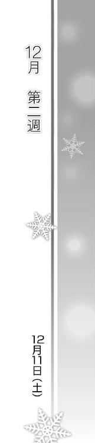
Piece of：春希
翌日、土曜日。
「お待たせいたしました、ミックスグリル定食でございます」
「お会計は二千八百円です。はい、それでは一万円お預かりいたします」
「いらっしゃいませ、何名様でしょうかー？」
この日は珍しく朝から混み合っていて、ランチタイムともなるとスタッフはフル回転。
一応ヘルプ兼杉浦さんのサポート係である俺は、新人教育と通常業務をダブルでこなす必要があり、けどそのおかげでしばらく何も考えずにバイトに没頭することができた。
それでも休憩はやっぱり取らねばならず、短い間に『雪菜が合コン』というフレーズを何度も思いだし、その度に必死で頭から追い出そうとする。
「あ、北原さん、お疲れ様っす。どーですか彼女──杉浦さんは」
夕方、休憩室に姿を見せた佐藤が言う。
「さすがっつーか何つーか、飲み込みも早いしよくやってると思う。根が真面目だから一生懸命働くし、勘もいいし、とても今日が二日目とは思えない」
開店前からここまで、パフォーマンスを落とした様子もなく頑張り続けていた。まさに逸材と言っていいだろう。
「ですよね！ いやー、ラッキーだったなあ。峰城大付属のコって頭はいいんすけど、やる気のないコが多くて......」
「そりゃお前の教育に問題があるんじゃないのか？」
「なので、北原さんに教育係をお願いすれば問題ないと」
否定しろよ店長代理。
「......でも彼女、ホントすごいっすよね？ マジでもう戦力として数えられるレベルで、そろそろ北原さんの手を離れても問題なさそうっすよね？」
「ちょっと早すぎる気もするけど、まあ大丈夫かもな」
「というわけで北原さん、今からキッチンの方に回ってもらえないっすか？ ......ついでにそのまま遅番もお願いできないっすか!?」
「はあ？ ちょっと待て、なんでだよ」
「キッチンの遅番が足りてなくて、誰かに一日通し勤務してもらわないとキツいんすよ」
「なら店長代理が残るべきだろうが」
「実は今日、合コンなんすよ！ 今年商社に入った同級生が、受付嬢のコたちを呼んでくれるって」
ここでも合コンか......週末の夜ってのはそんなのばっかりか。
「お願いします！ 俺の未来のために協力してください！ ちゃんと時間外手当も付けますんで！」
「それナシで働くバイトなんかいるか。だいたいタイムカード押せば勝手に付くだろ......」
そもそもそんな合コン行ったってお前の未来は変わらないと思うぞ。
「ダメっすか？ どうしてもダメっすか？」
「いや、だって......」
「もしかして何か外せない用事あります？ だったらさすがに諦めますけど......」
はああ、とため息をつく佐藤。
「用事......」
『午後七時スタート。場所は御宿、駅前にある菱島ビル五階のイタリアン......』
振り払ったはずの武也の台詞がまたリアルに蘇る。
時計を見ると、午後五時前。
まだ充分間に合うぐらい時間は残っている──と思いかけて、ふと気付く。間に合うって何だよ。行って、どうする気なんだよ？ 一体どうしたいんだよ？
一瞬であれこれ思考が駆け巡った後──
「......この貸し、高いからな」
瞬間、目を見開いて、恩に着ます！ とぺこぺこ頭を下げる佐藤。
これでいいんだ。間違ってないんだ。
俺が雪菜の心配なんて、おこがましいにもほどがある。
あんなに傷付けてしまった俺のどこに、雪菜を止める権利があるって言うんだ──
「......っ」
必死にそう思いながらも、胸のモヤモヤは少しも晴れようとはしなかった。
◇
午後七時。
順調に増え続ける客数に対して、スタッフは予定以下の人数しかいなかった。
ホールはギリギリだが、キッチンは俺を含めて二人しかいない。来るはずだったもう一人の遅番は、電話すると「今起きた」という頼もしい台詞を吐いてくれた。
慌ただしいキッチンで忙しくしながら、俺はどこかほっとしていた。今の俺には、余計なことを考える暇もないほど肉体を酷使する必要があったから。
「先輩、八番テーブルのオーダーなんですけど......先輩？」
けれど、ふと時計を見てしまえばまた思考が動き出す。
七時。七時だ。......始まっている。参加を止めるどころか、連絡一つできないまま。
「あの、先輩」
遅刻の遅番が来るまで、あと一時間。
ここから御宿まで出るのに三十分強。
ってことは、最短で九時前には行けなくもない。
......行く？ 行くだって？ どこに？
「──先輩っ！」
「うわっ!? ご、ごめん、何？」
「仕事中にぼーっとしないでください。仮にもお金をもらっている最中なんですから。だいたい、こんなに忙しいのに」
杉浦さんが正論を突き付けてくる。
「あ、ああ、ごめん。それで......何だった？」
「八番テーブルのお客様が、ミックスフライをチキンソテーに変更できるかって」
「そっか。えっと......まだ揚げる前だから大丈夫。やっとくよ」
「お願いします」
無意識に用意していたフライを片付け、改めてチキンソテーの準備にかかる。
杉浦さんの言う通り、ぼんやりしている場合じゃない。新人の彼女でさえ貴重な頭数として頑張ってくれている状況なのだから。
くそ、武也のせいだ。あいつが根拠もない話をするから。今どき合コンでクスリがどうとか、あり得ない......はずだよな。
そもそもいくら持ち帰り率が高いからって、雪菜なら心配いらない──って、何だよ俺、結局雪菜の心配してるんじゃないか。
やめろ、気にするな。これまで散々傷付けておいて、今さら雪菜を心配するフリなんかするなよ、俺。
「先輩」
「............」
だけど。
こんな状態で、一体いつになったら次のステップに進めるんだろう。
一体いつになったら、雪菜を解放してやれるんだろう。
いつまで経っても俺は──
「......もうっ、先輩っ！」
「うわっ、こ、今度は何だよ!?」
「わたしキッチン業務はまだよくわかりませんけど、先輩がチキンじゃなくてポークソテーを作ろうとしているのはわかります」
「は？ ......あっ」
言われて、自分が取り出していたのが豚ロースだったことに気付く。
「あの、先輩。大丈夫ですか？」
「......ああ、ごめん。大丈夫」
何でもないことのように、そう言う。
「何か、気になってること、あるんですか？ もしかして、何か......用事とかあるんじゃ」
「いや、別に何もない。悪かった。今からちゃんとやるから」
「あ......はい」
深呼吸し、今度こそ仕事に集中する。
何もないんだ。用事も、気にすることも、何も。
Piece of：雪菜
テーブルに着いた一人一人の前にグラスが回ってくる。
「さあ皆、とりあえず乾杯しよっか。はい、小木曽さんも」
「あ、わたしお酒はあんまり......」
「とりあえず最初だけ、ね？ はい、それじゃいきたいと思いまーす。えーと、メリークリスマスだっけか？」
「早ぇよ！」「アホか！」「おいおいもう酔ってんじゃねーぞー」
「ハハハ、まあ何でもアリってことで！ んじゃカンパーイ！」
「「「かんぱ～い！」」」
それを合図に、一斉に響き渡るグラスの音。
雪菜にはそれが無機質な悲鳴のようにしか聞こえなかった。赤く揺れる液体に口を付けはするが、飲む気にもなれない。
レストランを貸し切った、ビュッフェスタイルの空間。清潔感のある店内も、テーブルで笑い声を上げる若者たちも、暗さとは無縁だった。
こんな場に来て、楽しめるわけなどないのだ。そしてそんな雪菜の心情をくみ取ってくれる者もまた、こんな場になんているはずがなく。
「よろしく小木曽さん。俺、五年の庄田」
「あ、はい、よろしくお願いします......」
「俺も五年の竹内。実家は横浜で、総合病院やってるんだ」
「そうなんですか......すごいですね」
「さ、とりあえず飲んでこう！ ああ、何か料理取ってくるよ。小木曽さん何がいい？」
「え？ いえ、自分で取りに......」
「いいからいいから～」
雪菜と同じテーブルに着いた男たちは、我先にと話しかけてくる。
適当にニコニコして相槌を打ちながら、どうして自分はこんなところにいるのだろうかと、雪菜は一人、深い沼に沈んでいく思いでいた。何時間も過ぎ、酒と料理が消費され、周囲が盛り上がっていけばいくほどに、沈んでいく。
「小木曽さん地元だよね？ どっか遠出とかしたりしないの？」
「そうですね、あまり......」
「そんじゃ、たまには出かけた方がいいよ。ね、来週ぐらい初滑りに行かない？ 稲山の方とかもう降ってるみたいだし」
「ええと、でもわたし、スキーもスノーボードも全然で」
「そんなの教えるってー。今年は雪まだ見てないっしょ、見に行こうよ。小木曽さん、せっかく名前に雪って字が入ってるんだからさ。なんちゃって、ははっ」
「雪......」
「そーそー。コイツの車、八人乗りだからさ、皆で行けるんだぜ。四駆だし雪山も楽勝」
雪は......。
「よーし行こう行こう。まあほら、泊まりがアレなら日帰りでもいいしさ」
「そういえば近くに温泉なんかもあったっけなあ。ちょっと年寄りくさいけど」
「......温泉？」
つい呟いた言葉に、男たちが反応する。
「あれ、もしかしてそっちの方が興味あったりする？ 渋いなあ」
「けど逆に面白いんじゃね？ ねえねえ小木曽さん、何だったら温泉旅館で一泊とかどう？」
「たまにはそーゆーのもアリか。んじゃちょっと宿探してみるわ。小木曽さん、来週末でいいよね？」
勝手に進んで行く話に、普段の雪菜ならまず困惑を覚えていたことだろう。どうやってやんわり断ろうかと、そんなことを思ったはずだ。
しかし。
「......ない」
「え？」
「行きたくない」
低い声が、はっきりと雪菜の口から流れ出ていた。
「温泉なんか二度と行かない。雪なんか大嫌い......」
「お、小木曽さん？」
「......あっ」
そして、すぐに自分のミスに気が付いた。
「ご、ごめんなさい、変なこと言って。何だか酔っちゃったみたい」
ちょっと外しますね、と訝しげな様子の男たちを残し、その場を後にする。
「はあっ、はあっ......」
小走りにトイレへ駆け込み、広い洗面台の一つに寄りかかるようにして息をつく。
一体自分は何をやっているのだろう。彼らに何を言ったところで、意味なんてないのに。
本当に言葉を交わしたい人は。
その声を聞きたい人は、ここには──
「......はあ」
しばらく呼吸を整えた後、振り向いて鏡の中の自分を見ようとした、そのとき。
「あれえ？ 誰かと思ったら小木曽雪菜さんじゃないですかあ」
トイレに入ってきた人物が、雪菜を見るなりそう言ってきた。
「珍しいですね、あなたがこういうことに参加するの。小木曽雪菜もやっぱり医学部の男には食い付くんですか、へえ」
「え、えっと......？」
誰だっただろうか。大学での薄い交友関係を思い出してみても、目の前の彼女が誰なのかわからない。
「っ......そうですか、覚えてませんか。ま、わたしのことなんて昔から眼中になさそうでしたし、いいですけど」
「ごめんなさい......同じ学部の人、ですか？ 何年生？」
「柳原朋。あなたの一コ下です」
「柳原、さん......」
名前を聞いてもやはりわからない。前にもこんなふうに話しかけられたことがある相手なのかさえも、わからなかった。
「あーそうですか、付属の頃のことなんてもうすっかり忘れてるみたいですねっ」
苛立ちを隠そうともせず彼女が言う。
「わたしを出し抜いて軽音のボーカルに収まって、ライブであれだけ目立ってたくせに。負け犬は記憶からも消すわけですか」
「軽音？」
瞬間、ふと気付く。雪菜の前にいたという軽音の女性ボーカル。それが彼女？
「......まあいいです。あのときのあなたは、いちいち格下のことなんて覚えていられなかったんでしょ」
「別に、そんなつもりは......」
「けど、それに比べると最近はずいぶん大人しいですねえ。高校と違って大学じゃミスコンにも出て来ないし」
「あれは......もともとわたしなんかが出られるようなイベントじゃないから」
「付属の頃からそう思ってくれたらよかったんですけど。まあ、あなたがいないおかげで毎年いただいてますけどね、ミス峰城大は」
「あ、そうなんだ。すごいんだね、柳原さん」
「......嫌味ですか？ 付属時代、一回もあなたに勝てなかったのに」
「ち、違うよ、わたしはただ......」
いや、彼女にしてみたら嫌味なのかもしれない。
口ごもった雪菜に、彼女は眉をひそめてこちらを見つめる。
「？ な、何？」
「......ふうん。やっぱり変わりましたね小木曽さん。もしかしてあの噂、本当なんですか？」
「噂？」
「小木曽雪菜は、付属の卒業式で彼氏に捨てられたって。そのショックで落ちぶれちゃったーってやつですよぉ」
「っ......！」
ギュッと心臓を摑まれたような感覚が走る。
「あれえ、小木曽さーん？」
「ち、がっ......わ、わたし、そんな......」
「あらら、図星ってゆーか、変なトコに触れちゃいましたぁ？」
口の端を歪めて雪菜を見る彼女。その瞳に浮かぶのは、薄笑い。
「う、あっ......」
「大丈夫ですかー？ そんなふうに、目に見えて狼狽えないでくださいよぉ。わたしが悪いことしてるみたいじゃないですかぁ」
足がふらつき、洗面台に突っ伏した。
「やっぱそうなんだぁ。あの小木曽雪菜も恋愛で身を崩すとか、笑えますね。ま、どーでもいいんですけど。今のあなたに興味ないですし」
「はあっ......はあっ......」
「さーて、戻ろっかな。ロクな男いないから帰ってもいいんですけどね。それじゃ──」
──北原さんによろしく。
「......っ！」
声にならないかすれた叫びが、雪菜の喉を震わせる。
「じゃ失礼」
ひらひらと手を振って去る彼女。
「うっ、あっ......」
思わず胸に手をやった。ナイフで刺されたような痛みが、心から全身に回っていく。
痛い。苦しい。灼けるような熱が血管を流れ、背筋は凍るほどに寒い。
見えない何かが、少しずつ雪菜を侵食していく。
そして心が押し潰されそうになった、そのとき。
「──ふぎゃっ！」
去りかけていた彼女が、突然開いたドアにぶつかり、奇妙な叫び声を上げた。
「い、いったぃ......は、鼻が......」
「あららー、ごっめんねー。まさか人がいるなんて思わなくてさあ」
入ってきたのは、パーティ参加者であろう一人の女性。
お互い気を付けなくちゃねー、などと言いながら、悠々と雪菜の横まで歩いてくると、
「......ざまあみろ、って思っちゃえばいいのよ」
「え？」
小さくそう呟いて、にやりと笑った。
Piece of：春希
「うお、この時間はやっぱ寒いな......」
吹いてきた風に、肩を震わせる。
「もう十二月なんですから当たり前です」
わかりきったことを言うな、といった感じで隣を行く杉浦さんが呟いた。
午後十時四十五分。
グッディーズから南末次の駅前へ向けて歩く道は、繁華街ゆえに明るく人通りも多いけれど、風の冷たさだけはどうしようもなかった。
あれから遅刻者も無事やってきて、キッチンを回すのも楽になった。そのうちピークも終わり、十時を過ぎたあたりで客席の埋まりは三割ほど。十二時の閉店まで働くつもりだったけれど、これならもう大丈夫だろうと判断し、帰ることにしたのだ。
それと、ド新人の杉浦さんを長時間働かせていたことにようやく気付いたから、というのもあった。
確かに人手は足りなかったし、俺も余計なことを考えっぱなしで気が回らなかったとはいえ、さすがに拘束しすぎだった。なので、もう遅いし、こうして彼女を駅まで送ることにしたのだった。
「それにしても、今日は長いことお疲れ。正直あんなに使えるとは思ってなかった。って言っても、朝から晩までバイトするのはこれっきりにした方がいい。身体もたなくなるし」
「別に平気です。むしろ長い時間働きたいです。夜の方が時給もいいですし」
「いや、遅番シフトは入れない方がいい。帰り、こんなふうに君みたいなコが歩いてていい時間じゃなくなるぞ」
「それじゃ、平日学校が終わった後に働けないじゃないですか」
「高校生だから土日だけでもいいだろ？ もうすぐ冬休みもあるし。そんなに無理する必要あるのか？」
「もちろん冬休みも働きますけど、休み明けまでには目標の二十万貯めたいので」
「ずいぶん大金だな......」
「卒業旅行で、皆でヨーロッパに行くつもりなんです。スペイン、イタリア、フランスの八日間。......わたしは熱海とかでよかったんですけど、周りの友達、お金持ちのコばっかりで」
ヨーロッパ......か。
「そういうブルジョアも多いからな、付属」
俺の知り合いにも、とんでもなく裕福な奴がいた。家の地下に音楽スタジオがあるぐらい裕福な奴が。
それとは対照的に、とんでもなく普通の家庭のコも知っている。
彼女は、今──
「先輩？」
「あ、いや。だからって身体壊しちゃ元も子もないだろ。親御さんだって心配するだろうし、こんなふうに毎回俺が送れるとも限らないしさ」
「別に大丈夫ですよ。道明るいですし、送ってもらわなくても。......それにしても、先輩の正義感というか責任感って、かなり身勝手ですね」
「......ずいぶんな言い草だな」
そっちも他人のこと言えた義理か、というのは言わずにおく。
「ずけずけ物を言うのは性分です。それを承知の上で言いますけど──先輩は他人に対してはそうやって責任を感じるくせに、自分のことはあまり大切にしてないみたいです」
「え？」
「それとも、何かから目を逸らしてるみたい」
突然そんなことを言い始める彼女に、一瞬狼狽える。
「何が......何だよいきなり」
「先輩、どうして今日、わたしを送ってるんです？」
質問の意味がわからず、首を傾げる。
「わたしに構ってる暇なんてあるんですか？ 何か大切な用事、あるんじゃないんですか」
「......ないよそんなの。バイトの後輩が心配だから送ってるだけだ」
「噓です。さっきから......いえ、お店でキッチンにいるときからずっと、時計ばっかり見てますよ、先輩」
「それは......」
どうも傍目にもわかるほどだったらしい。
「仕事中もずっと、心ここにあらずって感じでしたし。どうしてわたしより自分の心配事を優先させないんですか？」
「別に......大したことじゃないから」
「ほら、それです。大したことないんだったら、時間を細かく気にしたりなんかしません。集中力を欠くほど心に留めてる何かがあるのに、バイトの時間延長も引き受けるし、こうしてわたしを送ったりもしてる。そんなのおかしいです」
「店のことも君のことも、心配なだけだ。心配して何が悪い、俺だってそういう性分なんだよ」
「なら自分の用事だって心配なはずです」
ずかずか踏み込んでくる彼女に、いらつきを覚えた。どうしてこう、自分が正しいと思い込めるんだ、このコは。
「大丈夫だって言ってるだろ？ 本当に大した用じゃないんだよ」
もう駅の改札口付近まで来ていたが、お互い立ち止まって言葉だけを交わす。
「そんなことないですよね。本当なら、どんな用か言ってみてください」
「なんで言わなくちゃいけないんだ......いいからほっといてくれ」
ため息をついてそう言う俺に、彼女が静かに呟いた。
「他人には干渉するのに、他人からの干渉は拒否しますよね、先輩って」
「っ......」
「干渉どころか、ほとんど自分を見せようとしない。美穂子のことも、結局それが原因だったんでしょう？ ちゃんと本音を伝えれば届いたはずなのに、それをしない」
流れるような彼女の言葉が、俺の心を苦く染める。
「先輩は、どこか変です。厳しくて優しい人に思えるのに、同時にすごく臆病で悲しい人にも見えてしまう」
「......誰だってそういうところはあるだろ。いいからほっといてくれって」
「ほっとけません。わたしも先輩と同じで、他人に干渉するタイプの人間ですから」
「勝手に分類しないでくれ、俺のことなんか気にしなけりゃいいだろっ」
「気にするなっていう方が無理です、先輩がわたしの前でそんな様子を見せたりするから！」
「あのなあっ──」
嫌なところばかりを突かれ、思わず怒りに任せかけたそのとき、俺の携帯が鳴った。
頭の中を瞬時によぎる、雪菜の顔。
「......どうぞ、気にせず出てください」
いくらか我に返ったような彼女にそう言われ、携帯を手に取る。画面には知らない携帯番号が表示されていた。
「もしもし、北原ですが」
『あっ、北原さん。あの、突然すみません。小木曽です』
「え？ 小木曽......って」
『孝宏です。いつも姉ちゃんがお世話になってます』
「孝宏、くん？」
聞こえてきたのは、三年ぶりに聞く雪菜の弟の声だった。
『いきなり電話して、すみませんホントに。ええと、姉ちゃんがまだ帰ってなくて。まあ門限を一時間ぐらい過ぎただけなんですけど、親が気にしちゃって』
「え......」
『どうせ北原さんと一緒だから大丈夫だって言ってるんですけど、心配性なんで俺の話聞いてくれなくって』
帰ってない？ 雪菜が？
家に連絡も入れずに、門限を破ってるなんて。
握る携帯に、じわりと汗が滲む。
『姉ちゃんの携帯、電話しても出てくれなくて。なので、失礼だと思ったんですけど、昔ウチの親が教えてもらった北原さんの携帯番号に電話したんです。姉ちゃん、そこにいます？』
孝宏くんは、少しも心配してなさそうな口ぶりだった。
雪菜が本当に俺と一緒にいると思っているのだろう。
......どうする？ どうすれば？ 考えろ、言葉を選べ、どうすべきなのか──
そして、俺は。
「ああ、一緒にいるよ。ただ......ごめん、ちょっと色々あってさ。雪菜、怒っちゃってて」
『そんなことだろうと思いました。姉ちゃんが勝手に迷惑かけてるんでしょう？ ホントにすみません。親には適当に言っときますんで、さっさと機嫌直せって姉ちゃんに伝言しといてください』
「うん、できるだけ早めに家まで送るようにするから」
『よろしくお願いします』
電話を切った後、後ろめたい気持ちに襲われた。
一緒にいるどころか、俺たちはもう心さえ寄り添っていないというのに。
「......先輩」
「別に何でもないよ。大丈夫だ」
物言いたげな杉浦さん。それを制するように、そう言う。
「それが何でもないって顔ですか？ 鏡見た方がいいです」
「............」
「あ......すみません。今言うべきことじゃありませんでした」
彼女が小さく目を伏せる。
「いや、いいよ。とにかく君は帰れ。気を付けてな」
「先輩は、どうするんですか」
「どうって......」
俺は......どうするんだ？ 小木曽家の人たちを騙してまで。
「小木曽、セツナさん......一緒にいるなんて噓ついて、よかったんですか。先輩が今日ずっと気にしてたのは、その人のことなんでしょう？」
また俺の目を見て言う彼女。まったく、このコは......。
「捜しに行かなくて、いいんですか」
「っ、いいから帰れ、君には本当に関係ないことだ」
「......いえ、わたしも手伝います。捜すの」
「は？」
唐突に聞こえたのは、予想もしていなかった言葉。冗談を言っているわけではなさそうだった。わけがわからず、小さく首を振る。
「いい加減にしてくれ、なんで君が......」
「心配だからじゃいけませんか。セツナさんのことも、先輩のことも。わたしはそういう性分なので。心配して何が悪いんです？」
少し前に俺が言った台詞を、彼女がなぞる。
「だから君には関係......」
「ありますよ。美穂子の件だってあるし、それに......今の電話、小木曽孝宏からですよね。あいつ、わたしのクラスメイトです。わたしは前期のクラス委員で、あいつが後期」
「......!? 噓だろ？」
「驚いてるのはわたしの方です」
考えてみれば二人とも同じ高校で、同学年か。それにしても、なんて因果だ。
「クラスメイトのお姉さんのことなんですから......わたしだって心配になります」
「だからって、君は」
「いいから早く行きましょう。こんなふうに言い合ってる時間が惜しいですよね？ どうしてもわたしを置いていくなら、小木曽に電話します。今、先輩と一緒だって。でもセツナさんは一緒じゃなくて、先輩はすごく慌ててるって」
「なっ......やめろっ、あの人たちに余計な心配をさせるな！ 家族思いのいい人たちなんだ、そんなことしたらどれだけ心配するかっ」
「......知ってます。小木曽、馬鹿ですけど人はいいですから」
だから事情はともかく何とかしてあげたいんです、と続ける彼女。
やれやれだ。
どこか俺に似てるのかもしれないが、打算と惰性で動く俺よりもずっと純粋で......俺よりも、ずっといい人間に違いないだろう。
「お節介にもほどがあるだろ、杉浦さん......」
「だから何度も言ってますよね？ 性格です。あ、それから、わたしにさん付けしなくても結構です。先輩に言われるとどうも不自然なので」
「......ほんっとに、君は」
「さあ行きましょう、時間がもったいないです。どこに行くんですか？ タクシー捕まえますか？」
「いや......電車だ」
彼女の言う通りだ。こんなところで話をしてる場合じゃない、今はとにかく時間がもったいない。
「じゃあ行くぞ──杉浦っ」
「はいっ」
小走りに、改札口から駅構内へと向かった。
目指すは──御宿。
Piece of：雪菜
「さーて、二次会カラオケ行く人ー！」
「飲み行く人はこっちね～」
店を出ても、合コン参加者たちは賑やかなままだった。
「ふう......」
夜の冷たい空気をそっと吸う。もう十一時だ。本当に、自分は何をやっているのだろうか。
「小木曽ちゃん、こっちこっち。カラオケ行こう」
「え？ あ、あの、わたし......」
「大丈夫大丈夫、女の子も半分近く来るし、帰りはちゃんと車で送るから」
「で、でも、わたし歌は......」
「歌うのがアレならこっちおいでよ、まだ飲むからさー。近くにいいバーがあるんだよ」
「お、お酒も......もう」
「なんだよオイ、急に割り込んでくるなよ」
「そっちが抜け駆けしたんだろ？ 彼女、歌うの嫌だっつってんじゃん」
「別に聴いてるだけでもいいじゃねーか」
「ならバーの方がずっとマシだろ、飲めるし雰囲気いいし」
相変わらず当人を無視して周囲だけが勝手に動いていく。
「あの、わたしもう帰らないと──」
「そりゃないっしょ、せっかく仲良くなったんだからさあ」
「とりあえずバー行こうよ、近いし、ドンペリたくさん置いてるんだ。個室取ってあるし、ひとまず移動しちゃうおうよ。......お前もそれでいいだろ？」
「まあいいか......んじゃ行こ行こ小木曽ちゃん、ほらこっち来て」
「やっ、やめ......っ」
男の手が、雪菜に伸びた。
Piece of：春希
「いやあ、どうだったかなあ......何しろ貸し切りで、三十人以上はいたものですから」
「もう一度よく見てください、この真ん中のコです。たぶん、周りに人が群がってたんじゃないかと」
「あ、そう言われてみればいたような......うん、確かにこの写真のコと似てました。一人、すごくかわいいコがいて、人集りができてたから」
「それです、間違いない」
乗り込んだ、会場と思しきそのイタリアンレストラン。
パーティという名の合コンはすでに終わっていたが、閉店作業中の店員を捕まえ、何とか目撃証言を取っていた。
「すみませんが幹事と至急連絡が取りたいんです、連絡先、そちらでわかりませんか？」
「え？ あの、というかあなたは？」
「友人です」
「だったら連絡先ぐらい知ってるんじゃ......」
訝しむような目の店員。まあ普通はそういう反応だよな。
「いえ実は、友人だった、といった方が正しいんです。そいつ、ちょっとヤバイ奴で、最近はもうずっと関わらないようにしていたんですが」
「え？ や、ヤバイ？」
「はい、実は今日のパーティで......ドラッグが使われた可能性があるんです」
「ドラッ......え、ええっ!?」
その言葉を聞いた途端、店員がギョッとした顔になる。その横で、ついでに杉浦も同じ表情をしていた。
「もしかしたら警察沙汰になるかもしれません、そしたらこちらのお店にも迷惑がかかるかも......」
「けっ、警察っ？」
「俺もそうしたくないんです、けどとにかく事実がわからないと、このまま収拾が付かなくなる可能性が高いんです......だから協力してくださいっ、お願いします！」
「わ、わかりました、予約表取ってきますっ......！」
深々と頭を下げた俺に、店員は慌てて奥へと引っ込んだ。
やれやれ、だ。
よく考えると信じがたい話なんだけど、こういうのはとにかく押しと勢いだ。伝え方一つで説得力は変わる、というのは麻理さんの仕事ぶりを見て学んだこと。使い方はともかく、役には立った。
「先輩って......怖いんですね。あんな真剣な顔で、あんなにぽんぽん噓を並べ立てられるなんて」
横に立つ杉浦が複雑そうな顔で俺を見ていた。
「怖いも怖くないも、必要だからそうしたまでだ」
「それをいとも簡単にできるところが怖いんです......あれ？ その写真......ちょ、ちょっとよく見せてくださいっ」
「あ、おい」
「......やっぱり！ これ、この写真に先輩とセツナさんと一緒に写ってるの、冬馬かずさじゃないですか！」
意外なものを見つけた驚きで声をあげる杉浦。
「どうして......？ というかこれ、何の写真......」
「余計な情報を頭に入れなくていい。今大事なのはそこじゃない」
そう言いながら、取り返した写真を財布にしまう。
あの写真......ライブ後の、三人での写真。財布に入れたのも、最後に取り出して見たのも三年前だ。かずさが去って以降、どうしても触れなくて、今日までずっとそのままにしておいたのだ。写真立てに入れてあるもう一枚も、ベッドの下に突っ込んだまま、見てもいない。
けれどともかく、この写真があったおかげで、少なくとも雪菜がパーティに参加していたことだけは判明した。
「杉浦、コンビニ行って携帯の使い捨て充電器買って来てくれ。俺の携帯、充電が半分ぐらいしか残ってない」
「半分あれば充分なんじゃ......それに、いざとなったらわたしの携帯貸しますけど」
「いざってときが来たら困るんだよ。今からはもう、電池切れしてる暇なんかない」
「えっと......それって」
「それだけ電話かかってくるし、かけまくらなきゃいけないんだよ、いいから早く！」
「は、はいっ」
慌てたように駆け出す杉浦。こういうのは本意じゃないが、彼女が手伝うと言った以上、俺の役に立ってもらう。
「お待たせしました、ええと、水野様ですね？」
「それだ、水野高志」
「......こちらの予約では水野治彦様になってますが」
「あいつ、偽名使ってやがるのか？」俺はわざとらしく眉を寄せる。「これホントにひょっとすると......店員さん、なるべくこっちで騒ぎ抑えますから、どうかできるだけご内密に！」
「いや、しかし......」
「万が一警察が来たときは正直に話していただいて構いません、それまではどうか、どうかお願いします！ この通りです！」
思い切り勢い付けて頭を下げたおかげで、偽名使うなら苗字も変えるだろ、なんて突っ込みはされずに済んだ。
「先輩、買って来ましたっ」
店の前で杉浦から充電器を受け取る。
「ありがと、金は後で」
それをジャックに差し込んでから、電話帳を呼び出し、通話ボタンを押す。
幹事に電話を掛ける前に、『話』を有利に進めるための準備をしておかなくては。
ここからは戦いだ。私情を挟まずに、冷静に動け。詰め将棋のように、最善の手を順番に。
『もしも──』
「武也、頼みたいことがある」
久々の、それもこんな時間に連絡してきた男の唐突な言葉に。
『わかった、何すりゃいい？』
俺の親友は、文句の一つも言わず、そう言ってくれた。
Piece of：雪菜
「はいそれじゃ、つまんないパーティ終わってよかった記念で、かんぱーい」
「か、かんぱーい」
御宿駅にほど近いショットバー。
カクテルグラスを合わせると、チン、と高い音が鳴った。
少し口を付けてから、雪菜は隣の人物へと向き直る。
「あの、さっきは助けてくれてありがとう」
「どーいたしまして。あーゆー小者どもは、『幹事と先約がある』って言っとけば空気を読まざるを得ないのよ。ま、当の幹事が近くにいたらアウトだったけどね、あはは」
「す、すごい度胸だね」
「演技なんてのは慣れよ、慣れ」
そう言ってカクテルを口に含むのは、パーティ中、トイレで柳原朋にドアをぶつけたあの女性だった。
先ほど男たちに引っ張られそうになった雪菜を、彼女が助けてくれたのだ──『悪いけどあたしたち、今から幹事の水野くんと飲みに行くことになってるから』なんて口から出任せをさらりと言って。
「とにかく、ホントにありがとう。......ところであなた、前にどこかで会ったこと、なかった？」
何となく、どこかで見覚えがある顔のような気がしていた。
「んー？ 気のせいじゃないかなあ。初対面だと思うよ」
「そう？ なら、気のせいかな」
「あたし長瀬昌子、商学部三年。よろしく、小木曽雪菜さん」
「あ、うん、よろしく長瀬さん。あれ、初対面なのにわたしの名前......」
「そりゃそうだよ。だって、パーティ始まる前から話題だったよ？ 『今日は小木曽雪菜が来る』とか『近くの席は俺が座る』とか色々。有名人なんだね、小木曽さんって」
「そんなこと、ないよ」
「いやいや、あのミス峰城ちゃんよりよっぽどモテてたよ。それに、あなたがこういうイベントに出るのは珍しいって、皆言ってた」
「今日は......ちょっと、知り合いにどうしてもって言われて。いつもは断るんだけど......」
「何かきっかけでもあった？」
「......ううん。ただ断り切れなかった、だけ」
噓だった。でも本当のことを言えるはずもなかった。
「ふうん、そっか。あたしはさ、ちょうど男と別れたところだから参加したんだけど、ホントどいつもこいつも自慢話ばっかでつまんなくって。で、同じくうんざりな顔してた小木曽さんを見つけて、こうやって飲み直しってわけ。悪いね、付き合ってもらっちゃって」
「大丈夫。さっきより、よっぽど飲みたい気分だから」
そう言って、また少し口を付ける。
「あ......そうだ、家族に連絡しとかないと......あれ？」
「どうかした？」
「携帯、電池切れてた」
「あらら。よかったらあたしの貸すよ」
「......ううん、いい。ありがとう」
そう。全てに対して、もういいのだ、という気持ちになり、雪菜はそっと携帯をしまった。
「大丈夫ならいいんだけど。そんじゃ、もっと飲も飲も！ んっぐ......ふう、バーテンさん、これおかわり！」
「は、早いよ長瀬さん......」
昌子の様子に苦笑しながら、雪菜も静かにグラスを傾ける。
そうしてしばらく世間話をし、杯を重ねるうちに、話題はいつしか昌子の別れた男へと移っていた。
「でさあ、言ってやったわけよ。今までその女のことを隠してたのには目をつぶる。けど、どっちを選ぶのかこの場で宣言しろって」
「ず、ずいぶんハッキリ言うんだね......」
「そしたらね、『お前のことも愛してる、けど一番はあいつなんだ』なんて言いやがって」
「っ......！」
思わず息を呑む。あまりにも、誰かの話と似ていたから。
「あたしは愛人かっつーの。それでいい加減馬鹿らしくなったから、こっちから捨ててやったわ、あんな男」
「......強いんだね、昌子さん」
「そう？ だって嫌じゃない？ どんなに愛されたって、それは本命以下の愛なわけでしょ」
「............」
きっとその通りだろう。彼が、彼女のことを忘れてくれでもしない限り、永遠に。
ならばと昌子のように彼を捨てる──そんなことは雪菜には不可能で。
だからこそもうずっと......三年間ずっと、はっきりさせることが出来ないまま、ここまで来てしまったのだ。
「さてと、じゃあ次は雪菜の番！ 恋バナ聞かせてよ」
「え？ わ、わたしは......昌子さんみたいなこととか、別に......」
初めて会ったこの人物とは、もう名前で呼び合うまでに近付けたというのに。
「何言ってんの。さっきのパーティだって男どもの視線を独り占めだったくせに。あれだけ男を惹き付ける美貌の持ち主なんだから、ものすっごい熱い恋とかしてるんだろうなー」
「そんなことないよ、何もないってば。わたしは......彼氏なんか」
「あ、今はフリーなの？ んじゃ昔の話でもいいよ、中学とか高校のときとかさ」
「それは......もっとダメ」
「えー？ じゃあ好みのタイプぐらい教えてよ」
「タイプ？」
「そーそ。雪菜が求めるのはどんな相手か、気になるし」
「えっと......わたし」
どう言ったものかと迷う雪菜に、昌子が続ける。
「あるでしょ、どういう相手とどんな恋愛したいか、とかさ。別に、仮にでもいいよ？」
「え？ ......仮？」
「うん。経験じゃなくて、ただの願望の話。仮の話。過去の話じゃなくてさ、ありそうで実はない、仮定の話でオッケー。てきとーに思い付いた話でいいよ。あ、バーテンさん、二人ともおかわり！」
「............」
仮定の話。単なる、作り話。
「仮、なら......」
「ん？」
どうして話す気になったのかわからない。
ただ、本当は誰かに言いたかったのかもしれなかった。事情を何も知らない人物になら言えることがある。『仮』という大義名分を手に入れることによって、それが可能になったというだけ。
「仮なら、相手は面倒見のいい人がいいな」
「面倒見？ 雪菜って、割と何でも自分で出来そうな気がするけど」
「わたしって、実はかなりの甘えん坊なんだ。だから頼れる人に憧れる。頼って頼って、いっぱいワガママ言いたくなる」
「へえ......」
「そんなわたしのワガママを、一生懸命頑張って叶えてくれる人が好き。口うるさくて、文句ばっかり言って、でも絶対に見捨てたりしないんだ」
「............」
「誰にでも平等に優しくていい。だけどわたしにだけはほんの少し、贔屓してくれると最高かな」
「ふうん......仮とはいえ、何かずいぶんささやかな願望だね」
「そうかな。そうかも」
カクテルグラス越しに、歪んだ世界を覗き見る。
そこは仮定の世界か、あるいは三年前か。
ここではないどこかへ意識を飛ばしながら、雪菜の口だけは勝手に動く。
「けど、どんなにささやかだとしても、それはきっと無理」
「どして？」
「わたしにだけ、なんて無理なんだよ。わたしはずっと......彼女の、次だから」
「彼女......？」
「彼の心にはいつでも彼女がいる。わたしの一歩先に、いるんだ」
これまでも、そしてこれからもずっと。
「けどわたしは、それでもいいと思ってた。彼がわたし以外の人を好きでも構わなかった。わたしのことも好きでいてくれるなら。二人の世界にわたしも存在させてくれるなら、三人で過ごしてくれるなら、それで」
「......そんなんでいいの？ 雪菜、ずっと傷付き続けるんじゃないの、それって」
「いいの。だって、最初からわかってて彼のこと好きになったんだから。だけど結局そのせいで、わたしより彼が傷付いちゃった。心が押し潰されそうに、なっちゃった。そうなって......欲しくなかったのに。全部全部、わたしのせい」
出会わなければ。
雪菜が彼と出会ったりしなければ。
二人の仲に混ざろうとしなければ。
こんなことには、ならなかったのに。
「今でも彼を苦しめてるんだよ、わたし。それなのにね、今でも彼に......構って欲しい」
「たとえ話......だよね？」
「......もちろんそうだよ」
グラスに残った液体を、一気に飲み干した。
Piece of：春希
「ふう......これで、十一人か」
駅近くの居酒屋で飲んでいた男女二人を確認し、一息つく。
電話しまくり、走り回っているうちに日付が変わり、新しい一日はすでに二十分ほど経過していた。合コンが終わってから一時間以上経った計算になる。
ちょうどそのとき、また携帯が鳴った。
「もしもし」
『春希、そっちどうだ？』
「十一人は確認できた。居酒屋にいたのが二組で四人、もう帰ってたのが二人」
ちなみに、その帰ってたうちの一人は、ずいぶん懐かしい声と名前の持ち主だった。一時は一緒にバンドをやってた間柄の彼女。よくわからないが俺の電話にやたらイライラしてた辺り、性格は相変わらずのようだったけど。
「で、ホテルに行ってたのが五人」
『五人......奇数っ？』
「突撃したら、二人は合意だったんでほっといた。残り三人は......」
『まさか......』
「......もちろん雪菜じゃなかったよ。ただまあ、女の子は前後不覚レベルで酔ってたけどな」
『そうか。ったく、そんなコを二人がかりとはロクでもねえ男どもだな』
ちなみにそのコは今、正義感に溢れた女子高生が駅まで送っていってる。それにしても、女子高生に散々罵倒される医学部生ってのも珍しいシチュエーションだった。
「で、武也の方は？」
『二十一人。カラオケに八人、二次会の飲みに十人。途中で抜けて帰ったのが三人でな』
「これで三十二、か」
『ああ。どっちの会場にも雪菜ちゃんはいなかったってよ。だからこれで全員だ』
脅迫まがいの手をつかって幹事から聞き出した参加者は、雪菜を含めて三十三人。雪菜以外の参加者の所在はこれで全て摑めたことになる。
「そいつらの話、信用できそうか？」
『たぶんな。ちゃんと女の子たちの方にも裏取ったし。参加者に久美が交ざってたのは地味にショックだったけど......まあそれはいい』
「ってことは、これで振り出しか......」
パーティ参加者の誰とも一緒にいないってことは、もはやこれ以上調べようがなくなったのと同じだ。それはそれで逆に不安が残る。
どこにいるんだ？ 一人で何やってんだよ、雪菜......？
『あ、それでな春希。二次会組の奴らが言ってたんだが、雪菜ちゃん、どうも知り合いらしい女の子に声かけられて、そのまま二人でどっか行ったっぽいんだと』
「知り合い？」
『パーティ参加者の誰かだと思ったってさ。俺もそうだろうと思ってたけど、こうして他の全員の所在がわかっちまったってことは......』
「......たまたま別の友達に会って、そのまま一緒にどっか行った？」
『どうもそんな感じらしい』
なんだよ、それ。
門限破って、親を心配させて、連絡一つ入れずに遊びに行った？
「何やってんだよ、雪菜の奴......っ」
『ここは喜ぶべきトコだろ、俺の言ってた噂がガセネタだってわかってさ』
「それとこれとは話が別だ」
『そうか？ けどとにかく悪かったな、そもそも俺が余計なこと言っちまったせいで』
「いや、謝るのは俺だ。悪い、最初お前から聞いたときには相手にしなかったのに、今さらになってから慌ててコキ使っちまって」
『構わねーよ、別に。俺たちにとっても雪菜ちゃんは大事な存在だしさ。あ、今度依緖にも礼言っといてくれな。男への連絡、一部担当してもらったんだ。......この合コン、実はもともとあいつにも声かかってたみたいでな』
「そうか、わかった」
けど結局依緖は参加してない......本当に何してんだ、雪菜の奴。
「それじゃ、俺はもう少し捜してから帰るよ。ホント悪かったな武也。感謝してる」
『それはいいんだけどよ』ふう、と武也が小さく息をつき。『......なあ春希。いい機会だ、雪菜ちゃん見つけたら、ちゃんと怒ってあげろよ』
「え？」
『今のお前、ちょっと昔みたいじゃん。素直な気持ち、雪菜ちゃんにぶつけてるじゃんか。それを言葉に出せよ、本人に言ってやれよ。お前がどれだけ心配したか、どれだけ苦しかったか、どれだけ怒ったか、伝えてやれ』
「それは......そんなのは」
『いいから！ 雪菜ちゃん、絶対に喜ぶから！』
「けど、俺にそんな資格......」
『とにかく言え！ 話をしろって！ いいな、俺からの忠告だ。じゃあなっ』
そう言って、武也は唐突に電話を切った。
何を言っても俺が否定ばかり並べるって、わかってたからだろうな。
「はあ......」
今夜のところは、もう雪菜には会えないだろう。そんなことは武也にだってわかってるはずだ。見つけたら怒れっていうのは、今度会ったらきちんと向き合って話をしろっていう、あいつなりの叱咤激励に違いなかった。
けど、俺は。
そもそもこの事態を招いた原因である俺には、そんな資格なんて......。
「先輩」
かけられた声に振り向くと、いつの間にか隣に杉浦が立っていた。
「さっきの女の人、どうにか改札の中に入っていきました。ちゃんと電車乗ってくれるといいんですけど」
「そうか、お疲れ」
「それじゃ、次はどうしますか？ 何か情報ありました？」
「ああ、実はさ──」
武也からの連絡をかいつまんで説明する。
他の全員は捕捉できたこと、懸念していたヤバイ事態は避けられたであろうこと。
雪菜は今、友達らしい人物と一緒にいるからもう心配ないってこと。
「そうなんですか、よかったあ！ あ、でも正確な居場所がわからないんじゃ、まだ喜んでもいられないですね」
「いや、ホントによかったよ。むしろ下らないことに色々付き合わせて悪かった」
「言い出したのはわたしの方なので、気にしないでください。あと、懸念がなくなったんですから、『下らないこと』じゃないですよ」
そう言って、杉浦は微笑んでみせた。
「そっか。ありがとう、本当に助かったよ。......あ、まだ終電間に合うな。俺はもうちょっと捜すけど、君は今度こそ帰った方がいい。駅まで送る」
「大丈夫ですよ、今駅まで行ってきたところですし」
「いいから送るよ。送らせてくれ」
「そうですか？ なら......断りません」
そうして冷たい風の中を二人で歩き出す。
「そうだ。これ充電器のお金」
「あ、はい。って、こんなに高くなかったです」
「いいから。余りで最寄り駅からタクシー乗ってくれ、遅くなったのは俺のせいだし」
「そういうわけにはいきません、ちゃんと差し引きしてお返しします。わたしが勝手に手伝ったんですから」
「だけど......」
「気にしないでください。今日は先輩の意外な面が見られただけで、充分です」
「え？」
「お釣りはまた今度お返ししますので。......いつも冷めてるくせに、あんな必死に、一生懸命にもなれるんじゃない。ふふっ」
何か呟いた杉浦が、どこか楽しげに笑う。その小さな微笑みは、いったいどういう意味なんだろうか。
そう思っていると、駅の改札が見えてきた。
「さてと、着いちゃいましたね。それじゃ先輩、また」
「ああ。今日はありがとう、気を付けて」
「はい、先輩も......っ!?」
別れ際、突然杉浦が目を見開く。
「あれ、どうかした？」
「せ、先輩っ、あれっ......小木曽のお姉さん、セツナさんじゃ」
「え？」
彼女の視線の先を振り向くと、そこには。
「雪、菜......」
何をするでもなく、ただぼうっと天井を眺めている少女が、改札口に突っ立っていた。
今にも搔き消えてしまいそうな、そんな危うい存在感で。
◇
「行っちゃったね、終電」
「ああ......」
「どうしよっか。二人でどっか泊まっちゃおっか」
「帰るんだよ......ちょっと休憩したら、タクシーで」
「............」
遠くに響く終電の音。乗れなかったわけじゃない。現に杉浦はそれに乗ってちゃんと帰ったはずだ。
でも、雪菜は改札を抜けようとする素振りも見せなかったし、そんな雪菜を促すことも俺にはできなかった。
酔って動けないのかとも思ったけれど、ちょっと座れるところに行こうか、と提案すると素直についてきた。
誰もいない、深夜の公園。そのベンチに並んで座ると、闇が冷たく頰を撫でていく。
こうやって、顔を突き合わせて喋るのなんて、いつ以来だろう。
「孝宏くんから電話があってさ。雪菜、今日は飲み会だったんだろ？ 晩ご飯いらないってことだけ伝えて、こんなに遅くなるかもってことは家の人に言ってなかったんだな」
「──孝宏が？」
「親御さん、ずいぶん心配してるみたいだったぞ。雪菜に連絡取れないなんて、そうそうあることじゃないだろうから」
「......あー、そういえば電池切れちゃってたよ、あはは」
雪菜は、なぜかそう言って笑う。電池切れ、って......わかってたんなら、それこそ充電器買うなり何なり、対処法はあっただろ？
「はーあ。けどホント嫌になっちゃうな。二十歳超えてるのに門限とか、いい加減にして欲しいよ。疲れちゃう」
「そんな......そんなこと言うなよ。皆、雪菜のこと心配して......いい人たちじゃないか」
「............」
今度は黙り込む雪菜。何か変だ。やはり相当酔ってるのだろうか。
「ね、春希くん。どうしてわたしの居場所がわかったの？ 孝宏から電話が来ただけなんでしょ？」
「それは......」
わかったわけじゃない。ただひたすら駆けずり回ってただけだ。
「......武也に連絡したらさ、雪菜が参加してるかもしれない合......飲み会があるって聞いて」
違う。
もっと前から知っていた。ずっと、ずっとそのことでモヤモヤしていた。
「その会場に行ってみたら、もう終わった後だった。だから俺、それで──」
それで必死になった。雪菜を捜すためだけに他人の迷惑顧みずあちこち電話しまくり、居酒屋はおろかホテルにまで押しかけ、躍起になって動き続けた。
雪菜を捜して走り回ったんだよ、俺。
「それで......もしかしたら会えるかもしれないと思って、駅前をうろついてた。それだけだよ」
どういうわけか、真実を語らない俺の口。雪菜の身を案じ、雪菜のために行動したことを、当の雪菜には伝えられない。
「そう、なんだ」
雪菜の無感情の呟き。
「............」
「あのね、今日の飲み会すごかったんだよ、パーティみたいな感じで」
「え？」
突然話し出した雪菜が、また変に笑みを浮かべる。
「料理もたくさんあって、高そうなお酒もいっぱいで。男の人たちも、皆すごいお金持ちみたいだったよ。どこの病院の跡取りだとか、家族全員お医者さんだとか、外車を何台持ってるだとか、わたしみたいな一般人とは全然違う感じだったなあ」
「......へえ」
「けどね、皆とっても優しかったよ！ 今度初滑りに行こうって話で盛り上がっちゃって！」
そんなの、連中の策略に決まってるだろ。そんなロクでもない奴らにも、今みたいに笑いかけてきたのかよ？
その間、俺がどれだけ心配したかわかってんのかよ？
「......そっか。雪菜、雪好きだもんな」
そこまで思っても、俺の口は──心を、本音を、伝えられない。
「っ！ うん......あ、それでね、パーティで友達になったコと意気投合しちゃって、終わってから二人で飲んでたんだ」
「......？」
パーティで知り合った？ おかしいな、人数を確認し間違えてたのか。
「彼女、長瀬さんっていうんだけど、面白い人でね。明け透けで、いい加減なところもあって、でも頼りがいがあって。すごく話が合ったから、時間を忘れて話し込んじゃった」
「そっか......」
「ホントに楽しかったなあ。最高の一日だったなあ」
微笑みながら、雪菜が天を仰ぐ。
その様子に、ギリ、と奥歯を嚙み締めた。
何だよ、それ。
何が最高だよ、こっちは最低の日だったのに。
そんな気紛れ程度の理由で、こんな時間まで遊び惚けて......俺がどんな苦しい思いをしたかわかってるのかよ、いい加減にしろ！
「雪菜っ......」
怒れ。叱れ。武也も言ってたじゃないか、そうしなきゃダメなんだ。
そう思って、口を開いた。なのに、濁って粘ついた何かが喉を詰まらせる。
......怒る？ 俺が雪菜を怒るだって？
こんなに久々に、こんなに勝手に会いに来ておきながら、どの面下げて怒る気なんだ？
「......春希くん、何？」
「いや......酔い醒めたなら、帰ろうか」
「............」
そう告げると、雪菜の顔はふいに色を失う。
「あ、そうだ。家族の人には、今夜はずっと俺と一緒にいたって説明してあるから。口裏合わせるために、覚えてくれよ。夕方から横浜の方に遊びに出かけた。晩ご飯を中華街で食べるためだったんだけど、実は目当ての店が休みで、それで──」
「......やだ」
「え？」
俺を遮るように、雪菜が言った。
「やだ、って......そりゃ勝手にそう言っちゃって悪かったけど、家族を心配させないことの方が大事だろ？ でな、それが原因で俺たち......」
「やだよ。そんな噓、つけないよ」
「いや、けどさ......」
「そんな楽しそうな噓なんて──つけるわけないじゃないっ！」
その顔が、くしゃくしゃに歪んだ後。
悲痛な叫びが、公園に木霊した。
「せ、つな？」
「そんな......ありもしなかった楽しい思い出なんて話したら、きっとわたし耐えられないよ......言えないよ」
涙が雪菜の頰を伝う。
「今日ね、あんなパーティなんか行きたくなかった。知らない人たちとお酒なんか飲みたくなかった。楽しくなんか、全然なかった」
「え？ じゃあ、なんで......」
「春希くんなら......もしかしたら春希くんが、どこかでパーティのことを知って、『行くな』って止めてくれるかもしれない、って。ただ、それだけだったんだよ」
──何、だって？
「結局、それは叶わなかった。けど、パーティに行けば、ひょっとしたらそこに止めに来てくれるかもしれないって......しばらく待っていれば、連れ出しに来てくれるかもしれないって。だから、わたし......」
そんな、まさか。
俺は。俺は......。
「ひどいよね、わたし。構って欲しいだけの子供だよね。......でもそうするしかなかったんだよ。こんなウザいことしか、もうできないんだよっ！」
「雪菜......」
「今日一日......こんな馬鹿なことやってる自分が悲しかった」
雪菜のせいじゃない。それは俺がやらせたことに他ならない。そして、その行為を無駄なものにしたのも、やっぱり俺だった。
「こうやって最後に春希くんと会えてすごく嬉しかった。けど春希くん、わたしのこと怒りもしない。文句を言ってもくれない。何の感情も、見せてくれないよね」
雪菜の瞳が寂しさに揺れる。
「......もう、わたしのこと、ふっきれた？ どうでもいいって思えるように、なった？」
「ち、違う、俺──」
「違わないよっ！ 昔なら怒ってくれた、叱ってくれたっ......なのに」
小さな肩を震わせて、雪菜が叫ぶ。
久々に会えたのに、こうして俺はまた雪菜を傷付けている。
「......水曜だって、苦しかったんだよ」
水曜。雪菜からの電話を、俺じゃない人物が取ってしまった日。
こんなすれ違いのきっかけになった、ボタンの掛け違えが起こった日。
「先週、春希くんが連絡をくれたから──だから今週の、同じ曜日、同じ時間なら、もしかしたらって思って。丸一日かけて、電話する勇気を振り絞って。何回もやめようかと思ったけど、その度にボロボロ泣いちゃって......やっぱりもう一度声が聞きたくて......っ」
俺が安穏とレポートの手伝いをしているとき、雪菜は心を激流に晒していた。その苦しみがどれほどのものだったのか、考えるまでもない。
「うっ......うわああ......っ！」
俺はいつもそうだ。
雪菜を傷付けまいとしながら、結果的にはその温かい心をいつも抉り取ってしまう。
そして、目の前で泣き震える彼女を抱き締めることも、その場に置き去りにして帰ることも、どちらもできない臆病者だ。
「......ね、春希くん。好きな人、できたのかな？ あの電話の人、そうなのかな？」
しばらくしてから、雪菜がぽつりと呟く。
「あ、あれはっ......」
「もしそうなら、今度紹介してね。大丈夫、変なこと言わないから。もう春希くんを苦しめたり、しないから」
雪菜が弱々しい声で言う。
「そしたら、そしたらわたし、きっと......」
「............」
きっと──何なのだろう？
そうすれば、雪菜は俺をふっきれるのか？ 俺なんかから解放されるのだろうか？
誤解だろうが何だろうが、そうした方が雪菜のため、なのか？
だったら俺は、そうすべきなのだろうか......？
「やだっ！」
けれど──
「今のなしっ、言わないで、何にも言わないでっ！」
けれど雪菜は、自分で示した辛い解決の道を、すぐさま撤回してしまう。
「何も聞こえなかったよね？ わたし何も言ってないよね？ お願い、お願いだから、何にも聞いてないことにしてくださいっ......お願いっ......」
「雪菜......」
俺たちは、いつもこうだ。
自分から別れを告げることも、まだ好きだって言うこともできない俺と。
そんな俺に引きずられたまま、前にも後ろにも一歩を踏み出せないままの雪菜。
三年前から、ずっとこんなふうに過ごしている。
何も変えられないままに。
「迷惑かけてごめんね......もう、帰るよ」
今回こそは、お互い近付こうとしたはずだった。少しは近付いていたはずだった。
なのに、どうして結局こうなるんだろう......。
Piece of：春希
『だけどいい歌だよね、ホント。普通に人気アーティストの新曲だって言われても信じちゃいそう』
だよな。自画自賛するのも何だけどさ。
『曲はあたしが作ったんだから当然。北原の歌詞は、まあ............ねぇ』
悪かったな！ ていうか、それを引っ張り出してきたのはお前の方じゃないか、まったく。
『もう、冬馬さんってば。本当は歌詞、気に入ってるんだよね？』
『小木曽のセンスの悪さと、思い込みの勝手さは相変わらずだな。救いようがない』
相変わらずの物言いなのはどっちだ。
『さ、もう本番まで十二時間ないぞ。二人とも、まだやれる？ 準備いい？』
『もちろんっ。ね、春希くん』
ああ、やれるさ。
三人なら、まだまだ──
「っ！」
ハッとして起き上がると、そこはいつもの無機質なマンションの部屋。
どうやら机に突っ伏して眠っていたらしいと気付く。
「寝られたのか......俺」
ぽつりと呟く。
あの日、お互い無言のままタクシーで雪菜を家まで送り、待ち構えていたお父さんに朝まで説教を受けた。孝宏くんが適当に助け船を出してくれ、空が明るくなったところで、お母さんが朝ご飯を用意してくれた。三年前と変わらない、温かい家族。それが余計に辛かった。
その優しい家庭を後にし、マンションに戻ってからずっと、眠れなかった。
部屋から出る気も起きず、食欲もわかず、思い出したようにノートパソコンを開き記事を書こうとしたのだけれど、指先も心も全く動こうとはせず。
人形のようにぼうっとしたまま週末を過ごし、泥のように混濁した意識のまま月曜の朝を迎え、大学へ行く気にもならず、ただひたすらパソコンのディスプレイを眺めていて......そうしていつの間にか、眠っていたようだった。過去の夢を見るというおまけ付きで。
あの日だ。あの日の夢だ。
ライブ前日、三人でひたすら新曲の練習に打ち込んでいた、冬馬家の地下。
人生で一番充実していた時間。
楽しくて、笑い合っていて、綺麗に絡み合っていた三人の音が心地よくて。
だからこそもうずっと、思い出さないようにしていたのに。
それをこんな状況で夢に見るなんて──
「............」
立ち上がり、パソコンの前を離れて洗面台へ向かう。
顔を洗おうとして鏡を覗き込み、気付いた。
「あ......」
何だよ。
俺、泣いてんのかよ。
「は、ははっ......」
全てを洗い流すように、冷たい水を顔にぶっかけてから、またパソコンの前に座る。
もう月曜の夕方だ。明日、新しい記事を麻理さんに見せなければならないというのに、原稿はまだ真っ白。時間がないどころか絶望的。
書けるはず、ない。
『やろうよ、頑張ろっ』
『北原。お前、諦めたのか？』
......思い出す。耳が、記憶を勝手に再生する。
あのときも絶望的だった。学園祭を前に軽音が解散して、もうライブなんてやれるはずなかった。
だけど、必死に足搔いた。端から見れば滑稽なほどに、必死だった。色んなことが起きて、もうダメかとも思ったけれど、最後の最後まで死にものぐるいで走り抜いた。
辛くて、苦しくて、でも泣きたくなるほど楽しくて。
俺が味わった感情のその傍らには、雪菜がいた。
そしてもちろん、かずさが、いた。
二人が──いたんだ。
「............」
指が、血の気を取り戻していく。
沈んでいた意識が、沼からゆっくりと浮かび上がる。
......書かなきゃ。
あのときのことを、俺が書かなきゃ。
あの二人が小木曽と冬馬さんで、俺とあいつが北原と冬馬だった、あのときを。
抱えていた孤独を。忘れられなかった寂しさを。
あいつが持っていた感情を、自分勝手な振る舞いを、とんでもない能力を。
俺が、書かなきゃ。
全てを頭に蘇らせろ。
三人でいた時間を、もう一度現実に引っ張り出せ。
「......っ」
涙が頰を流れる感覚が、今度はわかった。けれど拭わない。止まるわけないのだから、流れるままにしておく。
喧嘩もした。でもすぐまたわかり合えた。
何よりいつでも二人に会えた。いつも一緒だった。
なのに今は、顔を見ることも容易じゃない。
ああ──あの日に。
三年前に、帰りたい。
another point of view
「お前らで何人目かなあ。例の『開桜グラフ』以来、多いんだよ、見たいって奴ら。この間、誰だったかダビングしろって言ってきた先生もいたし」
「そりゃヨーロッパのコンクールで優勝だからなあ。今や雲の上の人みたいな扱いだし、皆が気になるのも当たり前だろ」
「............」
「小木曽たちもそのクチ、ってわけだ」
「そうなんだけど、実は杉浦がさ、その冬馬かずさとウチの姉ちゃんが親友だったってこと、全然信用しなくて。だから証拠見せてやろうと思ってさ。な、杉浦？」
「......まあ、そうね。あと『準優勝』だから」
「小木曽の姉さんも伝説だからなあ。三年連続ミス峰城大付なんて前人未踏、未だに破られてない大記録なわけだし」
「それがわかんねーんだよなあ。あんなの、どこにでもいるふっつーの姉ちゃんなのに。どこがいいんだか」
「なら弟代わってくれ。けど小木曽の姉さん、本家のミス峰城大には出てないんだって？ あれで優勝すれば芸能界入りも結構あるってのに」
「姉ちゃんが芸能人になったらそれこそ笑っちまうよ。まあ今は彼氏がいるし、ラブラブだし。こないだなんか二人揃って夜中の二時に帰ってきてさあ、親父が怒った怒った」
「......っ」
「しかし考えてみれば、ここに映ってるの、あの冬馬かずさと、あの小木曽雪菜のユニットなんだもんなあ。この動画、マジで将来価値が出たりして」
「冬馬先輩はともかく、ウチの姉ちゃんに何の価値が──」
「......そんな話はいいから、早く見せてよ。三年前の、軽音楽同好会のライブ」
「わかってるよ。えーと、どれだったかな。確かチャプターの......」
◇
「麻理さーん、宅配」
「私に？」
「編集部気付ですけど、送り主が峰城大付属高校になってたから。これ、北原くんがこの前取材に行ったトコですよね」
「そうね、北原と冬馬かずさが通ってた高校」
「北原くん来てないし、とりあえず麻理さんにって思ったんですけど」
「ふーん......資料か何か送ってもらったのかしら」
「冬馬かずさと言えば、北原くん、明日が書き直し記事の提出日ですよね。実質今日が締め切りかあ」
「まあそうなるわね」
「初めて書いた記事が総ボツで書き直しだなんて、ショックだったろうなあ」
「何言ってんの。あれぐらいでいちいち落ち込んでたら、ウチで仕事なんてやってけないわ」
「まだバイトですよ、彼......」
「将来ウチ受けるって言ってるんだから、今から鍛えとかないと。即戦力ってのはこうやって作るもんなのよ。あいつの場合、素養もあるし」
「麻理さんってば、買ってますねえ、ホント」
「何よ？」
「いいえ、別に～」
「鈴木、あんたときどきそういう変な顔するのやめなさいよ、まったく」
「はいはーい、わかってますー」
「もう。それで、これ何かしら。記事書くための資料だったら、北原に連絡しなきゃいけないわね。ひとまず開けてみて、っと......ん？」
「何でした？」
「ＤＶＤ......？」
「あ、もしかして冬馬かずさがピアノ弾いてる映像とかじゃないですか？ せっかくだから第二会議室のモニターで見てみましょうよ......ん？」
「あれ、呼ばれてるわよ、鈴木」
「はーい、ここでーす！ ......それじゃ、ちょっと行ってきますんで、麻理さん先に見ててください。わたしもすぐ会議室行きますから～」
「はいはい。......さてと、何が映ってるのかしらね、これ」
◇
「懐かしいなあ。生で見たんだよ、このステージ。姉ちゃんと、冬馬先輩と、北原さん」
「ホントすげえ盛り上がりだよなあ。俺たちの三年間で、こんなに盛り上がったライブなんか一回もなかった気がする」
「............」
「にしても、会場で見たときも思ったけどさあ、世の中わっかんねーもんだなあ。歌ってるのがウチの姉ちゃんなのに、こんなに盛り上がるなんて」
「小木曽の姉ちゃんだからだろ」
「............これ、誰？」
「んなわけねーだろ、やっぱ曲の力は偉大だな」
「こんなの............じゃない」
「おい小木曽、お前やっぱ俺と弟代われ」
「わたしの知ってる先輩は......こんなふうに笑ったり、格好つけたり......自分に酔ったりしない」
「まあいいや。どうだよ杉浦、これで冬馬かずさとウチの姉ちゃんが親友だってわかったろ？」
「こんなふうに......自分を晒したりしない。他人が近付いて来るのを恐れて、心からの感情を出したりしないはずなのに......」
「んでさ、このギター弾いてる男子が姉ちゃんの......杉浦？ 聞いてる？」
「これ、ここに映ってるのは、あのときの......」
「何独りでぶつぶつ言ってんだよ？ おーい？」
「音楽室にいた、先輩だよ......」
◇
「なっ......これ、北原......」
「あいつ、どうして......なんで隠して──」
「......いや。そりゃ隠すわよね」
「............」
「......何よあいつ。別にいいじゃないの」
「ギターなんてやって、普通に青春送ってたんじゃない」
「普通に格好いいじゃない......」
「ふわあああんっ、麻理さぁぁぁん」
「──っ!? リ、リモコン......停止っ」
「ひーん、デスクにダメだしされちゃいましたよお、麻理さーん......あれ？ 麻理さんＤＶＤは？ 見てないんですか？」
「ああ、うん。やっぱり......見る前に、北原に確認取ってからにしようかと思ってさ。一応」
「そうなんですか？ まあ確かに、勝手に見るよりその方がいいかぁ。うー、久々に見たかったなあ、冬馬かずさの演奏。前に麻理さんとコンクール観に行ってから、もう三年も経ってますもんねー」
「............」
「麻理さん？」
「え、あ、うん......そうね」
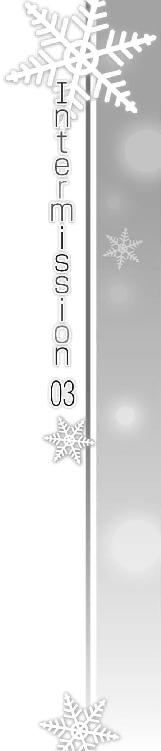
『えっと。次が......最後の曲です』
『実は次の曲は、わたしたちのオリジナルなんです。まだ誰にも聴いてもらってなくて......おまけに練習時間もあんまりなかったんですけど......』
『でも、自画自賛できるぐらいすごくいい曲になってますので、きっと皆さんにも気に入ってもらえると思いますっ』
『それじゃあ、わたしたちの曲、聴いてください』
『軽音楽同好会オリジナル曲で、タイトルは......』
Piece of：春希
『ピアノ、やめようと思ったんだ』
『あの人の娘でいること......やめようと思ったんだよ』
「............」
『わからないけど、ただ......何もかも、気に入らなかったんだよ。どうしようもなく気に入らなかったんだ。それだけだ』
「............」
『ま、控え目に言って......大成功じゃない？』
『確かに歌詞だけダサかったな。......でも悪くはなかった』
「............」
『あたし......あたしは......ねえ、北原──』
「────────────っ！」
書けた。
「はあっ、はあっ......」
何時間も何十時間もかけて一行も進まなかった原稿が、ものの一時間もしないうちに書き上がってしまった。気力と体力のすべてを、引き替えにして。
「うっ、ぐ......あ」
どっと疲れが押し寄せる。気を抜いたら今すぐ気絶できそうだ。
身体が悲鳴を上げるが、それ以上に心は見えない血を流していた。あらゆる感情が、頭の中で錯綜している。
あいつを売った。俺たち三人だけの秘密を、世間に晒すべく書き記した。
けど、そんな最悪な行為をしている間、三年前のあいつを思い出して恍惚としていた。
あの孤独な『お隣さん』の正体を知り、仲間に誘い入れ、一緒に頑張った日々を。苦しみを打ち明けてくれた告白を。不器用で素直じゃない様子を。見せてくれた笑顔を。
あいつが隣にいた時間を思い出し、ニヤニヤ笑って、ボロボロ泣いた。
自分の心を、ズタズタにしながら。
「メール......送らないと」
震え出した指で、パソコンのメーラーを立ち上げる。
意識が遠のく。思考が次第に白く染められていく。
ここで倒れたら、次いつ起きられるかわからない。だから今送らないと。気絶しないうちに、後で送るのをためらったりしないうちに。それに麻理さんなら、少しでも早く送ればそれなりの対応を取ってくれる。
メールにファイルを添付し、きっと今も会社にいるであろう麻理さんに向けて、送った。
三人の思い出が──電子の海へと流れていった。
「っ......」
ぐらりと視界が揺れ、そのままずるずると床に這いつくばった。
身体は悲鳴を上げていたけれど、その痛みが心地いい。
すべてを吐き出した今は、雪菜のことも、かずさのことも、それにこの三年間のことも全部ひっくるめて、俺の頭の中で美しく透き通っている。
起きたときには、また暗く濁ったものに戻っているとしても、今だけは。
「おやす、み......」
呟いた言葉は、歩いて行けるくらい近くにいる人か、飛行機で十時間以上かかる国にいる人か、どちらに向けられたものなのか、わからなかった。
あるいは二人に向けて言ったのかもしれない。
今の二人か、もしくは......三年前の、俺の仲間たちに向けて。
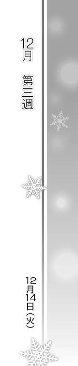
Piece of：春希
「北原、なんだこれは」
火曜日。
大学はおろかバイトにすらギリギリの時間に起きた俺を待っていたのは、またしても険しい顔をした麻理さんだった。その手には、プリントアウトした俺の原稿。
まあ、予想してた通りの反応ではあったけど。
「ま、麻理さん、だから北原くんは......」
「そうですよ、締め切りに間に合わせてはきたわけですし、そこを買ってやっても......」
「何もわかってない奴らは黙ってろ！」
フォローしてくれようとした鈴木さんたちを、麻理さんが一喝する。
「冬馬かずさが峰城大付属高校に入学したのは、母親である冬馬曜子に捨てられたから？ 本人の意志はどこにもなかった？」
「少なくとも本人はそう思ってました。......後で誤解だったって判明しますけど」
「高校では周囲とレベルが合わず、ついでにソリも合わず、二年間クラスメイトの誰とも会話しないままだった？ 遅刻・サボりは常習犯、教師の手にも余り、三年生からは音楽科をドロップアウト？」
「移った普通科で何とか卒業できました。それも危ないところでしたけど」
「ホントすごいゴシップ記事......有名になる前からこれとか、まさに冬馬曜子の娘って感じよね......」
麻理さんが持っていた原稿を見た鈴木さんが、何とも言えない顔で呟く。
「北原、一体誰に聞いたんだこんな話......教師か？ 友達か？」
「本人です。まあ、三年前に、ですけど」
「............」
麻理さんは相変わらず厳しい顔をしている。まだ読んでいない他の部員たちも、俺の原稿を回し読みして目を丸くしていた。
けど、麻理さんのその顔には、以前のときのような悔しさはもう見られなかった。
「北原。本当に載せてもいいんだな、これ」
「それはまだ何とも......学校側の了解とか取ってませんし。何しろ取材したこと一つも使ってませんから」
「学校側のコメントとこの記事の内容は関係ない、ってことでしょ？ なら、別に文句を言われる筋合いもない」
まあ、そういう考え方もあるかもしれないけど。
「向こうには『取材したけど使わなかった』って言えばいい。私が連絡しておく」
「え？ ま、麻理さん、まさかこれ、ＯＫなんですかっ？」
鈴木さんが驚きに目を見開く。
「アンサンブルの編集長には、ヤバイ原稿を見せるから覚悟しておくようにって昨日のうちに言ってある。だからこれをどう直すかって話はもういい。後はどう通すかで、それは私の仕事」
けど、と麻理さんが厳しい顔のまま俺の目を覗き込む。
「......北原、私が載せてもいいかって訊いたのは、学校がどうとかそういう意味でじゃない」
「え？」
「これがそのまま掲載されて、日本中の人の目に触れることになったとしても......北原だけの真実じゃ、なくなったとしても」
「っ......」
「お前は、いいんだな？」
俺が書いたのは、あのときあいつの側にいた人間だけが知り得る情報。
汚してはならない聖域のようなものを、さらけ出す行為。
それを俺自身が良しとするかどうかなんて、もう──
「......はい。構いません」
もう、考えない。
◇
「......すまなかった」
「はい？」
「初仕事で相当酷なことをやらせた。実はかなり後悔してる」
麻理さんがそう呟くのと同時に、コーラの入ったグラスがカランと音を立てた。
ここは、会社の近くにある小さなバー。
バイト後に帰ろうとしたら、麻理さんから行きつけの店に誘われたのだ。麻理さんはまだ後で編集部に戻るってことで酒はナシ。バーを喫茶店代わりにする辺り、麻理さんらしかった。
「そんなこと......俺はチャンスもらえて感謝してます。最初あんな原稿を出したりしたのは、俺の実力不足ですし。いい結果が出るかどうかもまだわかりません」
「そうじゃない......そういうことじゃないんだ。さっき訊いただろ、『お前はいいのか』って」
小さく俯いたまま、麻理さんは一枚の薄いケースを出した。
「昨日、峰城大付属高校から届いた」
「え？」
ケースを開けると、『二〇××年 二日目ステージイベント』と書かれた一枚のディスク。
「あ......」
そうか、そういえば。
「で、断りなく再生してしまった。本当に、すまない」
「別に、麻理さんが謝る必要はありませんよ」
そう呟く。
別に悪意があったわけじゃないし、俺宛だったわけでもないのだ、仕方ない。
「私、あんたに言ったわよね。冬馬かずさと同級生っていうアドバンテージに期待してるって。知らなかったとはいえ、それがどれだけ配慮が足りてなかったことか......悪かった」
「そんなの、それこそ麻理さんのせいなんかじゃ」
「だって、単に一緒にライブやったメンバーだ、っていうんなら、北原がそれを黙ってる理由がないでしょ」
「え？」
「まさか北原みたいな面白くない堅物が、こんな派手な経歴と才能の美人とな......」
「まあ、確かにそうですね。俺、つまんない人間ですし」
「あ、いや違うんだ、別に北原がモテなさそうだとか、こんなコとあれこれあったなんて信じられないだとか、そう思ってるわけじゃなくて......って、なんか墓穴掘ってばかりだな、私」
「いえ、気にしてませんから」ある意味、言われ慣れてる言葉だし。「ついでにこのＤＶＤのことも、もう気にしないでもらえると助かるんですが」
「......重ね重ね悪いけど、そうはいかない。やっと北原に抱いてた違和感の正体がわかりかけてきたのに」
「違和感？ 何ですか、それ」
「いやその......昔言ったと思うんだけど、あんたは仕事にただ単に忙しさだけを求めてる気がする。無理を背負い込みたがってるっていうか。若さ故の無茶とかとも違ってて」
「だって、生活がかかってますから」
「そういうのとも違うんだ。何て言うか......破滅願望があるような気がしてた。何かから逃げるために自分を追い込んで、そして壊れてしまいたい、みたいなね」
「............」
さすが麻理さん、とでも言おうか。
「で、その原因はもしかしたら──」
麻理さんはふとグラスに視線を落とし、一瞬何かためらうような表情を見せたが、そのまま顔を上げて、言った。
「もしかしたら、冬馬かずさなんじゃないのか？」
核心を突くその一言が、俺の耳に届く。
その通りだ、その通りだけど、でも。
「......もう終わったことです」
「けど、北原の心の中じゃ終わってない」
「──っ！」
「終わってないから、別のことに逃避するんだ。たとえば仕事に、な」
カラン、とグラスの氷がまた音を立てる。
「だけどね北原、そんなふうに逃げで勉強や仕事に打ち込んでも、ベストの結果は出せないぞ」
「............」
「本気で臨まないと、仕事は結果を返してくれないからね」
真剣に向き合い、取り組む。
それは今回の記事の件で痛感したことだ。
「......麻理さんも、そうだったんですか？」
「まあね。だから経験上の話よ。伊達に北原より長く生きてないわ」
そんなに歳は離れてないけどね、と笑みを零す麻理さん。
その様子を見てふと、この人も辛い体験をしてきたのかもしれない、と気付く。
「そう、ですか。......恋愛も、やっぱり同じ、なんですかね」
「そうね、恋愛も同──え？」
「いえ、だから仕事も恋愛も同じなのかなって。恋愛も、経験ですか？」
「へっ？ あ、そ、そうだな、うん」
「へえ......やっぱり好きな人とか、いたんですか」
俺がそう言うと、麻理さんがふいに目を見開いた。
「え、えと......あ、当たり前だろそれぐらいっ」
真面目な顔をしながらも、なぜかその語気が急激に勢いを失っていく。
「まったく......そ、それでそんな私の経験上だなぁ、ええと、恋愛もだな、仕事と同じように......うー、そのぉ」
「......麻理さん？」
「あの、恋愛もだな、仕事と同じように、本気にならなきゃたぶんダメ......いや、たぶんじゃない、きっとそうだ──と思うし......」
そしてその顔も段々と余裕を失っていき、いつの間にか、少しずつ紅潮し始めていた。
「だ、だから仕事のルールは、恋愛にも通じることで......だからどっちも中途半端じゃダメだと思うんだけど......しかし片方切り捨てろって言うのも、無責任で......ええと」
視線をあちこちに彷徨わせながら、どうにか言葉を紡ごうと必死になっている麻理さん。......この人のこんな姿、初めて見た。
「つ、つまりだな、逃げる前にまず、どっちも一生懸命全力で取り組めないかを試してみたっていいんじゃないのか？ やったことないんだろう？」
仕事に関しては確かに経験談を話してくれたんだろうけど、恋愛うんぬんはデータが蓄積されてないのかもしれない。
実のあるアドバイスなんて出来ないのに、俺のために無理して考えてくれていそうなのが明らかにわかる。
「要するにだ、上手く言えないけど......恋から逃げるために、仕事に走るなってことだ。そんなのどっちにも迷惑だし、どっちにも可哀相じゃないか」
「............」
「............」
「............」
「......な、何か言ってよ」
自分で口にしておきながら恥ずかしそうな麻理さん。こういうところ、本当に人間味のある人だ。
だから俺も、素直に答えた。
「いい人ですね、麻理さんって」
「私としては、自分がちょっとイタい人間のような気がしてきた......」ぐいっとコーラを飲み干して。「まあとにかく、恋も仕事も、どっちとも真剣に向き合いなさい、ってこと」
麻理さんが俺の目を覗き込む。
「ねえ北原。私はあんたが思ってる以上に、あんたのことを心配してるつもり」
「麻理さん......」
「北原って奴には、本気で見所があると思ってる。だから潰れて欲しくない。仕事とプライベートをちゃんと両立して、自分を大切にして欲しいんだ」
「......はい。ありがとうございます」
まったく、普段は仕事の鬼のくせに、こうして一介のバイト風情を気にかけてくれ、熱く語ってくれる麻理さん。だからこそ、そんな彼女の言葉はずっと頑なな俺の心にも届くような気がした。
「さってと、それじゃ私は編集部に戻るわ。お疲れ様」
「ついでに俺も一緒に編集部行っていいですか？ もう少しぐらい残っていこうかと思ったんです。せっかくアドバイスしていただけたんですから、早速仕事と真剣に向き合ってみます」
「そう？ いいけど、無理しすぎないっていうのも大切だからね」
そしてスツールから立ち上がった麻理さんは──
「まあ、その、アレだ北原」
ふとこちらを振り向き。
「......恋の傷は、恋で癒せよ。仕事なんかに頼るな、若人！」
「え？」
「～～～～っ、い、以上っ」
そしてバタバタと、店の入り口に向けて駆け出して行った。
「......ふふ」
その姿に、俺は深くスツールに座り直した。麻理さんに追いつく前に、もう少しこの場に留まって時間を稼ぐためだ。
酔ってもいないのに俺のために青くて熱い言葉をかけてくれた麻理さんは、たぶん今ごろ後悔の真っ最中だろうから。
Piece of：春希
水曜日。
夕方、ゼミを終えた後、やれやれと息をついた。
月曜・火曜と大学に行けなかったので、念のため和泉に『水曜のゼミ行けないかもだけど、お前はちゃんと出ろ』とメールしておいたら、見事にサボりやがったのだ。あいつ、出席マジでヤバイってちゃんとわかってんのか？
そのくせそれを叱責すると、『じゃあゼミ休んだ分、春希の家にはちゃんと行く！ 先に行ってるから！』とウザい返事が返ってきて。ホントにどうしようもない奴だよなあ、あいつ。
ま、いつも通りと言えばその通りなんだけど。
そんな和泉に引っ張られて、あれこれを忘れ、夕飯はまたカレーでいいかなどと思い始めている俺も俺だな。
「ふう。......ん？」
和泉のレポートもぼちぼち佳境だよな、なんてぼんやり考えていた、そのとき。
校門の前に立っていた、付属の制服がふと目に入った。顔を見ると、何日か前に見たばかりの人物で。
「杉浦？」
「こんにちは先輩」
どうやら俺を──いつぞやの矢田のように──出待ちしていたらしい彼女は、俺を認めると静かに近寄ってきた。
「あ、この前はありがとな、助かった。ちゃんと最寄り駅からタクシー乗ったか？」
「......はい、まあ一応」一応？「そうだ、お金、お返しします。充電器のお釣り」
財布を取り出す杉浦。ああ、そういえばそんなこと言ってたっけ。
「いや、マジでいいよ。取っといてくれ」
「そういうわけにはいきません」
「いいからさ。頼むよ、それ受け取ったら俺、自分の筋が通らなくなりそうだから」
「わたしだって、こういうことはきっちりしないと気が済まないんです」
杉浦はしばらく抵抗していたが、そんな押し問答を繰り返しているうち、途中で時間の無駄だと悟ったのか「また今度にします」とため息をつき財布をしまった。
「っていうか、もしかしてそのためだけにここへ？」
「もちろんそれもありますが、それだけっていうわけでもなくて......」
じっと窺うようにこちらを見つめる彼女。
「え、何？」
「......思ったより元気そうですね」
元気そうか。かもしれない。たぶん、昨日麻理さんと話をしたおかげだろう。
「......まあな。あれだけ騒いだ割に、結局は全部無事だったわけだし」
「無事だったのは小木曽のお姉さん一人です。あとの人たちは先輩の大立ち回りに巻き込まれて、大変な思いをしたはずです」
「いや、それは......まあ」
「パーティ会場の人は余計な心配背負わされるし、幹事さんは脅されるし、それに先輩のお友達まで引っ張り出して」
「......えっと、この前言えなかった文句を言いに、わざわざ来てくれたわけ？」
「いえ。文句じゃありません」わずかに間があってから、彼女は言う。「先輩を──叱りに来ました」
叱る、って文句とどう違うんだ。
「実は......学園祭の映像、見ました。先輩がライブしてるステージを」
「............」
またか。どうもこのところ、ずいぶんと流通してるらしいな、あれ。
「それに小木曽から、あ、もちろん弟の方ですけど、あいつから先輩たちの話を聞きました。......ほとんど付属時代のことしか知らないみたいでしたけど」
「なんで、そんなこと」
「決まってるじゃないですか。気になってしまったからです」
冗談めかした様子もなく杉浦が言う。
「......手伝ってもらったのは感謝するけど、何もそこまで」
「それだけがきっかけじゃありません。......高校の第二音楽室で先輩に会ったときだって」
「あ......」
俺が涙を流していた、あのとき。
「だから小木曽から聞き出したんです。ＤＶＤも観たんです。気になって、仕方なかったから」
「杉浦......」
「先輩が、本当はどんな人で、何を考えているのか、知りたくなったから。......だけど」
一瞬だけ目を伏せた杉浦は、次の瞬間。
「だけど──知れば知るほど、わかりません。......許せません」
顔を上げ、真っ直ぐに俺の瞳を射貫いた。正面から、堂々と。
そして。
「どうしてなんですかっ......学園祭ではあんなに楽しそうで、あんなに笑顔だったのに、どうして今の二人はこんなことになってるんですかっ!?」
彼女は、叫んだ。
「っ......！」
「あの日も、『何の用事もない』とか強がってたのに、本当はすごく気にしてたじゃないですか。彼女が危険だとわかったら、あんなにも必死になってたじゃないですか」
「ちょっと、待て」
「そんなに未練たらたらなのに、知らんぷりするなんて......自分の気持ちに噓をつき続けてるなんて、納得できません！ そんなの絶対ダメです！」
「待てって言ってるだろ！ 君のお節介癖はわかったよ、けどそんなの俺のためでも何でもない、勝手な──」
「そうです、先輩のためなんかじゃありません」
「......何？」
「わからないんですか？ 雪菜さんのためです。だって、泣いてたじゃないですか。彼女、泣いてたじゃないですかっ」
杉浦が俺に訴える。その声で。その瞳で。
「どうして彼女が泣かなきゃいけないんですか？ なんでですかっ？」
「それは......」
あれ？ 改札口で見つけたとき、雪菜、泣いてたっけ？
「余計なお世話って言われても、ウザがられてもいい。だけどわたし、そういうの我慢できないんです。お互い好き同士なのに、上手くいくどころか悲しんでばかりなんて、そんなの困るんです」
「困るも何も、だからそれは君の価値観だろ」
「ええ。それの何が悪いんです？ だって自分だったら......好きな相手に冷たくされるのは、すごく辛いから」
もはや利己的なお節介の押し付け。たぶん言っている杉浦自身、それはわかっているはずだ。それでもその口は、言葉を止めない。
「だから先輩にも、そんなことしないで欲しいんです。自分の心から目を逸らして、諦めたフリなんか、しないで欲しいんです。何なら、わたしが間に入っても......」
「ちょっと待った。君はこの件には無関係だろ」
「いいえ。一人はクラスメイトのお姉さん......一人はバイト先の先輩です。関係あります」
言い切る杉浦。
ホントにこのコは、どこまで首を突っ込んでくるんだろうか。
「それに──雪菜さんだって、誰かに何とかして欲しい、って思ってるかも」
「っ、勝手なこと言うな」
「そうですよ、勝手なお節介です。......けど、実はわたし自身のためでもあります」
そっと、呟くように。
「......だって、先輩が雪菜さんに優しくなれたなら、もっとわたしにも優しい先輩に、なってくれるかもしれないから」
小さく見上げるように、俺の目を見てそう言う杉浦。
その台詞は、本心なのか後付けなのか、俺には判断つきかねた。
本当にこのコはわけがわからない──自分勝手で、思い込みが激しくて、自分の理に適わないことが許せない。
他人事に首を突っ込んで、あるべき理想の姿を追い求めるよう、けしかける。誰もがそんな単純に物事を進められるわけ、ないというのに。
だけど──
「............」
その顔を見て、その瞳を覗き込むだけで、わかるような気がしていた。
彼女が、自分の素直な感情を、抱いている心からの想いを、真剣に俺にぶつけてきているってことが。
俺のことを、いや、俺たち二人のことを心から考えてくれているということが、伝わってくる気がしたのだ。
麻理さんだけじゃない、年下のこの少女までもが、こんな俺なんかのことを、本気で心配してくれている。
どこかくすぐったいけれど、悪い気はしなくて。だから、彼女が口にした言葉を切って捨てる気にも、ならなかった。
「......わかった。気持ちは受け取っておく」
「そうですか。なら、いいです。ですけど......わたし、今の台詞全部、本気で言ってますから。もし、先輩がうじうじしたまま変わらなかったら、本当に雪菜さんに会いに行きます」
「ああ」
頷く。数日前の俺なら、きっと聞く耳も持たなかったことだろう。少しずつ、自分の中の何かが変わっていっているのかもしれない。麻理さんはもちろん、杉浦の、このあまりにも真っ直ぐで鬱陶しい気遣いもまた、その一因なのだろう。
もちろん全てを受け入れられるわけじゃない。雪菜に対して、そんな簡単に距離を縮めようとしたりすることなんてできやしない。いくら理想を掲げたって、色んなしがらみがそれにまとわりついてくる。
けどそれをはっきりと否定する気も起きなかった。
ひとまず俺の目は、後ろではなく、前を向いていた。
「それじゃ、言いたいことは言ったので、わたし行きますね。お邪魔しました」
「ああ、じゃあ」
歩き出した背中に、そっと息をつく。
前を向いている。俺自身、可能性がゼロじゃないって思ってる。何らかの、可能性を。
でもそれをどうやって実現させるのか──
「......先輩っ」
途中、小さな背中がくるりと振り向き。
「わたし、今週は土日ともバイト入れてます。先輩がうるさいので、ひとまずどっちも早番です」
「え？」
「そ、それじゃあっ」
タタタ、と小走りに去っていく杉浦。
何だろう、素直に忠告を受け入れてやったぞ、ってことなのかな。
「......ふう」
また一つ息をつき、歩き出した。
素直に、か。
◇
「え～、コロッケカレー？ うう、こんないい女が遊びに来てるのに、ご飯代安くあげるなんて......でもコロッケもカレーも大好きなあたしはどうすれば」
マンションに戻ると、俺の部屋の前で和泉が頰を膨らませていた。俺がいないと授業にも出ないくせに、メシがかかってる場合にだけはホント律儀というか。
ドアの前で座ってた和泉が、微妙に息が上がってるように見えたのは、夕飯を逃してなるものか、っていう食い意地で走ってきたのかもしれなかった。
「いいか、遊びに来てるんじゃないからな。ほら、さっさとレポートの続きやれ。もう結構いいところまで来てるんだろ」
部屋に入ると毎度のごとくくつろぎ出した和泉に、そう言って釘を刺す。
「ちぇー。つまんないの」
渋々といった感じで机に向かう和泉を背に、キッチンでカレーを作る。こうしてこいつにカレーを作るのも、すっかり定番行事になりつつあるな。
「......思ってたより落ち込んでないねぇ」
「鍋、鍋、と。よし。えーと、野菜野菜」
「......さっきのコに励ましてもらったとか？ 変わってないようで、なーんか変わっちゃったなあ、春希......」
「え？ 何か言ったか？」
和泉が何か呟いたような気がして、背中越しに尋ねる。
「独り言～！ お腹空いたって言ったの～！」
「黙ってやれよ、ったく」
ぶーぶーうるさい和泉を無視し、カレー作りに没頭することしばし。
時折レポートの進捗具合をチェックしながら、ちょうどいい感じにカレーが出来上がってきた、そのとき。
「春希ー、また携帯鳴ってるよー。バイブだけど」
「ああ、わかったちょっと待て、火を......」
「はいもしもし、北原春希の携帯ですけど～」
「うわああああっ馬鹿っ」
「なんて、じょーだん。まだ出てないよん。びっくりした？」
「っ、つまらんイタズラはやめろっ、この前はホントにやらかしたくせに」
「何よ、やっぱマズかったんじゃん、こないだの。そういうのちゃんと言ってよね」
「あ、いや、その......」
「とりあえず早く出たら？」
「......ああ。っと、はいもしもし」
『おう、元気か春希』
聞こえてきた友人の声が、突然切り出す。
『実は今、ちょうどお前ん家の近所のコンビニ来てるんだけど。依緖も一緒。そっち、酒ってあるか？』
「は？ おい武也、いきなり何を......」
『飲もうぜ、たまには。お前のトコで部屋飲みな』
「ちょ、ちょっと待てよ、そんな勝手に......ええとな、今マジでレポートに追われてんだよ。冬休みまでに提出しないと卒業がかかってるレベルでヤバくて」
『課題に追われるなんざ、用意周到なお前らしくねーなあ。でも冬休みまで一週間あるし、まだ時間あるじゃん』
「あるようでないんだよ、今回は特に」
『とか言って余裕持った算段を付けてるのがお前なんだよな、これが』
「いや、今回はマジのマジで......」
買いかぶってくれるのは嬉しいが、なにせ俺の件じゃないからなあ、このレポート。
『とにかく、もうツマミとか買い込んじまったんだよ。こっからなら、お前の部屋まで五分ぐらいだし』
「そうか。駅までもそれぐらいで行けるぞ」
『お前なあ......春希、どうしても行ったらダメか？ ほんの一時間だけでもいいんだけど』
「そんなに飲みたきゃ、駅前にいくつかバーがあるぞ。依緖と一時間飲むならピッタリだ」
『......はあ。わーったよ、今日はやめとくよ』
聞こえるため息。
『でも、その代わりに訊いていいか？ お前、ちゃんとメシ食ってるか？ 寝てるか？ ......いつもみたいな生活、できてるか？』
「え......」
そうか、と気付く。
このタイミングで二人が押しかけてこようとしてるのは、この前の件があったからだ。
結果的にこいつらを巻き込んでしまった騒動。たぶん二人とも、雪菜から最後の顚末を......きっと形式的なところだけ、聞いたはずだ。
ってことは、こいつらも麻理さんや杉浦と同じ用件で来ようとしているに違いない。
まったく、どいつもこいつも、どれだけ首を突っ込んでくれば気が済むんだ。
こんな俺なんかを、どれだけ気にかけてくれるんだよ......。
『......玄関口で、五分でもいい。買っちまったツマミ、持って帰るの面倒だからさ。受け取ってくれよ』
「武也......あのさ、えっと──」
どうしようか、何を言おうかと迷ったそのとき、肩を叩かれる。
振り向くと、和泉がコートを着込み、鞄を持って立っていた。
帰り支度万全で、バイバイ、と俺に手を振りながら。
『春希？ 何だって？』
「あ、いや......その」
携帯を持ったまま、すでに玄関で靴を履いている和泉の横に並ぶ。
「お、おい和泉」
「ん～。今日は帰るね。来週は冬休み入っちゃうから、今週のどっかでまた来る」
「そう、か。......別に、断るつもりなんだけど」
「いいよ。せっかく友達が来るんでしょ」
キィ、と玄関ドアを開けながら言う和泉。
「それに、今のあんたは断らない方がいいかもなーって」
こいつが、あの和泉千晶がメシも食わずに帰ろうとするなんて。
それはつまり、和泉なりに何か気を遣ってるってこと......なんだろうか。
『春希？ どうかしたか？ おーい？』
「あ、悪い。えと、じゃあ......待ってる」
そう告げて電話を切ってから、外へ出た和泉を慌てて追う。
「お、おい和泉──」
「春希の周りってさ。面白いよね」
「へ？」
まだすぐそこにいた背中に追いついて声をかけると、呟くように和泉がそう言う。
「あんたって誰にでも面倒見がいいけど、それって与えるばっかでさ、単に苦労と損ばっかり背負い込んでると思ってた」
「何だよ急に......つーか苦労かけてる筆頭はお前だし」
「ところが実際はそうでもなかった。色んな人が、男も女も関係なしに、あんたに何か与えようと頑張ってる。不思議だし、ホント面白い」
「だから不思議なのはお前だ」
「......面白いよ、あんたたちの関係。聞けば聞くほどワクワクする......参考になる」
「あん？ 何だって？ 聞こえない」
「いやあ、春希のこと、やっぱり好きだなあって」
そう言って、和泉が薄く微笑む。
「......お前な。だからそういう冗談を俺に言うなっての」
「冗談だと思う？」ふと、和泉が足を止め。「あたし、面倒見のいい奴、好きだよ」
「え？」
そして不意に、その表情が変わった──ような気がした。
「あたしね、実はかなりの甘えん坊なんだ。だから頼れる人に憧れる。頼って、頼って、いっぱいワガママ言いたくなる」
「い、和泉？」
「そんなあたしのワガママを、一生懸命頑張って叶えてくれる人が好き。大好き」
そのとき和泉の携帯が鳴った。でもそれを気に留める様子もなく、和泉の両手は俺の頰に伸びてきて、両側から包み込んでくる。
「っ......!?」
「口うるさくて、文句ばっかり言って、でも絶対に見捨てたりしない」
両手で俺を摑み、視線を合わせてくる。
その瞳が、俺を見つめる。
深い色が、狼狽える俺を呑み込むように浮かび、たゆたっている。
誰だ、これ......和泉じゃない、俺の知ってる和泉じゃない。突然現れた、和泉の姿をした宇宙人みたいだ。
俺は和泉に『女』を感じない。だからこそコイツは貴重な存在で、こんな付き合い方をしながら今日まで友人としてやってきた。
なのにこれは一体何だ？ こんな奴、知らない。
......いや、実は一人だけ、こんな台詞を言いそうな人に心当たりがなくもない。纏っているこの雰囲気もどこか似ている。でもそんなはずがなくて、わけがわからない。
「誰にでも平等に優しくていい。だけどあたしだけにはほんのちょっと、贔屓してくれると最高かな」
和泉の顔が、少しずつ俺に近付いてくる。
「冗談は......やめろ」
「まだ──」和泉は俺から目を逸らさない。「まだ冗談だと思うの？」
「っ......」
こいつ、一体何を......？
あり得ない、馬鹿げてる。
だけど和泉の顔が、その唇が近付き、吐息すら感じられるほどになり。
まさか本当に？
いや、でも、そんな──
「まあ冗談なんだけどねー」
「だよなあっ！」
「あはは、やっぱ春希って面白いよ」
パッと手を離し、けろりと元の和泉に戻ると、「んじゃまたねー」と笑って去っていった。
「ったく......」
がっくりと肩を落とす。
ホント何なんだよ。一瞬、本気なのかと思いかけた自分が恥ずかしい。
やっぱあの女の言うことはマトモに捉えちゃダメだ......はあ。
◇
「へえ、このカレー結構イケるじゃん」
「ホント、春希意外と料理できるんだね」
「......全部食うなよお前ら。それでしばらく食いつなぐつもりなんだから」
やってきた二人は、さっそく俺の部屋にあったビールを開け、ツマミを広げ、キッチンの鍋の中身を皿に盛って、次から次へと消費し始めた。
「っはー、真冬のビールは最高だなオイ。ほらお前も飲めよ春希」
「ねえ、あたしカレーとご飯、一緒に食べたいんだけどー」
「はあ......」
マジで酒飲みに来ただけなのか、こいつら。
「しっかし久々だなあ、この部屋来るのも。春希が一人暮らし始めるって聞いたときは、拠点にするつもり満々だったのに」
さきイカをかじりながら武也が呟く。
「だねえ。春希が転部しちゃってからは、すっかり足が遠のいちゃって」
依緖のその言葉に、俺はわずかに顔を伏せる。
誰にも相談せず、勝手に転部を決めて事後報告した俺を、依緖は随分非難したものだ。
「ま、今さらそんなことはどうでもいいけどね！ さー飲も飲も！」
俺の様子をどう取ったのか、依緖が明るい声を上げた。
「そうそう、飲んどけ飲んどけ！ ほら春希、パーッとな」
武也も笑って俺の背中を叩く。
「はい、女子大生がお酌してあげるからさー。わあ嬉しい！」
「同い年だろ......」
「おっ、いいねえ。おい依緖、ついでに俺にもお酌」
「普段からやってもらってる人はＮＧでーす。あと武也、『おい依緖』って言わないでよ、回文だから。子供の頃、よくからかわれたのよねー」
そのままぎゃあぎゃあ騒ぎ立てる二人に、やれやれと思いつつも、不思議と悪い気はしなかった。
食って、飲んで、とりあえずテンション上げようとしているこいつらが、俺のことを考えた行動をしてくれているんだと、よくわかったから。
そうして何時間も馬鹿騒ぎを続けた後──
「んんぅ......かーっ......」
最初に沈没したのは武也だった。ちなみに、もうとっくに日付は変わっている。誰が一時間で帰るんだよ......ま、どうせこうなるとはわかっていたけれど。
「よっと」
「だらしない奴」
床に転がった武也に毛布をかけてやると、それを見て依緖が肩をすくめた。
「依緖はまだ平気か？ 眠けりゃベッド使え」
「いいよ。彼女でもない女の匂い、つけたくないでしょ」
「別に......気にしないけどな」
俺の言葉に、どこか遠くを見つめながら「......そう」と依緖が呟く。
「あ、コレ終わったな。もう一缶開けるか？」
「んーん......ちょっと休憩する」
赤みを帯びた顔で、ふう、と息をつく依緖。
俺たち三人の酒の強さはだいたい同レベルだ。武也が最初に潰れたのは、たぶん自分が一番テンション高くいようとしたからだろう。
それでも俺たちは、飲み初めのテンションの高さを、武也が眠る結構前からもう維持できなくなっていた。こうして二人になったことで、そのことが改めて感じられる。
ペットボトルのお茶をちびちびやりながら、俺も依緖もぼーっと壁や天井を見つめていた。
「............」
「............」
そして、お互いに意識し出す。
俺は依緖が口火を切るのを覚悟していたし、たぶん依緖も俺が語り出すのを待っていたことだろう。
沈黙と停滞がしばらく場を支配した後、先に口を開いたのは依緖の方だった。
「あのさ」
「ん？」
「実はね。あたしたち、昨日は雪菜の家に行ってきたんだ」
「......そっか」
数日前に会った雪菜の姿が、脳裏をよぎる。
「ま、さすがにこんな夜遅くまではいなかったけど。お酒も飲まなかったし」
「......元気に、してたか？」
泣いていた雪菜。悲しそうな顔の雪菜。
その原因である俺に、気にかける資格などないかもしれない。それでも、雪菜が現在どうしているのか、気になった。
今の今までは気にしないようにしていたけれど、心にしていた蓋を、やってきた友人がこうして開けてしまったから。
「最初に顔見たときは、今の春希よりずっと落ち込んで見えた」
「............」
「帰る頃には、まあ、今の春希より少し落ち込んでたくらいかな」
「そう、か」
『わたしのこと怒りもしない。文句も言ってくれない。何の感情も、見せてくれないよね』
『昔なら叱ってくれた、説教してくれたっ......なのに』
複雑に絡み合った誤解やすれ違いで流れた、雪菜の涙。それを見るのは本当に辛く、苦しかった。でも頰を濡らしている雪菜自身の方が、俺なんかよりずっと傷付いているに決まっていた。
「春希って、やっぱり強いのかな。雪菜よりは、だけど」
「え？」
「......あのコはさ、また『自分のせいだ』って」
自分のせい。俺が関わる全てのことに対して、雪菜はそう思い込む。
仮に雪菜が何かしたからだとしても、それをさせたのは明らかに俺で、悪いのは俺なのに、雪菜はいつもそれを認めない。
「何でもかんでも、わたしのせい、って。パーティの日も、あんたが転部した日も、三年前のあのときだって......」
「............」
「だから、慰めても責めても、結局落ち込んじゃう。困った性格になっちゃったもんだよ」
そうだ。雪菜は自分で自分の心に刃を突き立てる。いつだって。
きっと俺やかずさを何かから守ろうとするために......それが何の成果も生み出さないとわかっていても、雪菜はそうせざるを得ないのだ。
そんなふうになったのも、全部俺のせいだって言うのに。
「だけどあんただって困ったもんだよ、春希。常に公平な立場で相手や自分を非難するくせに、この件に関してだけは絶対に雪菜の非を認めようとしない」
「......公平だから、だ。明らかに俺が悪いんだよ。それだけ」
「ま、まあ、確かにあんたが悪いとは思うけど」
だからって......とぶつぶつ言いながら、依緖はお茶をぐいっと飲み干す。ふう、と息をつくその様子を見て、自然に口が動いていた。
「なあ、依緖。......ありがとな」
「何よ、急に」
「ここに来てくれて、ありがとう。それに、雪菜のトコへ行ってくれたことも」
「別にお礼言われるようなことはしてないけどね。こっちが勝手にやってるだけだし。......でもとりあえず、感謝はされとく」
本当に今さらだけど──今になってありありと思う。俺は恵まれている、と。
だってたくさんの人が、俺みたいなロクでもない奴を気に掛けてくれている。麻理さん、杉浦、一応和泉も、そして武也に依緖。
この数日、誰かにあれこれ介入されていた間は、深く沈んでいくこともなかった。独りで沈む時間もなかったし、沈まないよう、俺をつなぎ止めてくれる人たちがいてくれた。たぶんずっといてくれたはずの、でも俺が関わろうとしてこなかった人たちが。
だけど雪菜には、武也と依緖しかいない。俺のせいで、俺以上に他人を拒絶する性格になってしまったから。
「雪菜のこと──頼むな。本当に、頼む。俺が言えた義理じゃないけど」
だからこのお節介な友人たちに、雪菜の手をしっかり摑んでおいて欲しかった。こんなロクでもない俺だけが救われて、幸せになるべき雪菜がこれ以上不幸にならないように。
「ん。今は任せといて。けど、あくまで『今は』だからね。あたしたちは代理。早く春希が引き取ってやって」
「依緖......」
ああ、本当に俺は、恵まれてるな。
◇
やがて依緖も寝息を立て始め、その身体をベッドに転がしてから、ふと時計を見る。
──深夜、二時。
またこの時間がやってきた。
二週間前、わずかなふれあいを叶えた時刻。
一週間前、致命的にすれ違ってしまった時刻。
俺と雪菜にとっての、特別な二十六時。
「ふうっ......」
皆が、気に掛けてくれた。
それを無視することもできる。これまではずっとそうしてきた。
だけど、たぶん今しかない。酒の力も借りて、お節介な友人たちの言葉も借りて、勇気を振り絞るにはこのタイミングしかあり得ない。
ここで逃げたら、もう二度と言葉を交わせないような気がして。
電話帳を開き、通話ボタンを押しかけたところで──やっぱりメールに切り替える。
逃げたわけじゃない。出てくれないかもしれない電話より、確実に届く文章の方がいいと、そう思って。
『今、武也と依緖が来てる。二人とも酒飲んでメシ食って大騒ぎして、結局揃ってガーガー寝てる』
それに......何でもないことを伝えるには、声よりメールの方が上手くいくはずだから。
言い訳かもしれないけど、今の俺たちはたぶんそうだと思うから。
『俺も久しぶりに結構飲んだ。明日は頑張って起きないと』
焦るつもりはない。余計なことも伝えない。
ただ、少しずつでもいいから、また言葉を交わすところから始めたい。
『それだけ。もう寝るよ、おやすみ。また明日メールする』
文末に一番大切なことを書き添えて、送信した。
本当に他愛もないメール。寝息を立ててるこの二人が見たら、他に書くことあるだろ、って呆れられるだろうな。
でもこれでいい。他に書きたいことができたら、また明日メールすればいいんだから。
「......ふわぁ」
ドッと身体の力が抜け、代わりに眠気が入り込んでくる。
目を閉じると、自己満足とも少し違う、奇妙な充足感に包まれているのがわかった。
なあ雪菜。俺の周りには、色んな人がいるよ。俺を励ましてくれるお人好しがたくさんいて、笑ってくれる奴らがたくさんいるよ。どうやら俺、そのことが嬉しいみたいだ。
俺も、雪菜にとってのそんな存在になるべきなのかな。もう一度、なっていいのかな。
かつて裏切ったこの俺が、また昔みたいに、雪菜の隣に......。
Piece of：雪菜
『依緖と武也くん、昨日はウチに来てたよ』
『さすがにお父さんの目があるからお酒はダメだったけど、たくさん話した。とっても楽しかったなあ』
『朝、起きられるといいね。それから風邪引かないようにね』
『それじゃ、おやすみなさい』
「............」
雪菜は、涙を流していた。
雪菜にとって、二人にとって特別なこの時間に、彼から連絡が来たから。
そして何より──
『また明日。絶対に、また明日』
明日もまた、メールが打てるから。
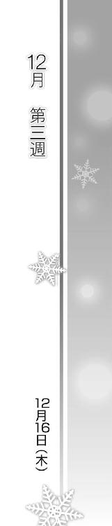
Piece of：春希
『今朝は何とか起きられた。武也と依緖は二人してイビキかいてるところを叩き起こした』
『まあ授業中は眠かったけどさ。ゼミの件とかで色々忙しいところなのに、ホントあの二人には困ったもんだよ』
『それから、メールの送信時間について』
『今日もこの時間に送っちゃったけど、明日からはもう少し早めにしようと思う』
『ひょっとしたら、雪菜が二時に合わせて起きたりしてるんじゃないか、なんて思ってさ』
『そんな感じ。じゃあまた明日』
Piece of：春希
金曜日、夕方。
授業後の教室からぞろぞろと学生たちが出て行く中、俺は席に座ったまま携帯を開いていた。
『起きられてよかったね。わたしは一限目なかったから、今日はゆっくりだったよ』
夜半、俺がメールした後すぐに返ってきた雪菜からのメールを、もう何度目かわからないくらい朝から読み返していて、そして今もまた、読んでいる。
『メールの時間の件、了解しました』
『実は春希くんの言う通り、一時五十分にアラームをセットしてました。春希くんからのメール、届いたらすぐ読みたかったから。しかも結局ずっと起きてたから意味なかったし』
『なんだか、中学のとき初めて携帯買ってもらったときのことを思い出しちゃう。夜、友達とのメールのやり取りが止まらなくて、明け方までずっと携帯触ってた。学校行っても、やっぱりずっと』
『あ、さすがに授業中には触らなかったよ？ 今は......講義中にも、見ちゃったりするけどね、あはは』
『それじゃ、あんまり長くなっても悪いし、この辺で。また明日ね。おやすみ』
『追伸』
『一つだけ質問です。一日にメール一通って、これはルールなのかな』
『二通とか送ったら、ダメなのかな......？』
「......ふう」
「二通とか送ったら、ダメなのかな～？」
「うわあああっ!?」
「なぁにこの初々しいメール。春希の彼女って中学生？ ふうん、そういう趣味だったんだ？」
「ひ、人聞きの悪いこと言うな！」
「ああそっか、愛があれば年の差なんて、ってやつね」
「だから違う！ 俺に彼女なんていない、だいたい他人のメールを覗き見すんな！ プライバシーの侵害だぞ！」
「その反応も中学生みたいだけど」
まったく、ああ言えばこう言う奴だ。
「ていうかここで何してんだよ？ お前この講義取ってなかっただろ」
「春希を迎えに来たに決まってんじゃん。あんた、今日はもうこれで上がりでしょ？ だから一緒に買い物行こうと思って」
「買い物？ なんで？」
「中学生の彼女とあたしに、春希がクリスマスプレゼントを買うため」おい。「なーんて冗談、晩ご飯の材料だってば。たまにはカレー以外のものも作ってよぅ。食べずじまいだったけど、こないだも結局カレーだったし」
「この間？ ......あっ」
そうか。流れた水曜日の勉強会の、埋め合わせをしなくちゃいけないんだった。
「忘れてたでしょ。そろそろ今週終わっちゃうよ」
「そうだったな。えっと──」
頭の中でスケジュールを組み立てる。
今日は開桜社でバイト。
土日はどっちかにグッディーズへ顔を出したい。杉浦が出るって言ってたし。
月曜日......は冬休み前最後の日で、レポート提出期限。
どうするかな。レポートはもうそろそろカタが付きそうなんだけど、万全を期すなら時間に余裕を持っておきたい。
「ちょっとぉ、まさかここまでヤらせておきながら、あたしを捨てるのー？」
「捨てるじゃなくて見捨てる、な。文学部なら正しい言葉遣いをしろ」こいつのことだから、周囲に聞こえるようにわざと言ったんだろうけど。「それじゃまあ、今日にするか」
開桜グラフはこの前入稿が済んだばかりだから、たぶん休んでも大丈夫なはずだ。何か仕事あってもメールで対応できるだろうし、あとで麻理さんに電話しておこう。
「そうこなくっちゃ。さ、さ、豪華な材料揃えて、あたしたちの愛の巣へ帰ろー！」
「愛はないしお前の巣でもない。それにこの前のカレーがまだ残ってる。コロッケはもうないから、コンビニで唐揚げでも買って、唐揚げカレーにするか」
「うう、なんか釈然としない......けど唐揚げもカレーも大好きなあたしは──」
「それはもういい。ほら、さっさと行くぞ」
「あ、ちょっとぉ」
結局食べ物なら何でもいいんじゃないか、こいつ。
◇
『レポートやってるんだね、お疲れ様』
『春希くんが冬休みギリギリまで頑張らなきゃいけないなんて、ずいぶん厳しいゼミなんだね』
『わたしの方は、ちょこちょこ課題は出るけど、そんなに時間かかるものじゃなくて。だから、あんまりゼミで拘束されることはないかな』
『けど、実は卒論が厳しいらしいんだよね。ゼミから毎年一人は卒業できない人が出るって。そうならないように頑張らなきゃ』
『そういえば、卒論のテーマとかってもう決めた？』
『わたしは教科書に沿ってやるタイプだから、自由度が高い勉強ってどこから考えていいのかわからず、ふわふわしてます』
『春希くんはそういうの得意だよね。自分で色々なものに興味を持って、発掘して、進んでいく。そういうところ、昔からずっと尊敬してます』
『それじゃ、引き続きレポート頑張ってください。あともう少しなんだよね、終わったらまたメールしてね。そしたらおめでとうってメールします』
『じゃあ、また......後で。メール、待ってるね』
「......おわったぁぁああああああ！」
唇を尖らせながらノートパソコンとにらめっこしていた和泉は、日付が変わるちょっと前にそう叫ぶと、ベッドに飛び乗ってゴロゴロ転げ回った。
「夜遅くに暴れんなっての。どれどれ......」
「あーもう無理。しばらく頭動かない～。っていうかなーんにもしたくない～」
「いいから静かにしてろ、近所迷惑だろうが」
ディスプレイに目をやり、早速冒頭からチェックを開始する。......っておい、まず表紙がないぞ。
「二十四時間寝る！ そんでいっぱいご飯食べてまた寝る！ それからそれから......うふふ、春希、一緒に寝よっか？」
「断る」
あ、誤字発見。ついでに見出しも強調させとくか。見栄え良くしとこう。
「もー、冷たいー！ 三週間もの間、同じ釜の飯食べて、一緒にやってきた戦友なのに！ せっせと愛を育んできたのにぃ！」
「何度も言ってるが愛はない。それに長い間ったって、同じ釜の飯を食べたのは三回だけだろ。そもそも俺が望んでこうなったわけじゃないし」
「何言ってんの、春希があたしの進級と幸せを望んだからじゃない」
「幸せは勝手に探せ。つーか、本当は自分で自主的に進級を目指すべきなんじゃないのかよ......っと」
参考文献リストも確認。よし、大丈夫だな。
「うん、ＯＫ。マジで終わったんじゃないか？」
「ホントっ!?」
「ああ。体裁は少しいじったけど、内容に関しては文句ない。俺が読んだ限りはよく書けてると思う。ま、あくまで俺の意見だけど」
「春希のオッケーが出たってことは、これで他の誰に見せても大丈夫ってことじゃん。っしゃー、やったねっ！」
「いや、俺はともかく進級を審査するのは教授なんだから、まだわかんねーぞ」
「最悪ダメでもいいよ。春希に認めてもらったんだからさ」
そう言って和泉が俺の目を覗き込む。
「ここまで一緒に頑張ってきた甲斐があったよ。ありがとね春希」
「和泉......」
普段適当なこいつだからこそ、その言葉にはちょっとクるものがあった。
色々あったし、何だかんだ大変だったけど、その分こうして感謝されるのは悪くない。
成り行きとはいえ、面倒見てやってよかったかな。
「ねーねー、お祝いに今から打ち上げしようよ。冷蔵庫にビールあるよね、六缶パックが丸々。あと魚肉ソーセージもあったし、チーズもあったしー」
「ウチの冷蔵庫の中身をいつの間に把握したんだお前」
確認してみると、確かにビールも魚肉ソーセージもチーズもあった。武也たちが残していったお菓子も合わせれば、ツマミとしてはまあ足りなくもないだろう。
「あ......」
ふと、時計を見て気付く。終電まで、あと一時間。
今から飲み始めて、それまでにこの女が帰ると思うか......？
「どったの？ 足りないなら、もうちょっとツマミ買い出しに行く？」
「いや......」
「よーし、今日はあたしも奮発する、割り勘だ！ 自分のお祝いに自分でお金出すなんて、あたしってホント偉いね～」
ついでにお酒も買い足そっかなー、などと言いながら出かける準備を始める和泉。もしかしてこいつ、泊まる気満々なんじゃ？
「さあ行こ行こ。ふんふーん♪ お酒、おっ酒～」
もしかしなくてもその気だよな、一回泊まってるわけだし。俺も、はっきりダメとも言ってないし。
「なあ、和泉」
「ほら早く早く。お腹が空きすぎて餓死しちゃう」
だったら俺は、今日こそ......はっきり言わないと。
「今日はもう帰れ。もうすぐ終電だ。飲んでたら間に合わなくなるぞ」
「え......ええ～っ!?」
そんなあ、と声を上げる和泉。
「なんでぇ、いいじゃんかー。明日土曜日だし、泊めてくれても」
「俺がよくないんだよ」
「この前は泊めてくれたじゃん」
「この前は終電出た後だったから、やむなくだ」
「疲れたんだよぅ、今日はもう一歩も歩けないー！」
「今まさに買い出しに行くつもりだったろうが」
「......むう」頰を膨らませながら、和泉が俺を見つめる。「なんでよ、どうして急にそんな冷たくなっちゃったの？」
「いや、それはだな......ええと」
左手が携帯に触れる。頭をよぎるのは、もちろん雪菜のこと。
「打ち上げなら、また後日にちゃんとやらないか？ レポート出した後にさ。月曜はゼミの打ち上げあるけど、それとは別で、何か美味いもの食いに行こうぜ。奢るよ」
けどさすがに雪菜のことを言うわけにはいかず、どうにか話を逸らそうとすることしかできない。
「............」
「ほら、もう遅いし、駅まで送ってやるから。ちゃんと帰らないと親御さん心配するぞ」
「......しないよ、心配なんて」
そのときふと、和泉の雰囲気が変わった気がした。その声色と共に。
「ウチ、父親はいない。母親とも、会えば喧嘩するだけだし」
「え？」
「だから、帰るよりどこか違うところにいる方が好きなの」
そう呟く彼女は、水曜日に続いてまた現れた、俺の知らない和泉のようで。
いや──それともこっちが本当の和泉なんだろうか？
「けど、春希が言うなら......帰るよ」
「お、おい待てって」
サッと荷物を纏め玄関から出て行く和泉を、慌てて追う。
「和泉っ」
「何？」
「ええとな......その」
言葉に詰まる。
何を言えばいいのかわからないけれど、ただ何となく、このまま帰してはいけないような気がした。
だからって、やっぱり泊まっていいだなんて言えるはずもなく。
「その、あのな......」
並んで歩きながら、言いあぐねていると、
「あたし──親が離婚したんだ。三年前、高三のときに」
代わりに和泉が口を開いた。
「こっちも小さな子供じゃなかったし、当人たちが決めたんなら仕方ないか、って思った。もともとそんなに仲のいい家族じゃなかったしさ」
静かに続ける和泉。
「ただまあ、父親がね、浮気してて。だからどっちかっていうと、母親に同情してたかな」
「............」
「けど、その母親と住むことになった後......父親に向けてた母親のエネルギーの行き場が、なくなったんだろうね。それが今度は全部あたしに向けられた」
和泉は、視線を真っ直ぐ前に固定したまま、言う。
「いちいちあたしの行動に文句つけるわ、八つ当たりはするわ。喧嘩になるのも当たり前でしょ。だから顔合わせないのが一番いいの。研究室に泊まるのもさ、帰りたくないから。いつも泊めてくれる誰かがいるわけじゃないし」
「和泉......」
「ま、家庭環境の辛さなんて、経験した当人じゃないとわかんないだろうけどね」
どこか諦めたようにため息をつく和泉。
その様子に、俺は。
「わかるよ」
「え？」
「俺も──父親いないから」
「春希、も？」
駅までの間──意識的に歩みを遅くして──俺はつい、自分の家族のことを和泉に話していた。和泉にそのつもりはなかっただろうが、俺だけ隠しておくのは何だか忍びない気がして。
妙なシンパシーを覚えてしまったのだ。かつてかずさに感じたのと同じように。
「ふうん......春希、付属出身なのに一人暮らししてるのは、そういうわけだったんだ」
「別に不幸だとも思ってないけどな。ただ自分がしたいようにしてるだけで」
「したいように、か。やっぱりあたしと一緒だね、春希って」
似た者同士なんだよ、と言って、和泉は少しだけ微笑みを見せた。
「あーあ。こんなこと、言う気なかったのになあ。......絶対引かれると思って、誰にも言ったことなかったのに」
「そっか。でも、俺は引いたりしない」
「うん、そうだね。色んな意味で、春希が春希でよかった」
小さく微笑みを浮かべる和泉。
「けど──」
「けど？」
「......ねえ」微笑みを、複雑な色に染めて。「泊めてくれない理由って、彼女のため？」
「え？」
その言葉に、一瞬息を呑んだ。
ポケットの中の携帯がまた頭をよぎる。
「あー、何でもない。今のは気にしないで。ここまででいいよ、じゃあね」
そう言って和泉は、見えてきた駅の改札に向かって歩いていった。
「あいつ......」
何も知らないくせに、雪菜のことなんて知りもしないはずなのに、時折どういうわけだか妙な鋭さを見せる和泉。その心の内は、やっぱりよくわからない。
それともあれが普通の人間なんだろうか。ただ俺と雪菜が歪なカタチの恋しかできないだけで。
「ふう」
自分でもよくわからないため息をつき、俺は来た道を引き返し始めた。
◇
『それじゃ、宣言通りお祝いします。春希くん、レポート完成＆進級おめでとー！』
『あ、孝宏に怒鳴られちゃった。さすがに夜中にクラッカー鳴らすのはまずかったみたい』
『用意してあったワインボトルも見られて、どれだけ飲む気だって呆れられちゃったし』
『それはおいといて、とにかく春希くん、心置きなく冬休みを迎えられてよかったね』
『休み中は、何か予定あるの？ 今まで通り、やっぱりアルバイト漬け？』
『クリスマスとか三が日とか、他人が休んでるときが稼ぎ時だっていつも言ってたもんね』
『今年も稼ぎ時、なのかな？ ......少しは休んだりしない？』
『別に他意はないんだけどね。ちょっと、聞いてみたかっただけ』
『現在、二杯目に入ってま～す』
『おめでとうメールありがとう』
『まだ後期試験前だから進級確定とは限らないけど、まあよほどのことがない限り大丈夫だと思う』
『色々大変なレポートだったけど、何とかなってよかったよ』
『それより雪菜、ちょっとピッチ早すぎないか？』
『ホントはグラス一杯でもそれなりに酔っちまうんだろ』
『土曜日とはいえ、無理すると明日起きられなくなるぞ？』
『平気平気。ちゃんと起きられるよ』
『それより、質問の答えがまだでーす』
『三杯目だよ～』
『だから早いって！』
『そんなこと聞いてどうするんだよ、やっぱもうかなり酔ってるな？』
『春希くんの冬休みの予定を聞くのって、そんなにおかしいかな？』
『わたしはただ、スキーとか、初詣とか、たまにはそういう明るいイベントをやらないと、老け込んじゃうんじゃないかなって心配なだけ～』
『他意はないんじゃなかったのか？』
『細かいこと気にしてめ、やっぱり老け込むんじゃなかな、』
『雪菜、メール打ち間違えてきてるぞ。いい加減寝ろ』
『大丈夫、平気たよ』
『いいから寝ろって。明日に差し支えるぞ』
『だって土曜日なをだし あ、でも朝からお母さんてお買い物なのに』
『ほら、なら早く寝ないと』
『平気へい みやわて起きるるられ』
『大丈夫じゃなさそうだぞ。あのさ、よかったらなんだけど、モーニングコール、しようか？』
『お願いします！』
◇
「もしも──」
「おっ、おはよう！」
「......なあ雪菜、ホントに今まで寝てたか？」
そんなわけで、一週間ぶりに聞いた雪菜の声は、懐かしくて、嬉しくて......ちょっとだけ、辛い感情を呼び起こさせた。
Piece of：春希
『そっか、グッディーズのバイト、再開したんだ』
『けど、出版社のバイトっていうのも続けてるんだよね？ 前のメールには、ただの雑用係だって書いてあったけど、出版社ってすごく忙しいイメージがあるなあ。ゼミも大変そうだし、ちょっと心配です。身体壊さないようにしてね』
『って言っても、頼まれたら無理してでもやっちゃうのが春希くんだよね』
『実は一年ぐらい前、グッディーズで働いてる春希くんを偶然見かけたことがあったの』
『何ていうか、厳しいけど皆にすごく頼られてる、っていうのが、ちょっと見ただけですぐわかったよ』
『でね、見てて嬉しかった。もうわたしには見せてくれない春希くんが、そこにいたから』
『あ、ごめんね、変なこと言って。本題なんだけど、冬休みの間もグッディーズでバイトするのかな？』
『あのね、もしよかったら、迷惑じゃなかったらなんだけど』
『ううん、何でもない。それじゃ』
「......ふう」
携帯を閉じ、そっとため息。
何でもないんなら、それを文章にした上、残したままにするのは何故なんだろうな。
ついでに、俺が見たら胸が痛むようなことを残しておくのも、なんでだろう。
雪菜のメールに、少しずつ本音が混じり始めていた。俺にしていた遠慮が、取れかかってきているのかもしれない。
だとしたら、それっていい兆候なんじゃないだろうか。
何も言えずに溜め込んで、それが爆発しないよう必死に抑え込んで。永遠にそれを繰り返してきた雪菜は、もう疲れ果てていたはずだ。
こうして少しずつガス抜きをしていければ、ゆっくりとでも、心の状況を変えていけるかもしれない。
メールという手段は、どうやらそれに一役買ってくれそうだ。
「よしっ」
思考を前に向けたまま、気合いを入れる。
とりあえずは、目の前のことを頑張るとしよう。
「おはようございまーす」
「おはようござ......あっ、先輩」
「おはよう杉浦。この間は、お節介ありがとな」
俺を励ましてくれた、後輩と一緒に。
◇
『今バイト終わった。これから帰るとこ』
『他のバイトや大学との両立はできてるから大丈夫、心配いらない』
『それに、このバイトは短期のつもりだし、今年いっぱいで終わるかも』
『だから』
『ええと、予め言っとくけど、別に邪魔だとか思ってるわけじゃ全然ない』
『ただ、無駄足を踏むかもしれないとか、来ても何にも面白くないとか、そういう別に大したことない理由で言うんだけど』
『俺の働いてる間は絶対に店に来ないように』
「......はあ」
送信してからため息をついた。
怒るかなあ。
でも、今来られたら困るんだよなあ。
実は俺と杉浦が妙に仲がいいという勘違いが他のスタッフの間で広がり、その誤解を解くために、俺にはちゃんとした彼女がいるのだと皆の前で宣言するハメになってしまい。
だからもし雪菜が店に来て、俺がうっかり反応してしまえば、誰かが雪菜にあれこれ質問攻めしそうなのだ。今の俺たちの関係なんて、何とも言えない間柄なのに。
「うおっ、と」
返信は即座に来た。
『行きたいなんて言ってないよ！』
......うん、怒ってるな。
結局この後、雪菜を宥めるのに何通もメールを送ることになってしまったけれど──悪い気はしなかった。
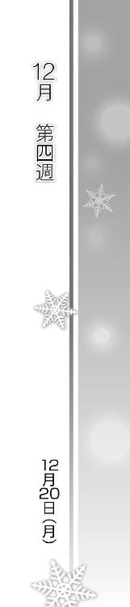
Piece of：雪菜
『レポート提出完了』
『最終日だし、今日はこれからゼミの打ち上げ。晴れて無事に冬休みを迎えられそうだ。まあ先輩たちは卒論やら何やらで休みも何もないだろうけど』
『年末年始はやっぱりバイトで忙しくなりそう。まあ、どこも人手足りない時期だから仕方ないかな』
『これじゃ俺も休みでも何でもないな。クリスマスも正月もなさそう』
『けど、就活が本格化してくる前に少しでも貯金しとかないと』
『雪菜は冬休み、どっか行くのか？ 沖縄とか、むしろ北海道でグルメツアーとか？』
『海外って手もあるか。でも雪菜、意外と出不精だからなあ、あはは』
「......はあ」
夕日に照らされるキャンパスを歩いていた雪菜は、携帯を閉じ、そっとため息をついた。
クリスマスも正月もない。
彼のその一言が予防線だと気付かないわけもなく。
「そんな完璧にガードしなくてもいいのにな......」
少しずつ、けれど懸命に、勇気を出して近付いてみようとしているのに、彼は絶妙な距離を保ち続けようとする。
「せっかくの......冬休みなのになあ」
唇をとがらせ、拗ねたように一人呟く。
知らず知らず、ゆっくりとではあるが昔の自分を取り戻しつつあることに、雪菜自身はまだ気付いていなかった。
はあああ、と白いため息をつきながら帰ろうとした、そのとき。
「あれ？」
たまたま学食の近くを歩いていた雪菜。その入り口前に立っている、どことなく見覚えのある人物の姿が、ふと目に入った。
数日ぶりに見かけたその顔は。
「......くそう、早く来すぎたか......練習切り上げるのちょっと早かったかな」
「あ、あの」
一人で何か呟いている彼女に近付き、声をかける。
「どうせなら四時半待ち合わせにしとけばよかった......まああいつのことだから時間より前には......もうぼちぼち来るはず......」
「あのー、昌子さん」
「お腹空いたな、くそう......今日は思いっきり食ってやる」
「あのう」
「え？ ......あ!?」
ようやく雪菜に気付いた彼女が、ぎょっとしたように目を見開く。
「昌子さん、ですよね？ 髪型違うからわからなかった。わたしです、この間のパーティでお会いした、小木曽雪菜」
「しょう、こ......？」
「あ、あれ？ 長瀬昌子さんじゃ、ないですか？ ご、ごめんなさい、やっぱり人違い......」
「──っ！ あ、そうそう、あたしが長瀬昌子！ あたしってばそんな名前だったわー」
「よかったあ、恥ずかしい勘違いしちゃったかと」
「そっ、それより、どうしたの今日は？」
「どうって、今から帰るところ。授業も全部終わったし、もう冬休みだね」
「そ、そうなんだ、それわよかった......そうよね、冬休みよね、よかったよかった、はは......」
「あんまりよくもないんだけどね。それより、昌子さんこそここで何を......ってあれ、すごい汗だよ？」
この寒いのにどうしたのだろう。体調が優れないのかもしれない。
「マズイ......鉢合わせはさすがに」
「え、何？ 大丈夫？ 医務室まで付き添おうか？」
「だ、だいじょぶ、全然平気！ それより一刻も早くここから離れ──もとい、再会を祝ってお茶でも飲みにいかないっ？」
「うん、わたしはいいけど、昌子さんホントに平気？」
「ホントホント、さー行こう！ 大学からはちょーっと離れたトコの喫茶店なんかがいいな、うんっ！」
◇
「お待たせしました、マンゴーパフェとストロベリーパフェでございます。ごゆっくりどうぞ」
やってきた喫茶店で、二人の前に置かれたのは大きなパフェだった。
「さー食べよ食べよ、お腹空いたー」
「昌子さんに釣られて頼んじゃったけど、夕飯前にパフェなんていいのかなあ」
「気にしない気にしない。忘年会ってことで、パーッとね」
「忘年会にパフェっていうのも......でもまあ、いっか」
「そうそう。はい、それじゃ今年もお疲れ様でしたー！ かんぱーい！」
「わわ、こぼれちゃうよ」
ゴッ、とパフェの容器同士を打ち鳴らす昌子に苦笑しながら、雪菜もスプーンを手に取った。
外気よりも遙かに冷たいその甘さが、喉を滑り落ちていく。ふう、と静かなため息が自然と零れた。
「んー、おいし。こうやって冬に暖かい部屋の中でパフェ食べるのって格別ぅ」
「あ、それはあるよね。コタツに入ってアイスとか」
「だよねえ。やっぱ冬でも冷凍庫にアイス入ってないと」
「ね。だけどウチなんか、弟に食べられちゃったりするんだよ？ いざ食べようと思ったらなかった、なんてときはすごくショック」
笑いながら言う雪菜を、昌子がじっと見つめる。
「そういうとき、わたし大人げないくらい怒っちゃったりするんだ。ホント子供だよね......うーん、やっぱりおいしい」
「............」
「暖房で身体があったまったところで食べるのが......昌子さん？」
じっと向けられている視線に気付き、首を傾げる雪菜。
「どうかした？ あ、わたしクリーム付いてる？」
「ううん。ただ、この前より明るくなったかなって」
「え......」
「何かいいことあった？ 彼と上手くいってるとか」
昌子にあっという間に見抜かれたことは驚きだった。それほどわかりやすく顔に出ていたのだろうか。
「別に......普通だよ。前のときのわたし、そんなに沈んで見えてた？」
「隠さなくたっていいじゃない。いい感じなんでしょ、そーでしょ？」
「だからぁ......もうっ」
「やっぱりそうなんだぁ」
「違うよ、昌子さんが期待してるようなことなんて何もないってば。ただ、ちょっと......」
わざわざ口にするようなことではなかった。
それでも結局言ってしまったのは、やはり他人に話したかったのかもしれない。事情は何も知らない、この人に。
「ちょっと？」
「喧嘩して......それで仲直りが、できただけ」
「なあんだぁ。もっと一気に何か進展したのかと思ったのに、それぐらいか」
「そう言ったじゃない。......だけど、それでいいんだ」
その程度のことすら、ずっとなかったのだ。この三年間、ずっと。
「わたしね、今度こそ変わっていけるかもしれない。どんなに少しずつでもいい、前に進めるかも、しれないんだ」
「............」
「あ、ごめんね、仮の話だったよね。なのに変なこと言って」
ごまかすようにパフェを口に運ぶ。
けれど昌子は、わずかに残った自分のパフェにもはや手を付けようともせず、じっと雪菜を見据えたままで。
「......ほんっと参考になるよ、あんたたち」
「え？ 何？」
不明瞭な呟きに、訊き返したのだけれど──
「ね、雪菜。何年も一人の男を想い続けるのって、どんな感じ？」
雪菜の耳に届いたのは、そんな昌子の台詞。
一瞬、息を呑んだ。
何も事情を知らない昌子が、何を思って、どういう意味を込めてそう尋ねるのか。
「......何の話？」
「何ってわけじゃないんだけど。雪菜の『仮の話』を聞いてて、何となく思っただけ」
なんて鋭い──いや、雪菜がわかりやすいだけなのか。
「っ......」
問われて、思う。
どんな感じ？
この三年間ずっと、どんな気持ちだったか？
決まっている。辛くて、苦しくて、悲しくて──でも、離れられなくて。
「ごめん、心当たりなかったらいいよ。ちょっと訊いてみただけだし」
「うん......」
しばらく無言のまま、雪菜はそっとパフェを食べ進め。
「んじゃ、そろそろ帰ろっか」
適当なところで昌子がそう切り出す。
「誘ったのあたしだし、ここは奢るよ」
「......そうするしか」
「え？」
「そうするしかさ、ないんだ」
ぽつりと、呟いていた。
「忘れようとしたこともあったよ。でも無理だった。だからただじっと......いつか振り向いてくれるかもしれないって思いながら、過ごしてるだけ」
「雪菜......」
「冬休み、彼はずっとバイトで忙しいんだって。わたしを避けるためだってわかってるけど、それでもいいの。いつでも都合のいいときに、心が求めてくれたときに、わたしのことを考えて欲しい。あわよくば、会って欲しい。それだけなの」
それを伝えることさえできない三年間だった。
「だけどときどき、すごく構って欲しくなる。わたしだけのことで、頭をいっぱいにして欲しくなる。他の誰かじゃなくて、わたしだけをずっと見てて欲しくなる。そんなの自分勝手だって、よくわかってるけど」
「............」
「いつか、それがごく普通のことになってくれたらいいなって、思うんだ......」
呟きながら、どこか遠くを見つめる。
そこにある未来で自分は、自分たちは笑っているのかどうか。
どれだけ夢想してみたとしても、それを思い描くことだけは、できなかった。

「......はい、もしもし？」
「ああうん、まあぼちぼちってトコかな。はいはい、わかってるって」
「男の家にちょっと泊まったぐらいであれこれ言われたくない」
「心配しなくても平気。あとちょっと、もう少しなんだ」
「やっと......最高の相手見つけたんだからさ。今は離れられないよ」
「そんなわけで、まだ好きにさせてもらうから。はいはい、それじゃ」
「ったく。だけど......実際、どうしたもんかなあ」
Piece of：春希
『おかけになった電話は 電波の届かない場所にあるか......』
「くそ......何してんだあいつ」
現在、夕方五時半。
打ち上げの場所がわからないと言うので、四時四十五分に学食前で待ち合わせたのだが、約束の時間から三十分経っても和泉は現れなかった。
「はい、それじゃあ飲み物は行き渡りましたか～」
居酒屋の少々狭苦しい座敷席で、幹事がビールジョッキを手に立ち上がる。
和泉が適当なのは今に始まったことじゃない。今日も、俺が知らないうちに教授にレポートを出したらしく、『打ち上げには出る』というメールだけよこして、そのままゼミにも顔を出さなかった。
「............」
適当なのはいつものこと。でもこうして連絡も付かないとなると、ふと思ってしまう。水曜に見た別人のようなあの和泉と、何か関係あるんだろうかって。
「では乾杯の前に、荻島先生の方から一言お願いします」
考えすぎ、だろうけど。
結局そのまま打ち上げは始まり──俺の携帯が鳴ったのは、皆にいい感じに酒が回った、八時過ぎのこと。
『もしもし、春希？』
「おい和泉っ！ お前、携帯も切って何してたんだよ、待ち合わせにも来ないしっ」
『あー、ごめん。ちょっと思わぬアクシデントで......特訓を』
「はぁ？ わけわからんぞ」
『だろうねえ......』
電話口から聞こえてくるのは、何だか熱にでも浮かされているような、妙にぼーっとした和泉の声。
「大丈夫かお前？ 風邪でも引いてんのか？」
『ううん、そんなことないけど。......そっち、まだ打ち上げやってんの？』
「店は九時半までって話だからな。どうする、来るか？ 今来ればまだそれなりに飲めるだろ。二次会とかも行くだろうし」
『そっか。ん～......どうしよっかな』
「何だよ、来られないのか？」
『そういうわけじゃないんだけど、さ......』
奥歯に何か挟まったように、不明瞭にしゃべる和泉。その様子は、やっぱりどこか変な気がした。いつもなら良いにしろ悪いにしろ、ポンポン決断するはずなのに。
普段なら、こんなふうに会話の流れを停滞させたりしないのに。
『そっち、皆いるんだよね？ 春希も二次会行くの？』
「そりゃいるだろ、ゼミの打ち上げなんだし。二次会もまあ、今日ぐらいは付き合ってもいいかな」
ふうん、と呟いた後、和泉はしばらく黙っていた。
そしてやがて、ぽつりと。
『......ねえ』
「何だ？」
『抜けて来ない？ 今から......あたしたちだけで二次会やんない？』
「は？ 何だよいきなり」
『ほら、二人だけで打ち上げやろうって言ってたじゃん』
「いや、それは言ったけど......今からはさすがに急だろ」
『今がいいの。今すぐ二人きりで、会いたいなあ』
「っ......」
別に、動揺するような台詞じゃない。
相手はこの一ヶ月、何回も俺の部屋に上がり込んできた和泉だ。
付き合ってもないのに、何時間も何十時間も一緒に、二人きりで過ごしていた奴だ。
なのにどうして今さら、俺がこいつにドキッとする必要があるんだ？ 異性を感じず付き合えるのが、和泉って人間だったはずなのに──
「わかった。じゃあ今から三十分後。御宿の東口で」
『......いいの？』
「自分で誘っといて何だよ。ま、奢るって約束したもんな、この前」
そうだ。そんなことを気にする必要なんてない。
俺が気になるのは、和泉の様子がおかしいってことだけ。
だから......ちょっと会ってやらないと。
レポート見てやった、延長線で。
「けど今度はすっぽかすなよ。三十分も待ったんだからな、さっき」
『さっきのは......ううん、わかった。絶対行くから』
そうして俺は、電話を切る。
「............」
脳裏にはなぜか、雪菜の顔が浮かんでいた。
◇
「それじゃ、かんぱーい！」
グラス同士が甲高い音を立てる。
「はいお疲れお疲れ！ んぐんぐ......ぷっはー！」
「いきなり店の雰囲気ぶち壊すなよ、お前」
和泉と入ったのは、さっきまでの居酒屋とはガラリと違う、落ち着いたショットバー。けど和泉のテンションは完全に居酒屋のそれだった。
「バーテンさん、おかわりおかわりー。春希もガンガンいきなよ、どうせあんたの奢りなんだし」
「俺はついさっきまで飲んでたんだっつーの」
財布の心配をしつつも、和泉のこの調子に俺はほっと胸をなで下ろしていた。
さっきの電話の、そして水曜日にも見た、俺の知らない和泉がいたらどう対応しようかと悩んでいたのだ。でも今目の前にいるのは、やっぱりいつものふざけた女だった。
これなら何も気を遣わなくていい、普段通りの酒盛りだ。
「悪いねー、無理やり引っ張り出して」
「そう思うなら割り勘にしようとは思ってくれないのか？」
「もちろん思わな～い！ あははっ」
ったく、とため息をつきながら、目の前のグラスをそっと飲み干した。
「......ふう」
「はい、春希もおかわりおかわりー！」
「だから俺はさっきまで飲んでたの。もうちょっとゆっくりとだな......」
そう言いながらも、やたらペースの速い和泉に流され、そのまましばらくお互い杯を重ね続け──
「......なあ、和泉」
そうして一時間を超えた辺りでお互い、いい加減グラスに手を付けなくなっていた。
「ん～......？」
さっきからカクテルのチェリーをずっと弄っているだけの和泉が、ちらりと俺の方を向く。
「お前ってさ、高校時代、どんな奴だった？」
「......何、急に。どうしたの」
「別に急でもないだろ。今までも何回か訊いてたと思うけど」
知り合ってからのこの一年、和泉は自分の過去をほとんど語らなかった。尋ねても、その度にはぐらかされてばかりだったのだ。自分はこっちのことを聞きたがるくせに。
でも水曜日に和泉の家庭のことを知り、そうなると次に気になるのは、どんな高校生活を送っていたか、ってこと。ちゃらんぽらんのコイツがどうやって峰城大に合格したのかも不思議だったし。
「確か都立高出身なんだっけ？ どの辺？」
「......東有川？」
「ああ、千葉に近い方か」
ていうか自分のことなのになんで自信なさげなんだコイツ。
「そんなに聞きたいなら話してもいいけどさ、別につまんないよ」
「お前のことをつまんないと思ってたら、訊いたりしない」
「え......」
「あ、いや、そういう意味じゃなくて、興味があるって言うか。あ、それもそういう意味じゃなくて......ええと、すまん」
どうも適切な物言いができず、思わず謝ってしまう。酔ってんのかな、俺。
「............」
ふいに、和泉の右手がカウンターに置かれた俺の左手に重ねられる。
そのまま、指を摘んだり、爪で軽く引っ搔いてきたり。
「ちょっ、お、おい？」
「......ふっつーだったよ」
「へ？」
「どこにでもいる女子高生。むしろ目立たない方だったかな。同学年の生徒にもあんまり覚えられてなかったりね」
「そ、そうか」
俺の質問に答えながら、和泉はそのまま指を這わせ始める。
いつもだったら適当に振り払えるのに、その触り方はどこか優しく、どこか踏み込むような動きで、探るように俺の肌を撫でていく。
「べ、勉強はどうだったんだ？ ウチに入れたってことは、高校時代はそこそこ出来たんだよな？」
繊細で柔らかなその感覚から少しでも意識を逸らすため、俺も口を開く。
「んー、まあ峰城受かったのは奇跡だったかな。ちょうど親の離婚時期と重なってたし」
「......そ、そっか」
「今、話振ってちょっと後悔したでしょ。別に気にしなくていいのに」
バレてた。
「ええと、部活とかはどうだ？ 何かやってた？」
「部活、かあ。まあそれなりにね。表彰されたこともあるよ──個人でじゃないけど」
「へえ、意外だな。何部？」
「なーんだ？」
ちろりと舌を出す和泉。思わずそこに妖艶さのようなものを感じてしまった自分が恨めしい。
恥ずかしさを隠すように、適当に当てずっぽうで答えてみる。
「な、なんだよ、料理部か？」
「ぶぶーっ。舌とか喉をね、鍛えるの」
こうやって、と突き出した舌をわざとらしく動かしてみせる和泉。こいつ絶対からかってるだろ。
「体力も気力も使うよ。時には喉の奥まで苦しくなっちゃったりするよ。わかる？ よね？」
艶めかしい息遣いでそう言う和泉。鬱陶しいからかい方しやがって......こうなったらビシッと当ててやる。
舌や喉。つまり口ってことだよな。口を使うもの......声？
「わかったっ、発声練習！ 演劇部だろ！」
自信満々で言った俺に、和泉は一瞬パチパチと目をしばたかせた後。
「............普通、先に合唱部を思い浮かべないかなあ」
「あ、そうか」言われてみれば。「ふうん、合唱か。やっぱなんか意外」
「大学入ってからはやめちゃったからね。割と燃え尽きた感じ。そういう春希は？」
「俺は......」
頭を、あの日のライブがよぎる。
あの日の、三人での時間が。
「......別に何もしてなかったよ。前にも言ったけど、勉強ばっかでイベントとか興味なかったし」
「学園祭とかは？ ほら、ミスコンって付属でもやってるんでしょ？ 春希もさすがに女のコには興味あるでしょお」
「いや、学園祭も別に......クラスの出し物とか手伝っただけで」
隣に座る和泉を正面から見られなくて、ただじっと前を向く。
「えー、冷めてるなあ。かわいいコがいっぱいエントリーするんだし、気になるっしょ、普通。同学年のコが優勝したりとかなかったの？」
「......あったと思うけど、よく知らないコだったし」
「へえ。その人、峰城にいたりする？」
「さあ。それも知らない」
「ふうん......ホント冷めてるねえ」
あ、と思い出したように和泉が言う。
「そういえば、部屋にギターあったじゃん。やめたって言ってたけど、あれはいつ頃までやってたの？」
「......忘れた」
色々打ち明け合っても、やはり言えないものは言えない。
「──言えないんだ？」
そんな俺の心を見透かしたのか、和泉が呟く。一歩踏み込んでくるように。
「いや......別に」
「............」
「............」
いつの間にか、和泉の身体が俺の脇腹にぴたりと寄せられていた。
湿っぽい吐息が耳にかかる。瞳はきっと俺の横顔を見つめている。
「さっきから、こっち見ないね」
「っ......」
いつの間にか俺の横に、またあの和泉が出現していた。
「そっか。辛いことが、あったんだね」
ささやくような言葉。
「大変だったんだね、春希」
まるで心の奥底まで見透かされているような台詞に、何も答えられない。
しばらく黙っていると、
「どしたの？ すっかり酔っちゃった？」
と和泉が呟く。
こんなコイツに、一体どう反応すればいいのかわからなくて。
「かも、な。だから......そろそろ帰るか」
そう言って逃げるのが精一杯だった。
「ん。じゃあマンションまで送ってってあげよっかな」
「......来なくていい。そのまま泊まってく気だろーが」
「あはは。バレた？」
「やっぱりかよ、ったく......」
そんなふうに、どうにかこの雰囲気から逃げ出した。
いつの間にか握り合っていた手の感触を、無視したままで。
◇
「う～、寒いねえ」
和泉を見送るために上がった御宿駅のホームを、さあっと冷気が通り抜ける。
「春希さ、冬休みはどうするの？」
「またか......あ、いや、こっちの話。まあ、ずっとバイト漬けかな」
「ふうん。そっか」
和泉のその一言は、何でもない呟きのようでもあり、何がしかの他意が込められていそうでもあった。そう感じるのは、やはり誰かさんが同じような質問の仕方をしてきたからだろう。
「............」
やっぱりおかしい。水曜日からずっと感じていたこと。俺と和泉の関係は、こんなんじゃなかったはずなのに。
なんだか和泉と上手に付き合えなくなりかけてる。
原因はたぶんわかっている。
こいつが、俺の前で『女』になり始めているのだ。
俺の方が勝手にそう感じているだけかもしれないけど、とにかく関係が変わりつつある。その理由は......わからないけど。
でもそれは絶対にしてはいけない選択。俺はこれ以上、誰かを裏切ったり、深く傷付けたりしたくない。そんなのは許されない。
だから、言わなくちゃ。
こんな別れ際に卑怯かもしれないけど、俺の恥ずかしい勘違いかもしれないけど、それでも後で後悔しないために、今言っておかなくちゃ。
「なあ和泉、俺......」
「──こないだの彼女と、上手くやってる？」
「え？」
「やってるならいいけど、だったら冬休みをバイト漬けにはしないかな？」
『間もなく 普通列車 有川行きが参ります......』
「......ね。あたしの方から、会ってとか遊んでとか言ったりはしないけどさ」
和泉が、真っ直ぐ俺の目を覗き込む。
「暇で暇で仕方なかったら、遠慮なく呼び出してくれていいよ。いつでも都合のいいときに、心が求めてくれたときに、あたしのことを考えて。いつでも、春希のお望みのあたしがお相手するから。親友でも悪友でも──────そのコの代わりでも」
「っ......！」
「じゃね」
そう言い残し、滑り込んできた電車にするりと乗り込むと、和泉は小さく手を振りながら姿を消していった。
「あいつ......」
何とも言えない気持ちが、全身を支配していた。
和泉がどういう想いを抱いて、どうしてこのタイミングであんなことを言ってきたのか。
何もわからないけど......俺は。
「............」
しばらく佇んだ後、携帯を取り出し和泉にメールしようとしたが、やっぱりやめた。直接話をした方がいいと思ったし、それに──メールを送りたい相手は、別にいるから。
『打ち上げ終わった。さすがに飲み過ぎたよ』
悪いな、和泉。
『明日のバイトは夕方からだし、帰ったら思いっきり眠るつもり』
『酔ってるからこの辺にしとく。じゃ、また明日。おやすみ』
悪いとは思う。思うけど俺は──
俺はもう、雪菜を裏切りたくない。
Piece of：春希
「北原、ちょっといい？」
火曜日の夕方、編集部に行くと、深刻そうな顔で麻理さんが待ち構えていた。
「あ、おはようございます麻理さん。ていうかあれ、他の皆さんは──」
「実は緊急事態が発生したの。北原も荷物片付けたら、第三会議室まで来て。皆もう集まってるから」
「え!? は、はいっ」
先に行ってる、と言い残して去っていく麻理さん。緊急事態って......何だ？ 単純な印刷ミスとかじゃなさそうだし、まさかグラフの編集部員や作家の先生に何かあったとか？
鞄を自分のデスクに置いてから、慌てて第三会議室へ急ぐ。
「失礼します......」
ノックしてドアを開けたところで、パン！ パン！ とクラッカーの音が響いた。
「うわあっ!?」
驚く俺の叫び声と同時に、「おめでと～！」という声が一斉にかけられる。
我に返ると、麻理さんを始め、グラフの皆が笑ってそこに立っていた。
「......えっと、これは一体何の騒ぎですか」
「何って、お前が主役の騒ぎだよ。ほら、こっち」
麻理さんに引っ張られた俺が目にしたのは、お菓子やジュースが置かれた机の真ん中に堂々と存在していた、一冊の雑誌。そこでようやく皆のやろうとしていることが何なのか気付く。
「アンサンブル......」
「二月号、今日発売だよ。初掲載おめでとー。記事ちゃんと読んだよ、面白かったー」
「何か昔のドラマみたいだよな。不良の女のコが周囲の理解を得て、才能を開花させていく、みたいなさ」
「なんつーか、色んな意味で取材対象を贔屓してる記事だけど、初掲載って考えたら充分合格点の出来映えだよ。俺のときなんかもうグダグダでさあ」
鈴木さんを始め、皆が祝福の言葉をかけてくれる。
しかし俺はそのことに感謝している場合じゃなかった。
「マジですか、この表紙......」
それは──そこに載せられた写真は、俺が知ってる元クラスメイトの、三年後の姿だった。
「新人ピアニストとしては破格の扱いだけどね。でもいいんじゃない？ 見栄えはダントツでしょ、これ」
麻理さんの言うとおりだった。
前に開桜グラフに載ったものより、ずっと格好いい。写真の大きさも、構図も。
「ほんっと、あいつは......」
ああ。相変わらず目付きがキツいな。相変わらず髪が綺麗だな。肌が白いなあ。
ホントに格好いいぜ、かずさ......。
「それより、今はお前のことだ。おめでとう北原、今を以てお前の編集者人生は華々しいスタートを切ったぞ！」
「麻理さん麻理さん、その言い方って古くないですか？」
「す、鈴木とそんなに歳違わないぞ私！」
「けど古いっちゃ古いっすよね。お菓子も徳用アルファベ○トチョコとかだし、もの悲しくなるというか」
「ど、どうしてだ、お得じゃないか......歳関係ないだろそれは」
「そもそも今どきサプライズパーティってのも、ちょっと懐かしい感じだよなあ」
「お、お前らなあ！ だからお前らと大して歳違わないって言ってるだろ！」
......この人、こんなに歳のこと気にしてたのか。いくつなのか知らないけど、全然気にする必要ない見た目なのに。まあ、そんなこと言ったら余計怒りそうだから言わないけど。
「はいはい怒鳴らない、お祝いの席なんですから。北原くんに呆れられちゃいますよ」
「発案者は私なのに......まったく、どうしてくれる北原。いらん恥をかいたじゃないか」
「え、俺のせいですか......？」
「北原くん、とりあえず笑ってあげて。麻理さん、きっと北原くんが喜ぶと思って、にやにやしながらクラッカーとかお菓子買って来たに違いないだろーから」
鈴木さんがそっと耳打ちしてくれる。その姿を想像すると、こっちがにやけてしまいそうだった。ホント、麻理さんって人は......。
「あの、ありがとうございます、麻理さん。俺のためにわざわざ」
「わざわざこんなくだらん時間を取らせて悪かったな。ふん」
「ほらほら、拗ねてないで乾杯しましょ。はいジュース、北原くんも」
「あ、すいません」
「まったくどいつもこいつも......」
忙しい合間を縫って、皆が俺のために祝ってくれる。
「それじゃ、かんぱーい！」
その気持ちが、本当に嬉しくて、ありがたくて。
そしてちょっぴり、いたたまれなくもあった。
「けど、ホント綺麗だよねこのコ。向こうのコスメっていいのかなあ」
紙コップに口を付けながら、アンサンブルの表紙をまじまじと見て鈴木さんが呟く。いや、そいつ昔からほぼノーメイクですよ、とはさすがに言えないな。
「こりゃマジで売れるかもな。表紙からしてインパクト大だよ。クラシックファン以外も手に取りそうだ」
「同級生なんだろ、俺に紹介してくれよ北原」
「いいですよ、ウィーンまで連れてってもらえるんなら」
まさか他人がこんなカタチでかずさのことを話すなんて。俺も、こんなふうに話ができる日が来るなんて。
「ねえねえ北原くん、彼女が使ってる洗顔料とか訊けないかな？」
「え、いやそれは......」
ずっと無理だと思ってたけど、この数週間で少しずつ前向きになれてきているのだろうか。
あいつの存在を、思い出に変えていけているのだろうか。
「そうそう。編集長から何冊か見本もらってきた。ほら、まず一冊は北原の分だ」
「ありがとうございます」
アンサンブルは隔月刊だし、質実剛健っていうイメージコンセプトだから、分厚くて重い。
けど、俺にとっては別の意味で重かった。
「それで、あと何冊ぐらい欲しい？」
「え？」
「あげたい人、いるだろ？ 家族とか友達とか、あと......まあうん、色々さ」
「色々何ですか、麻理さーん？」
「う、うるさい鈴木」
何やら鈴木さんに突っ込まれながら言う麻理さん。
「ええと。そうたくさんはもらって来られなかったけど、少しぐらいなら余分にあげられるわよ」
あげたい、人？
家族とか友達とか......あとは、誰？
「............」
俺の初仕事。
あくまでバイトだし、言われたことをやっただけではあるけれど。
それでも、記事を書き、それが明確にカタチになった、記念すべき第一歩。
家族は論外。へえ、と興味なさげに言われるのがオチだ。
友達は、きっと喜んでくれる。押しかけてきて、朝まで騒いでくれる。......記事の内容がこれじゃなかったら、だけど。だからやっぱり渡せない。
あと......『彼女』は。
彼女なら絶対に喜んでくれる。誰の記事なのかを知っても、喜んでくれるはずだ。
俺が、少し前までの俺だったら、それがわかっていても渡せなかったに違いない。関係性をぶち壊すことも、修復することも、しようとはしなかっただろう。足踏みしたまま、何もできないままに。
しかし今の俺は、わずかながら変わってきた。
三年もかけて、遅すぎるぐらいだけれど、やっと変われるようになってきた。
それを──もう止めたくはない。
だから。
「北原？」
「あ、すみません。......じゃあ、あと一冊だけ」
届けよう。彼女に。
冬馬かずさの、親友に。
◇
『今日、店に並んでた。記念に自分で一冊買った』
『編集部の皆にも祝ってもらった。会議室で、ささやかにパーティしてもらった』
『誌名と発売日、教えてなかったのは謝る』
『俺から直接渡したかったんだ。雪菜に先に手に入れて欲しくなかったんだ』
『そんなわけで、もしよかったら、俺の初めての記事が載った本、受け取って欲しい』
『三分でいい。明日、時間取れないかな？ 家まで渡しにいくよ』
『返事、待ってる』
勢いのままに書いたメール。送信ボタンを、押した。
ドキドキはするけど、後悔はない。
一緒に喜んで欲しい。よかったね、と俺の目の前で笑って欲しい。
記事を読んで、雪菜は傷付くかもしれない。また辛い気持ちを抱えてしまうかもしれない。
けどそれも含めて、俺の気持ちを伝えたかった。
だから......会いたい。
三年かけて、ようやくそう思えるようになった。
「あ......」
送った後、しばらくぼんやりしていた俺の元へ、返信が来る。
恐る恐る、メールを開いた。
『ごめんなさい、明日はちょっと、家族で出かける用事があるの』
その文面に、小さくため息をついた、そのとき。
『二十四日じゃ......ダメ？』
Piece of：春希
「......ふう」
水曜日。
何だか知らないけど、杉浦にどうしてもバイトに来いと言われてやってきたグッディーズ。
その休憩時間、控え室で俺は、雪菜からのメールを読み返していた。
『ごめんね春希くん。なんだか気を遣わせちゃって』
『二十四日っていうことに、大した意味はないの。ただ、そこしか空いてなくって』
『うち、二十五日にクリスマスパーティやるんだ。朝からお母さんがチキン焼いて、相変わらずシャンパン風ジュースで乾杯して』
『孝宏が二十歳になったら、ホントのシャンパン飲むのかなあ？ お父さんのことだから、ずっとジュースのままでいい、なんて言ったりしてね』
『脱線しちゃった。そんなわけで、明後日は何にも気にせず来てください』
『あ、本だけは忘れないでね。それが目的なんだし』
『そんな感じ。......ダメなら、そう言ってね』
──ダメなら、か。
じゃあ明日の二十三日は？ なんて、訊けるわけないよなあ。
誘導が露骨な上、穴もあるところが雪菜らしいけど。
苦笑しながら、メールを返す。
『わかった、なら二十四日で』
『別に気を遣ったとかじゃないんだ。ただ、俺バイトがあるからさ』
『結構遅くなるだろうし、夜は迷惑かなって』
『でも雪菜が構わないのなら、お邪魔させてもらうよ』
『とにかく明後日。向かう前に電話する。けど、ずっと起きてなくていいからな？』
「よし、っと」
これで腹は決まった。
明後日が、運命の日だ。いいにしろ悪いにしろ、俺たちの現状が確実に変わるであろう大事な日。
どちらに転んでも構わない。ただ、ほんの少しでいい、変わったという、前に進んだという実感が確かにあれば。
「おっと」
ふと時計を見ると、いつの間にかかなり時間が過ぎていた。
そろそろ戻らないと小うるさい後輩にぶつくさ言われかねない。
「あ......」
けど椅子から立ち上がろうとしたその瞬間、携帯が震える。
『どんなに遅くなってもいい。ずっと待ってる』
『でも、できれば日付が変わる前に会いたいな』
「っ......」
思わず息を呑んだ。
俺たちが一緒に過ごしたクリスマスイブは、三年前の一度だけ。
温泉で、かずさも加えて過ごしたあの時間。
否応なくそれを思い出させる日に、かずさの姿が載った雑誌を渡すことになるなんて。
神の采配か、悪魔の気紛れか。
それとも──
「......いや。これでいいんだ」
独りごち、フロアへ戻る。
考えても仕方ないことは、考えない。
「お待たせ杉浦。それじゃ交代......」
「皆が必死で走り回ってるのに、いつまで休憩していれば気が済むんですか。他人をヒーヒー言わせておいても、自分さえよければそれでいいんですか。早く仲間を助けてやろうとは思わないんですね、先輩って」
訂正。ぶつくさどころじゃなかった。
「いやその、ご、ごめん」
「こいつ馬鹿正直にうるさいとか思ってますよね。すみませんがそういう性分ですので」
まくし立てるように続ける彼女。
「じゃあわたし、十分だけ休憩入ります。冬休みで混み合ってるこの時間帯に、だらだら休憩するわけにはいきませんから」
「すいませんでした......」
馬鹿正直というか、嫌味だよなあ......言わないけど。
「それから、十二番テーブルのお客様、オーダーまだです。お願いします」
「あ、ああ、わかった」
そう言い残して去っていく後ろ姿は、小柄な身体に似つかわしくないオーラを纏っていた。
ホント、お節介でいい奴だけど、ずばずば言うし容赦ないし、困った奴だ。まあ、善意の塊みたいな性格だから、それを理解してやれば特に怒りも湧いてこない。
とりあえず今は向こうの言ってることが正しいわけだから、彼女をこれ以上怒らせないよう、仕事に集中しないとな。
「十二番、と......お客様お待たせしました、ご注文をお伺い......」
「俺は子羊のローストと舌平目のムニエルプロヴァンス風」
「あたし、とんこつラーメンバリカタ紅ショウガ多め！ あとニンニクチャーハン！」
「ねえよ全部......何してんだお前ら」
座っていた奴らにため息をつく。誰だ、あのコを善意の塊だとか言ったのは......はあ。
◇
「すっげえ泣けるラブストーリーらしいぜ。結構評判でさ」
「あっそう......で、その映画のチケットがどうしたって？」
「よくぞ聞いてくれた春希！」
「あ、やっぱ聞きたくない。武也のそのテンション、ろくなことないし......」
いつまで経っても俺に鬱陶しい注文ばかりしてくる迷惑な二人の客を見かねて、適当なところで控え室に引っ張り込んだ。何しに来たのか問いただすと、武也が急に映画の話をし始めた。
「まあ聞け。この二枚のチケット、普通なら一枚四千円のところ、今だけ二枚で七千円！ 七千円で譲ってやろう！」
「はあ？ なんで俺がそんなの買うんだよ、わけわからん。つーか高すぎじゃないのかそれ」
「お願い春希。二枚で四千円にしとくから、買ってあげてよ」
「お、おい依緖、勝手に半額に......」
「実はね、こいつ本命のコと行くはずだったんだけど、ここに来て振られたんだって。他のコも見事に皆予定が合わなくて。かわいそーでしょ」
「い、依緖ぉぉぉ......」
「......かわいそうだな、そりゃ」
それを依緖が言う、ってところが。まあ要はこいつら、俺に不要品を売りつけに来たわけか。
「そういうわけでさ、助けてやってよ。この憐れな男子大学生を」
「いや、なら依緖が一緒に行ってやったらどうなんだ？」
「冗談じゃない、誰がこんな奴と！」
うぐ、と声を上げる武也。......不憫な奴。
「とにかく頼むぜ春希。金の問題より、手元に置いておくのが辛くてな」
「そうだよ、誰かに売っても、あげてもいいじゃん。武也のためだよ」
「......しょーがねーな」
だったら依緖が買ってやれよ、と言いかけたけれど、それを口にすることこそしょうがない気がしたのでやめといた。
「はあ。ほらよ、これで酒でも飲んでこい。依緖も付き合ってやれよ？」
財布から四千円出し、チケットと交換する。
「すまん春希、恩に着るっ」
「えー、あたしが武也と？ まあ、軽く飲むだけならいいけど」
やれやれ。こいつらも仲がいいんだか何なんだか。
それにしても映画か。最後に行ったのは、いつ......誰とだっただろう？
「あ、それでそのチケット、午後五時から上映の回だから。座席も指定」
「上映回まで決まってんのかよ？」
まるでコンサートみたいだな。まあ年末だし、そんなもんか。
しっかしどうするかな、誰か興味あるかな。半額なら買ってくれる奴、いるかなあ。
「日付ももちろん決まってて、二十四日限定な」
「そうか......」
そこまで決まってるとなると、売るのは難しいかもな。金は諦めて適当に誰かにやるか？
「ついでに言っておくと、展望レストランの予約は午後七時半からだ」
「ああ......」
「飯塚の名前で二人。海が見える窓際の席。料理は一人二万で、合計四万」
「ああ......んっ？」
「というわけで、あと四万な」
「待て！ 何が、レストランが何だってっ？」
「悪い春希。三万五千に負けとくから、買ってやってよ」
「依緖！ だから勝手に値下げすんなって！」
「親友のためでしょ、割り引いてやりなよ！」
「待った待ったお前ら！ 何が俺のためなんだ!? つーか何の話......」
「くそっ、財布がキツくなるが、親友のためだ......くっそぉっ、三万五千だ、もってけ！」
「キツいのは俺だろうが!?」
◇
で。
「こ、今月のバイト代が......」
アホ二人が帰り、ついでに客のほとんどもいなくなった閉店三十分前。
四万円近くを失った事実に半ば呆然としながら、フロアに突っ立っている俺。
どうしてこうなった？
映画のチケットはまだしも、何故レストランの予約まで買い取るハメになったのか。
つーか普通先払いとかしないだろ......武也も女のことだけは用意周到というか。
しっかしどうすんだよマジで。さすがにこんな高級コース料理なんか買ってくれる知り合いはいないぞ。自分で食べに行こうにも二十四日はここでバイトしてるわけで。
無駄遣いってまさにこういうことを言うんじゃないだろうか。
「北原さーん。ってあれ、どうかしたんすか」
後ろから声を掛けてきた佐藤が、俺の顔を見て首を傾げる。
「ちょっとな......友情のための出費ってもんについて考えてて」
「金は友情を壊しますよ？」
ああ、今まさに身を以て知ったところだ。
「それで、何か用じゃなかったのか」
「そうでした。あのですね、ちょっとお願いがありまして。来月のシフト、どうしても人数が足りないんすよ。毎年ですけど一月は学生さん確保しにくくって......」
「佐藤、確か前に俺が『一月も多少シフト入れてもいい』って言ったら、『今度という今度は北原さんに迷惑かけませんよー』とか言ってなかったか？」
「うっ。そ、そうなんすけど、やっぱ急遽休みたい、ってコが何人かいて......俺も被害者なんですよぉ。こんなギリギリで頼めるのは北原さんしかいないんです、お願いします！」
「お前なあ、俺ももうすぐ就活で忙しくなるんだぞ。こうやって毎度毎度当てにされても困る」
「わかってます、冬休みの間だけ！ それ終わったらもう迷惑かけませんから、ホントのホントに今度こそ！」
両手を合わせて俺を拝む佐藤。こいつも本当に困った奴だ。
「はあ。まあいいや、ちょうど金が必要になったところだしな」
「ありがとうございます！ じゃあひとまず三が日、遅番でお願いします」
「三日間全部かよ？ しょうがないな......」
やれやれ。これで本当にクリスマスも正月もなくなったな。
ま、いいけど──
「すいませんホント。代わりといっちゃ何ですが、年内はもう来て頂かなくても大丈夫っす」
「え？ ......入ってた俺のシフトは？」
「実は年内はやりくりできたんすよ、出てくれるってコが見つかったんで。北原さんがお忙しいのは重々承知してるっすからね、年内は休んでもらって、パワフルに三が日をお願いします」
「あ、ああ、そうか」
元々ヘルプとして入ってただけに、必要なくなれば呼ばれない、というのは間違っちゃいないんだけど......忙しくするはずの年末が、これで一気に空いてしまった。
何よりも──二十四日が、空いてしまった。
「じゃあそんな感じで。おっと、お客さんいなくなっちゃいましたし、そろそろ閉店作業しましょうか」
「......ああ」
フロアにモップをかける俺は、ほとんど心ここにあらずだった。
神のいたずら？ 悪魔の采配？
それとも......。
「はあ......」
「ずいぶんお疲れみたいですね」
気付くと、着替え終わった杉浦が、いつもの調子でそこにいた。
「辛気くさい顔でため息つかない方がいいですよ、まだ若いのに。幸せが逃げちゃいます」
「ほっといてくれ。まだいたのか？」
「今日は久々に遅番ですから。掃除、手伝いましょうか」
遅番はよせって言っただろ、なんて今さら言っても無駄だな。
「いいよ、もう終わるし、閉店作業は君の業務じゃないし」
「そうですか」
「ああ、もう遅いし早く帰れ。お疲れさん」
「............」
「何？」
何かを探るように、じぃっと俺の目を窺う彼女。
「......いえ。どうやらホントにお疲れみたいですね」
一体何が判断基準なのかよくわからないが、どこかほっとしたような、でも残念なような、微妙な表情でそう呟く杉浦。
まあ確かに疲れてるのかも。今日は色々あったし。あれこれ腑に落ちないこともあって、それをまだ考え続けてるからなあ。
「この間は、綿密に計算された行動力でしたけど......頭が回らないときは、素直な行動力が大切ですよ、きっと」
「は？」
「それじゃあご命令通り、わたしはお先に失礼します。先輩、よいお年を」
「あ、ああ、そっちも」
去っていく背中に違和感を感じつつ、しかしその正体がわからない。
「......先輩っ」
途中でくるりと振り向くと。
「素直ですよ、素直。......でないとわたしも浮かばれません」
「いや、だから何を言っ」
「おやすみなさい」
そして今度こそ、その姿はさっさと消えていった。
◇
違和感の正体に気付いたのは、部屋へ戻りベッドに寝転がっていたときだった。
「あ......」
思い出したのは杉浦の一言。よいお年を。
なぜ『今年はもう会わない』ってことになったんだ？ 彼女は年内まだシフトを入れているのに。
俺が年内もうバイトに来ないのを知っていた？ けど俺のシフトが変更になったのは、彼女に会う直前、佐藤に頼まれたからなのに。
俺と佐藤の話を聞いてたわけでもなさそうだったし、知る由がないはず。
「......もしかしてあいつ」
確証はない。けど、今日は色々なことが起こりすぎた。
武也と依緖が店に来たこと。二十四日の映画と食事を押し付けられたこと。
年内のシフトがなくなったこと。つまり二十四日がフリーになったこと。
たった一日、それも数時間のうちに、何かがパズルのように組み上がっていったのだ。
たぶん雪菜は関与していない。駆け引きとか謀略とかができる性格じゃない。ただ単に二十四日という日を指定しただけだろう。
けど、それを雪菜から聞き出すか何かした他の連中が、皆で共謀した可能性は充分にある。
もし一連の流れが、神でも悪魔でもなく、本当に誰かの意志だったとしたら、発案者であるそいつは──
「お節介にもほどがあるだろ......？」
よくわからない感情のため息をつく。頭が回ってないって、そういう意味だったのか。
悪い気はしないけれど、いくらなんでも強引すぎる。
「............」
携帯で、雪菜にメールを打ち始める。
俺たちはまだ危うい。少しずつ変わってきてはいるかもしれない、でもそれは本当に少しずつなのだ。
だから明後日はそこまで急ぐべきじゃない。こんな大それた計画に乗るべきじゃない。
雪菜の家にちょっとお邪魔して、本を渡して、雑談して......それだけでいい。それだけで、俺たちには充分な変化があるはずだから。
ゆっくりでいい。俺たちの学生生活は、まだ一年ある。
「ふうっ......」
けど──そこまで考えたところで、メールを打つ手が止まった。
三年あっても何も出来なかった俺だ。せっかく変われているのだから、せっかくお節介な連中に励ましをもらったんだから──何か一つぐらいは歩を進めてみても、いいかもしれない。
メールの代わりに電話という、ほんの少しの前進ぐらいは。
そう思い、書きかけのメールを消して深呼吸。そして雪菜に、電話をかけた。
「っ......」
『......もしもし』
ワンコールで出てくれた、その声。
ここまでの俺たちは、メールでよかった。文章のおかげで少しずつ近付いていけた。
けど、こうして耳にすると改めて思う。聞きたかった。ずっと、この人の声が聞きたかった。
「久しぶり......雪菜」
『久しぶりじゃないよ。毎日、春希くんとおしゃべりしてたよ？』
「そっか。そうだったな」
『あ、そうだ！ えっと、遅くなっちゃったけど、発売おめでとう』
「ありがと。って、メールで祝ってもらったのに」
『声では伝えてなかったから。......本当に、おめでとう』
「うん。ありがとう」
きっと明後日も、またこう言ってくれるんだろうな。顔を見ては伝えてなかったから、なんて言いながら。
『どんなことが書いてある記事なのかな。楽しみ。春希くん、雑誌の名前も教えてくれないんだもん』
「悪い。やっぱり直接渡したかったから」
『ううん、いいよ。そう言ってくれて嬉しかったし。この前のことも......ちゃんと会って謝りたかったし』
「雪菜が謝ることなんて何もない」
『わたしがあると思えばあるの。だからそこから始めないと、ダメなの』
「............」
『春希くん、あのね、この前わたしが言ったのは、本心じゃなくて──』
「待った。直接会って話すんだろ？」
『あ......そうだったね。ごめん』
「それこそ謝らなくてもいいって」
思わず苦笑いを浮かべる。
やっぱり俺たちの会話には、危うさが残る。
綱渡りのようだった昔に比べれば、ずっとマシとはいえ。
『そういえば、二十四日、ワガママ聞いてくれてありがとう。春希くんの都合考えなくて、ごめんね』
「いや、いいって。大丈夫、ちゃんと行くから」
『うん、楽しみ。......ね、少しウチに上がっていかない？ せっかくだし、ケーキくらいご馳走するよ？』
「あ、いや」
『外寒いよ。お母さんも、また春希くんに会いたがってたし。冬休みなんだから、春希くんが遅くに来てもお父さんには許してもらうし』
「............」
ゆっくり。
『あ、ごめんね。春希くん忙しいよね、バイトの後だからきっと疲れてるだろうし』
俺たちは、まだまだゆっくり近付いていくべきで──なのに。
『今のナシね、気にしないで』
「......あのさ雪菜。二十四日のバイト、実は休みになったんだ」
『え？』
なのに俺の口は、滑った。
いや、たぶん......意図的に滑らせたような気がした。
「それで、実は武也から映画のチケットもらった。二十四日限定の。......ついでに食事付きでさ。しかも笑っちゃうことに、有海インテグラルホテルの展望レストラン」
『え......』
「映画が午後五時からで、食事は七時半から」
『......っ』
雪菜が息を呑むのがわかり、そこで俺はハッとする。
何言ってんだ、俺は？
「あ、ご、ごめん。いきなりそんなこと言っても、困るよな」
『え、あっ......』
「だいたい有海で夕食とか、帰り遅くなるのにな。すまん、今の忘れてくれ、何にも聞かなかったことに──」
『待って！』
雪菜が強く俺を遮る。
一度滑り落ちてしまった言葉は、もう取り消せるはず、なかった。
『......行く。行きたいよ』
「っ......」
武也に押し付けられたチケット。
誰かに売ることも、譲ることも難しいだろう。
けれど、こうしてたった一人の女の子を誘うことは、もっともっと難しくて──
同時にこんなにも、簡単だった。
Piece of：雪菜
電話を切った。
メールではない、彼からの久々の電話。
「............」
雪菜の自室は真っ暗だった。
暗闇の中に一人うずくまる雪菜を、携帯のバックライトだけがぼんやりと浮かび上がらせる。
動けない。ただじっとしている。
今の電話のせい──ではなかった。昨日から、ずっとこうだった。
しばらくすると、ふいにドアを叩く音が聞こえた。
「......何？」
そのノックに応えると、「俺だけど」と弟の声がドア越しに届く。
「姉ちゃん、母さんがお粥だけでも食えって」
「......ごめん、まだ食欲ない」
「大丈夫かよ、昨日からずっとだろ？ 辛かったら病院行けよ」
「平気......ちゃんと、治すから」
明後日までには、と口の中で呟く。
「ならいいけど。明日はちゃんと食べろよ？」
「うん。お母さんに謝っといて」
「わかった。あ、そうだ姉ちゃん」
「何？」
「あのさ、昨日アンサンブル買って来てたよな」
「──っ！」
息が、詰まる。
「俺にも読ませてくれない？ 今日買おうと思って本屋行ったら売り切れでさ」
「そう......なんだ」
「すげえよなあ、冬馬先輩。音楽雑誌の表紙を飾ってんだもんな」
「......うん、すごいね」
「ってなわけで、ちょっとだけ貸してくんない？ すぐ返すからさ」
「............」
闇の中、雪菜は静かに机の上へ視線を動かした。
そこに置かれていたのは。いや、そこに居たのは。
「姉ちゃん？」
「......ごめん。どっかやっちゃった」
三年前、雪菜の親友だったピアニスト。
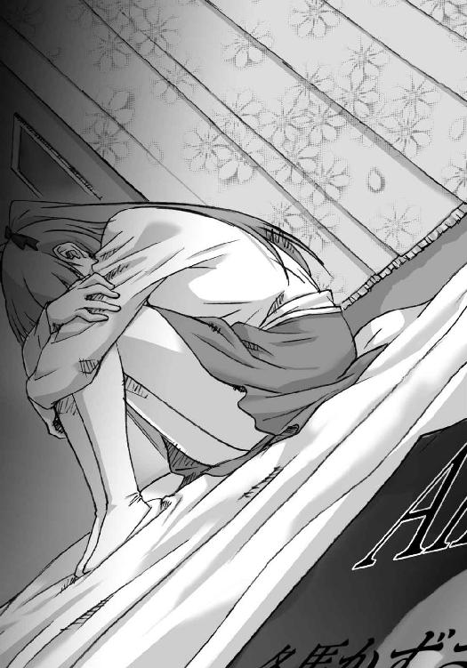
Piece of：春希
「お待たせしました。それではこちらのブレスレットをご用意させていただきます。よろしいでしょうか？」
「あ、はい、大丈夫です」
「ご希望でしたらサービスでイニシャルを刻印することもできますが、いかがなさいますか」
「......イニシャル？」
「はい、アルファベットで、相手の方のお名前や、日付ですとか。今でしたら三十分もあればお渡しできます」
そういえば、三年前は......。
「いえ......結構です。そのまま包んでください」
「かしこまりました。それでは包装させていただきます。少々お待ちください」
ブレスレットを化粧箱に入れてラッピングする店員さんの様子を見ながら、そっと息をつく。
雪菜へのプレゼントを探しに来て、ふとこの店が目に入ったのは偶然だった。記憶がサッと蘇り、引き寄せられるように入ってみたのだった。
それにしても、まだ残ってたんだな、ここ。
たぶんだけどこの店員さんも、三年前と同じ人のような気がする。
「お待たせしました」
「あ、はい」
代金を払いながら、三年前を思い出す。
あのとき買ったのは、『ＳＥＴＳＵＮＡ』と刻印された誕生日プレゼントのシルバーリング。
やっちゃった感のある、でも必死で本気だった贈り物。結局渡せないまま、机の奥にしまい込み、それから一度も取り出していない。
想いを込めすぎて、そしてそれが失敗に終わったせいで、俺たちの関係は急速に壊れていった。
今回は、あんな特別なプレゼントは贈らない。
それでもほんの少しだけ特別であってくれたら、と思いながら二時間近く費やして選んだ、このごく普通のクリスマスプレゼント。
雪菜は......どんな気持ちで、受け取ってくれるだろうか。
「ありがとうございました」
見送られて店の外に出ると──いつの間にか空から、雪が降り始めていた。
「雪......」
確かに天気予報はホワイトクリスマスの可能性を示唆していた。今年一番の寒波により、東京の初雪は今日になるかもしれない、と。
道行く人々が、空を見上げてはしゃいでいる。かと思えばうんざりした顔の人もいる。
とにかく誰もが、今日という日に降る雪の意味を嚙み締めているようだった。
「......行こう」
自分に向けて、そう呟く。
俺にとって雪が降るその意味を、できるだけ考えないようにしながら、駅へと向けて歩き出した。
Piece of：雪菜
「雪だ......」
灰色の空を見上げ、呟く。
「雪だよ............春希くん」
Piece of：春希
『ただいま車両点検のため、上下線ともに運行に遅れが生じております......』
「......くそう」
ここまでの二回の乗り継ぎは、なんとかダイヤ通りに運行していた。けれど最後の乗り継ぎ駅で、とうとう雪による遅れに巻き込まれてしまった。
「間に合わないか......？」
現在、午後四時。
約束は四時半、順調にいけば十五分前には待ち合わせ場所に到着できるはずだった。けど、こうなってしまってはもうわからない。
こんな日に遅れてしまうなんて。プレゼント選びで迷いすぎたな。
「......もしもし、雪菜？」
『春希くん？』
心配させないよう、早めに電話をかけておく。幸いにも、雪菜はすぐに出てくれた。
「えっと、ごめん......ちょっとだけ遅れるかもしれない。乗り換えの最後で引っかかっちゃって。雪でダイヤが乱れてるんだ」
『そっか......しょうがないよ、この天気なんだから』
降り始めた雪は、見る間にその勢いを増していた。都心の交通網を、軽くかき乱すほどに。
せめて映画の上映時間には間に合うといいんだけど。
「そっちはもう着いてる？」
『うん。ちょっと早めに来て、ウィンドーショッピングしてたから。降り始めたのも、こっちに着いてからだったし』
「ごめん、待ち合わせ、昼にしとけばよかった......一緒に買い物してれば」
『お天気のせいだし、仕方ないよ。雪のせい、なら......仕方ないよ......』
「ちょっと遅れるけど、すぐ行くから。映画始まっちゃったら、先に入ってて。遅くなっても、必ず行くから、待ってて」
『......っ！』
「あ、ダメだ、チケット俺が持ってるのか。くそ、ごめん雪菜......」
『ううん、いいよ......もし映画に間に合わなかったら、そのときは一緒にお店回ろうよ』
そう言ってくれる雪菜の優しさが、逆に俺の心を締め付ける。
こんな大切な日にも、俺はまた失敗を繰り返してしまう。
「ごめん、ホントにごめんな雪菜、こんなはずじゃなかったのに、俺っ」
『っ......やめてよ、そんなに一生懸命謝らないで。来てくれたら......それだけでいいんだから』
「え？ 雪菜？」
その語気が、少し変わった気がしたのだけれど。
『あ、えと......まだ大遅刻って決まったわけじゃないでしょ、大げさなんだよ、春希くんは』
「いや、でも遅刻は遅刻だからさ」
『相変わらずだね。とにかく、待ってるから。気を付けて来てね』
「わかった。......っと、どうも二十分遅れで発車するみたいだ。四時半ちょい過ぎには、そっち着けるかも」
『ほらね、それなら充分映画に間に合うよ。別に連絡なんて......いらなかったじゃない』
「けど、雪菜に心配かけたくなかったからさ。とにかく、着いたらまた連絡する。どっか暖かいところで待ってて。それじゃ」
『うん、そうする。じゃ、また後で』
電話を切り、ようやくやってきた電車に乗り込む。
「............」
早く、会いたい。
Piece of：雪菜
電話を切り。
雪菜は空を──灰色の虚空を見上げていた。
「............」
遅くなっても必ず行くから、待ってて。
そんな彼の一言で思い出したのは、三年前の似た台詞。
『遅くなっても、顔だけは必ず出すから』
彼を待っていたあの日。
家族に噓をつき、二人きりの誕生日パーティをしようとしていた、あの日。
独り、ずっと待ち続けて、けれど結局彼は......。
「あと三十分......」
うわごとのように呟く。
「本当に？ 絶対に？」
視線を、空から地面に下ろす。
あの日も雪が降っていた。
けど、それだけじゃなくて。
「雪だよ春希くんっ......雪なんだよ」
最後の日。
最後に、雪菜の親友に会ったあの日も──
「わたし、わたしっ......雪は嫌ぁっ......」
あの日も、白い雪が、降っていた。
Piece of：春希
「はあっ、はあっ......」
本来の待ち合わせ場所だったのは海浜公園。そこからショッピングモールに移動したという雪菜の元へ必死に走り──そして。
「あ......」
「もう。気を付けて来て、って言ったのに」
大勢の人が行き交う、何の変哲もないその場所で。
「雪菜......お待たせ」
「待ってないよ。そんなには」
俺たちは巡り会えた。
やっとこうして、会えた。
「あれ、春希くん、頭に雪積もってる。ちょっと屈んで」
「あ、ああ」
二週間ぶりの再会。でも、お互い会おうとして会ったのは、果たしていつ以来だろう。
「すごいね、駅からここまででこんなに積もるなんて。雪、ずいぶん強くなってきたんだね」
「ああ、今はかなり」
「そっか。今度は後ろ向いて。コートも真っ白だよ」
そんな久々の逢瀬に際し、雪菜はこれまでの重さを持ち込まなかった。顔を合わせたその瞬間から、にこにこと、普通の恋人のように接してきている。
だから俺も、それに倣うことにした。
「ありがと。それじゃ、映画行こうか」
「うん。楽しみだな、最近映画館なんて行ってなかったし。やっぱりポップコーン？」
「そうだな。あ、でも晩飯あるんだからな？ 食べ過ぎないように」
雪菜がそれを望むなら、普通のデートに徹しよう。
どうせ本を──あの記事を見せてしまえば、否応なく雰囲気は変わる。だからせめてそれまでは、普通の恋人らしく過ごそう。
普通のクリスマスを、過ごそう。
「もう、わかってるよ。ご飯食べられないんじゃ残念だし」
「なにせポップコーンの何十倍かかってるんだかわかったもんじゃ......あ」
「え？」
「あ、いや」
しまった、つい零してしまった。
「......ちょっと春希くん、今日のディナーいくらかかってるの？ そういえば有海インテグラルホテルって、高級店ばっかり入ってるんじゃ」
「そ、その辺は気にしないでくれよ。俺が誘ったんだし」
「ダメだよそんなのっ。春希くん、生活のためにたくさんバイトしてるのに。わたしも半分出すよ、割り勘っ」
「そうはいかない、今日ぐらいは出させてくれよ」
「も～っ、わたしは庶民も庶民の、フツーの女子大生なんだよ？ わたしなんかにお金かけてもしょうがないよ。ラーメンだって大喜びしちゃう安い女のコなのに」
「今日のところはフランス料理で喜んでくれよ。な？ ほら、早くしないと映画始まるぞ」
「あ、逃げないでよ春希くんっ」
ほら、これでいい。
俺が普通にしていれば、雪菜も普通の振る舞いをしてくれる。
今だけは本当に、三年前の俺たちのようだった。
たとえ......お互い演じているだけだとしても。
◇
「やまないね、雪」
小さく息をつきながら、雪菜が言う。
「そうだな」
レストランから見る窓の外は、相変わらず粉砂糖でもひっくり返したかのように、静かに雪が降り続いていた。
映画が終わり、コース料理もあらかた済み、時刻は午後九時。
ホワイトクリスマスは、まだ続いている。
「............」
雪菜の横顔を眺めていたら、気付いた雪菜が「何？」と首を傾げる。
「あ、これ？」得意げに、左手のブレスレットを振って。「いいでしょ、素敵な男性がプレゼントしてくれたの。気になる？」
「あのなあ......」
食事の前に渡したクリスマスプレゼントは、さっそく雪菜の細い腕に収まっていた。
「気にならないの？ わたしね、すっごくすっごく嬉しかったんだよ？ その人のこと......今までよりずっと意識し始めちゃってる」
「......へえ。そりゃ大した奴だな、雪菜にそう言わせるなんて」
俺の言葉に、雪菜がふふっと笑う。
「言っとくけど、安物だからな、それ」
「さっきも言ったけど、庶民だからね、わたし」
つつ、とその指がブレスレットを撫でる。
気合いを込めまくったプレゼントは届かないのに、二時間で選んだプレゼントはこうして簡単に受け取ってもらえる。
世の中は、どうしてこうなんだろうな。
「だから、こういうものでコロッと騙されちゃうの。せっかくのフレンチも喉を通らないくらい、感激しちゃうんだ」
「感激でならいいんだけど。......なあ雪菜、大丈夫か？ 本当にあんまり食べてないだろ」
「......大丈夫だよ」
雪菜の言葉には、いまいち信憑性がなかった。
映画にはポップコーン、とか言っておきながら、飲み物にも手を付けなかった。
フルコースのディナーも、スープやサラダは何とか頑張っていたけれど、メインは半分以上残していた。ワインにも口を付けただけだし、何より今、顔色が優れなかった。
「体調悪いんじゃないのか？ それなのに雪の中、無理して出て来て......」
「違うよ。別に熱もないし。測ってみる？」
出された額に手を当てると、確かに病人のような熱さは感じなかった。
「あのね、実は最近ダイエットしてるんだ。夜はサラダだけで済ませたりすることもあって。だからもうお腹いっぱいになっちゃって」
「無理なダイエットは身体によくないぞ。ちゃんと栄養取らないと──」
「って言われると思ったから、黙ってたんだけどね」
「......ホントに平気だな？ 噓じゃないな？」
「春希くんのお財布の中身と同じぐらいには大丈夫」
「それがマジなら今すぐ救急車呼ぶけど？」
「あははっ」
雪菜がいたずらっぽく笑う。ごまかされたような気がしないでもないけど、追及して欲しくなさそうだった。
体調がどうなのか、本当のところはわからない。ただ、たとえ本調子じゃなかったとしても、それを押してまで今のこの時間を過ごしたいと思ってくれていることだけは、伝わってきた。
それは俺も同じことで──だから、言う。
「あ、そういえばさ」
「ん？」
「そのブレスレット、いいな」
「でしょでしょ！ 聞いてくれる？」
馬鹿馬鹿しくてもいい。
雪菜と一緒にいるこの時間を、大切にしたかった。
「とってもいいデザインだよね。これを選ぶ人って、すごくセンスがいいと思うな」
「へえ。雪菜にそう言わせる奴が羨ましいな」
そうやって笑い合いながら。
俺たちはしばらく、そんな優しいやり取りを続けた。
そして──
「......あのさ、雪菜」
デザートの皿が片付けられ、あとは会計を残すだけ（先払いしてあるけど）となってから、俺はようやく本題に入った。
「雪菜に渡したいもの、そのブレスレットと、あともう一つあるんだ」
「......うん」小さく頷く雪菜。「実はずっと気にしてたんだよ。いつ渡してくれるのかなって」
「ごめん、なかなかタイミングがなくて」
いや、本当はあったような気がする。でも、雪菜と過ごす時間が思いのほか楽しくて、それを壊すのが惜しくなっていたのだ。
けど渡さないわけにはいかない。そのために、時間と金をかけて、こんなところにいるのだから。
「はい、これ──俺の初めての記事が載った雑誌」
「わあ、分厚いね。おめでとう、春希くん。本当に......あれ？」
「............」
雪菜の目が見開かれる。
「これって......かずさ？」
「......アンサンブルって雑誌の今月号は、とある若手ピアニストを特集してる」
心臓が鼓動を速める。覚悟はしてきた。でもどこか息苦しさを感じる自分がいた。
「先月の開桜グラフに載った冬馬かずさって奴がすごい反響でさ。急遽、この音楽雑誌でも特集することになったんだ」
「開桜グラフ、って......」
「俺のバイト先、出版社だとしか言ってなかっただろ。実は、開桜グラフ編集部でバイトしてる。......雪菜から電話もらったとき、しらばっくれてた。言えなかったんだ。ごめん」
「............」雪菜は、見てもよくわからない感情をその顔に浮かべた後。「読んで、いい？」
「ああ。どうぞ」
白い指が、とうとうページをめくる。
かずさの記事を探し当て、じっと見つめ始めたところで、俺はたまらず口を開いた。
「グラフの記事書いたの、俺の上司でさ。その人が、俺と冬馬が同級生だったことに気付いて、俺にアンサンブルで記事書くのを任せてくれたんだ」
「............」
「俺、それをいいことに、冬馬を利用させてもらった」
「............」
雪菜は、記事に目を落としたまま、ずっと黙っている。
怒っているのか、呆れて物も言えないのか。
けど仕方ない。どんな反応をされても、それは俺のせいなんだから。
「仕事のためだけに利用して、この記事を書いたんだ」
だから言葉を続ける。俺のしたことを、徹底的に伝えるために。
「酷い真似したって自分でもわかってる。よくわかってる」
「............」
「俺、売ったんだ。あいつとの思い出を、売り渡したん──」
「......ぷっ」
「え？」
ふいに。
「ぷっ、くくっ......なにこれ、すごいこと書いてあるっ」
堪えきれない、とでもいった感じで雪菜が噴き出す。
「へ？ せ、雪菜？」
記事を読んだ雪菜が見せた反応は、俺が予想もしてなかったもの。
くすくす、笑ってた。
「成績は三年間ずっとボロボロだったとか、母親に捨てられたと勘違いしてグレたとか、生活能力が皆無だとか......こんなの書いちゃっていいの？ 新進気鋭のピアニストさんなのに......あははっ」
雪菜は心底楽しそうに笑う。
予想はしてなかったけど、これなら言えるかもしれない。
もう一歩踏み込んでも、大丈夫かもしれない。
「......ウケ狙いだよ。そういうのを書けば、読者が食いついてくると思っただけ。よくあるゴシップ記事みたいなもんさ」
「え？」
「あいつを売ったんだよ。日本中に、売った。俺たちだけの思い出を利用したんだ」
雪菜が、俺を見たまま口をつぐむ。
「冬馬を......俺たちの仲間を、売った。単なる取材対象として扱った。扱えたんだよ、俺。酷い奴だよな。本当のことを書いた。いいことばかりじゃなく、マイナス面も全部さらけ出して」
噓じゃない。ある意味では。
「雪菜、教えて欲しい。俺があいつをこんな酷い扱いしたこと、怒った？ 仲間のこと、こんな馬鹿にしたみたいな書き方した俺を──」
「............」
「薄情だって、思った？」
俺の問いかけに、雪菜はしばらく俯いていた。怒りによるものか、悲しみによるものか。それとも、俺を庇う理由を考えているのか。
「そんなわけ、ないじゃない」
長い沈黙の後に返ってきたのは、そんな呟き。
「春希くんがそんなことするはずないよ」
そう言うだろうな。雪菜は、いつだって俺の非を認めないから。
「でもしたんだ。こんな仕打ちを」
「酷い扱いって......だって、だってこれはっ──」
「これは？」
「......ううん」
雪菜は、小さく首を振った。
後から考えると、このとき雪菜が言おうとしていたことに気付いていれば、何かが違っていたかもしれない。でも、気付けるはずなんてなくて。
「別に、怒らないよ」
「え？」
ふうっと息をついた雪菜が、言葉を紡ぐ。
「かずさってさ、確かにこんな感じだったもんね。よく書けてるよ」
「そ、そう？」
「かずさには悪いけど、全部ホントのことだし......ふふっ、やっぱりおかしい。本人を知ってると余計に面白く感じるね。春希くん、面白い記事だよ、これ」
そう言って雪菜は微笑んだ。
「きっと評価されるよ。改めて、おめでとう」
「あ、ああ、ありがと」
何だろう。
確かに雪菜が笑ってくれている。それは間違いない。
だから俺も、よかった、とほっとしてもいいのかもしれないけれど、なのに違和感を感じて仕方がなかった。
もっと怒ったり、悲しんだり、雪菜のそんな反応を覚悟していたから、なのだろうか？
まるで肩すかしを食ったような、そんな感覚......。
「でもさ、何か信じられないよね。こうやって雑誌で特集されるような人が、わたしたちの親友だったなんて」
そんな俺を余所に、雪菜は話にケリを付けてしまう。纏めてしまう。
「あ。だった、なんて言っちゃダメだね。今でも親友だよね。そうだよね」
「......そう、だな」
糾弾も非難も軽蔑も、何もされなかった。
おかしなぐらいあっさりと、受け入れられてしまった。
そうである以上、もう何も言えなかった。
◇
「小降りになってきたね。少し歩かない？」
「......ああ」
やっと普通に歩けるぐらいの雪になったからか、カップルがそこら中で雪を眺めている。その間を縫って、海浜公園の方へとゆっくり歩いた。
「なんか、デートみたいだよね」
「そうだな」
「もう、そこは『デートだろ』でしょ」
「え、あ、そうか......悪い」
「せっかくカップルの聖地にいるんだよ？ もっと堂々としてて欲しいなあ」
「俺はこういう人間なんだよ。つまんないし地味な男なの」
「そうだったね。わたし、そういうところに憧れたんだし」
「......悪趣味な、奴」
「何て言われても構いません」
雪菜が海の方に顔を向け、「ね、思い出すよね」と呟く。
何を？ と言うのは、あまりにも愚かすぎる。
「あのときも、雪が降ってたよね。ホワイトクリスマス、だったよね」
雪菜が、あの日のことを──というより三年前のことを口にするのは、初めてだった。でもそこから逃げるわけにも、話を変えるわけにもいかない。
「......思いっきり『和』の雰囲気しかなかったけどな」
「だよね！ 和室に浴衣に、温泉旅館っていうシチュエーションだもん」
ふふ、と笑う雪菜。
「思い出すなあ。かずさの運転で、雪山走って、脱輪しちゃって」
「あれはホントに恐怖だったよ。もう二度とゴメンだ」
「でもさ、その後は目の保養が出来たでしょ？ 乙女の柔肌、二人分～」
「ちょっ......み、見てないって！」
「怪しいなー。あのとき皆酔ってたからねー」
「お、俺は二人ほどじゃなかったし」
「けど両手に花状態の混浴だったのは間違いなかったよね？ あははっ」
「......も、もうやめようぜ、こんな話。なんか皆見てるし」
つい大声になっていたらしく、周囲のカップルが迷惑そうにこっちを見ていた。
「ううん。やめない」
ふいに雪菜の表情が変わる。
「だって、あのときと同じ日に、あのときと同じ雪が降ってるんだよ？」
雪菜の視線が、灰色の空を向く。
「ね、雪だよ春希くん。雪は、好き？」
「......別に、どっちでもない」
好きとも嫌いとも、言えるわけがない。
だって、俺が雪菜を裏切る日には、いつだって雪が降ってたから。
「覚えてる？ 脱輪したあのとき、降ってきた雪を」
「............」
「旅館の部屋から眺める、降り積もる雪を。露天風呂に落ちては消える、あの雪を」
「っ......」
「わたし、わたしはね、雪が──」
「やめよう雪菜。三年前と、今を重ねるのは」
「どうして？ 同じように雪が降ってるんだよ？ 真っ白な雪が」
「そういうことじゃなくて、つまり......」
「かずさがそこにいるから？ 違う？」
「............」
違わない。雪、三年前、ときたら、連想ゲームのようにかずさの存在が浮かび上がってくる。
だけどそれじゃあダメなんだ。先へ進むためには、そんなことじゃダメなんだ。
「春希くん。今でもかずさのこと、好き？」
「......もう忘れたよ、冬馬のことは。だから売った。だから利用できたんだよ」
思い出ごと、売っ払った。
「だからさ、三年前にこだわるの、もうやめないか」
「三年前があったから、今のわたしたちがあるんだよ」
「けど、今の俺には何もない。雪菜を傷付けた罪があるだけで」
「春希くんは悪くないよ、わたしがっ」
「ほら、結局こうやって罪の奪い合いになるんだ。こんなの、もうやめよう。忘れようよ、三年前の雪も......あいつのことも」
「かずさのこと、忘れるの？ 忘れられるの？」
「もう忘れたんだ」
「............」
過去をなかったことにするなんて、そう簡単にはできない。
だけど俺たちに必要なのはきっとそれなのだ。
「雪菜。すぐには納得できないと思う。俺だって自分を許し切れるわけじゃない。でも新しい一歩を踏み出したいんだ。ゆっくりでいいから、雪菜と新しい関係を築いていきたい」
今までとは違う、新しい世界へ。
「メールして、電話して、会って、少しずつ。ダメかな」
「......ずるいよ、その言い方。ダメなんて、言えるわけないよ」
雪菜が、そっと俯く。
かずさを忘れて、雪菜のことだけを考える。
本来ならとっくの昔にすべきだったことを、俺はようやく今、実現しようとしている。
「近付きたいんだ。全部忘れて、イチから雪菜を知っていきたい」
「......っ」
雪菜は、ずっと俯いていた。
じっと静かに、色々な想いを巡らせているに違いなかった。
しばらくしてから、屈んでその顔を覗き込むと、見えたのは紅潮した頰。
「プレゼント......」
「え？」
「プレゼント、用意してなかったんだ、わたし。──わざと」
「いや、そんなの気にしな......え？」
「春希くんに、物でお返しできないようにしたんだ。自分に......勇気出させるため」
雪菜が顔を上げる。
と同時に、何かを決意したようでもあり、想いを秘めていると言うには危険な瞳が、その妖艶さで俺を射貫いた。
「今日......泊まってくるって言ってきた」
濡れた唇がそう呟き、俺の耳に言葉が染み込む。
「これが、わたしのプレゼント。春希くんに渡すためだけの」
一歩近付き。
「ありきたりで、身勝手で、押しつけがましいにもほどがあるけれど」
もう一歩近付けば、そこはもう俺の目の前で。
「三年前に、あげるつもりだったわたしを──受け取って、くれませんか？」
「せつ、な......っ」
三年前より美しくなったこの人の、魅力的で蠱惑的な表情を前にして、抱き締めないという選択肢はもう、俺の中にはなかった。
「春希、くんっ......あっ」
「雪菜......雪菜っ」
周りが見てるかもしれない。周りも同じ事をしているかもしれない。だけどもう、俺たち以外の人間なんて、気にする必要もなかった。
ただ腕の中の人だけを、強く抱き締める。
「わたし、わたしね、ずっと頑張ったのっ......近すぎず、離れすぎずの位置で我慢して、ゆっくり近付こうとしたのっ」
「わかってる......」
「けどちっとも距離は縮まらなかった！ ずっとこうして......ふれあいたかったのに」
「うん」
「今までは、ちょっとでも近付いたって実感があると、それ以上踏み込むのが怖くて離れちゃってた。春希くんも、わたしも」
雪菜が、ぎゅっと俺の胸に顔を埋め。
「だから今日は......考える時間もないまま、わたしの決心が鈍らないうちに──奪って」
埋めた顔を、今度は俺の顔の前に持ってくる。
「んっ......」
そして俺たちは、三年ぶりに唇を重ねた。
「ふぁっ......ん、ちゅっ......」
懐かしい柔らかさが、快感となって俺の脳に刻み込まれていく。
「は、んっ......んむうっ......んんぅっ、はんっ......！」
一瞬、優しくしようと思った気持ちは、まったくの無駄だった。
そんな理性は、貪るような本能に取って代わられてしまったから。
「んっ、んっ......ちゅっ......ぷはっ」
しばらくして唇を離すと、細い糸が引かれ、垂れた。
「ひ、久しぶりだった、ね......」
荒い息をつく雪菜。
「ごめん......こんな強く」
「いいよ。春希くんだから、いいの。それに、懐かしくて......本当に、嬉しい」
その震える瞳が、紅い頰が、俺が濡らした唇が、訴えかける。
早くあなたのものにして、と。
「春希くん。あなたがこの三年間を忘れろって言うんなら、わたしは新しい自分に......ううん、なるべきだった自分を、取り戻さなくちゃいけない」
「っ......」
「あなたが好きで好きで大好きで、片時も離れたくない、甘えん坊のどうしようもないわたしに、早く戻らなくちゃいけないの」
「雪菜ぁっ......！」
強く強く、抱き締める。
「好きだ......俺も雪菜が好きだ」
「春希、くん......っ」
頭がどうにかなりそうな香りを、繰り返し吸い込んでいく。
そして、俺は。
「あのさ、雪菜」
「ん......？」
『俺からのクリスマスプレゼント。奢ってやるから、感謝して使えよ』
それはディナーの最中に武也から来た、わざと黙っていたであろう事項を書いたメール。
いつもなら、ふざけるなと一喝するようなもの。
けど、今の俺にとっては。
「ホテルの部屋......取ってある」
「うん......」
この自分の本能を満たすために、何より必要なメールだった。
◇
高層階の窓から見える景色は、相変わらず白い雪に彩られていた。
けれどその勢いはかなり弱まっていて、ホワイトクリスマスはもうすぐ終わりを迎えそうだった。
それと同時に俺たちも、ずっと引きずってきた悲しい関係にピリオドを打つのだ。
「......ふうっ」
ミネラルウォーターのペットボトルから口を離し、息をつく。落ち着こうとして飲んだ水は、しかし乱れた俺の感情を整えることも冷ますこともしてくれなかった。
雪菜は今、シャワーを浴びている。
さっき、部屋に入った瞬間、このまま雪菜をベッドに押し倒したいと本気で思った。それを必死に抑え込み、シャワーを勧められたのは奇跡に近い。
理性の檻の中で本能が牙を剥き、その刻が来るのを今か今かと待ち構えている。
こんなんじゃダメだ、雪菜に優しくなんてできない。安心させてあげられない。
そんな状態の俺に比べ、むしろ雪菜の方が堂々としていた。チェックインのとき、俺が震えながら『飯塚武也』と書いたら、自分はその横にすらすら『水沢依緖』と書き込んだ。......俺にぴったり寄り添いながら。
「はあぁっ......」
何度も深呼吸する。
落ち着け。やっとここまで来たんだ。
当初の思惑とは違うけど、急すぎるかもしれないけど──それでも今、俺たちが同じ部屋にいるという事実。
もう引き返せない。引き返したくもない。
だったら俺にできるのは、少しでも雪菜に辛い思いをさせないことだけ。
二人で朝を迎えたとき、不安や後悔を感じずに、心の底から微笑んでもらえるように。
「......あ」
そんな、必死すぎて情けない俺を、相変わらず無表情で見つめている視線に気付いた。
雪菜のバッグに入りきらず、俺の鞄で預かっていたアンサンブル。
「......なんだよ。そんな目で見るなって」
表紙に写っている女は、髪もドレスも漆黒のピアニスト。
「ったく、いつもいつも、俺のこと馬鹿にしやがってさ」
そっと手に取り、巻頭のカラーページをめくると、そこは彼女のオンステージ。
弾き手、ピアノ、スポットライト。そして無数の観客たちが映し出され。
さらにページをめくると、真っ白な肌をした精緻な顔のアップや、色々な角度からの演奏風景が続く。
「......何なんだよ」
無表情だけれど、どこか満ち足りた様子でピアノを弾いているのが一目でわかる。こんなふうに弾くところ、俺には見せてくれなかったのに。
いや、一度だけあったか......途中で俺が寝ちまったけど。
「............」
なあ、かずさ。
お前、向こうに行ってよかったな。頑張って、成功して、こんなに有名になって。
俺みたいな、演奏中に寝ちまうような素人観客じゃなくて、お前の本当の価値をわかってくれる人たちに囲まれて、本当によかったな。
......けどさ、ちょっと笑っちまうよ。
お前が有名人だとか、新進気鋭のピアニストだとか、天才の血を引くサラブレッドだとか。
三年前、俺が引っ張り出してやらなきゃ、今も変わらず引き籠もってただろうに。
俺が、何もしなかったら──
「......はは」
水を飲んだはずなのに、零れた笑いはカラカラに乾いていた。
Piece of：雪菜
「大丈夫......」
身体を拭き終え、バスタオルを身体に巻いて、雪菜は鏡の中の自分を見つめる。
「大丈夫、だから」
呟き、自分に言い聞かせる。
「わたしはずっと春希くんが好きだった。春希くんも、好きだって言ってくれた。わたしを......求めてくれてる」
鏡に映る自分が口を動かす。
「不安なんかない。後悔なんてしない。だって、全部忘れたんだから」
雪菜は、気付かなかった。
「だからこれでいい。普通の恋人同士がすることを、普通にするだけ」
鏡の前を離れ、彼の元へ行こうとしたとき。
「かずさ。わたし今日、春希くんを奪う」
もう渡さないから、というその呟きは、過去を何も忘れていないのと同じだということを。
いや、ただ気付かないふりをしていただけかもしれない。
「春希くん......」
それでも、彼の元へ近付くと、思考は否応なくただ一つのことに染まる。
緊張しない方がおかしい。
経験なんて、ないのだから。
「......雪菜」
ベッドに座っていた彼が、こちらを向く。
「あ、あの、ええと──」
「こっち来る？」
「え？ あ、その」
「大丈夫だよ、落ち着いて。時間はたっぷりあるんだ。ゆっくり、焦らずいこう」
「あ......うん」
「とりあえず座ったら？ そうだ、何か飲むか？」
「............」
「雪菜？」
「えと、春希くん、その、シャワー......」
「ああ、そっか、そうだな。じゃあ行ってくるよ」
立ち上がった、彼に。
「ね、春希くん？ なんだか──」
「何？」
なんだか、様子が変わってない？
「......ううん、何でもない。それじゃ、待ってるね」
「ああ」
バスルームへと消える姿に違和感を覚えつつも、またすぐに緊張で思考が塗り替えられる。
妙に落ち着かなくなり、うろうろし、手持ちぶさたになってバスタオルを巻き直してみたり。
「～～っ、や、やっぱり何か飲も......え？」
ふと、視線に気付いた。
「かず、さ」
ベッドの上に置かれたアンサンブル。
「ごめん、かずさ。今のわたし、見ないで」
そう呟き、その瞳から逃れるべく片付けようと──
「......なんで、ベッドの上にあるの？」
Piece of：春希
「はあっ......」
熱いシャワーを頭から浴びる。
もうすぐだ。俺たちの長い苦しみが、今夜で終わる。
これで不安に襲われることもない。思い出して泣くこともない。もう何の重荷も、感じなくなるんだ。
なあ、かずさ。
俺、今日でお前のことを忘れるよ。
これからは、雪菜と二人で新しい道を歩いていくんだ。
けどそのことを謝ったりしない。お前が俺みたいな男を相手になんてしなければ、俺と雪菜はもっと早く、三年前からこうなれたはずだから。
「っ......」
やれやれだ、こんなときまでお前に責任転嫁しようとしてる俺は最悪だよな。
そうさ、俺は最低最悪なんだ。
だからお前を──お前の思い出を、切り捨てる。
「あっ......う、っぐ......うああっ......！」
漏れる俺の嗚咽は、シャワーと共に流れ去っていく。
これでさよならだ。
じゃあな、かずさ......。
Piece of：雪菜
『峰城大学付属高校時代』
『欠席日数は、一年生で五十四、二年生で九十、普通科に移った三年生では二十一日』
『各学年とも成績は最低レベル。卒業のため、三年生の冬はかなりの苦戦を強いられたほど』
『なお、冬馬かずさは在学中、健康そのものであった』
「......ぷっ。春希くんらしい嫌味」
『写真４ 峰城大学付属高校 第二音楽室』
『峰城大学付属高校には、第一から第三まで、三つの音楽室がある』
『第二音楽室は、主に予備教室として使用されているが、冬馬かずさが在籍した三年間は、彼女専用の練習場として占拠されていた』
「ふふ......わたしたちも、共犯だけどね」
『写真６ 峰城大学付属高校 学園祭ステージ』
『母親との確執からピアノを弾くことのない日々が続いていたが、それでも冬馬かずさは音楽から離れることができなかった』
『バンドを組んだこのときのライブでは、キーボードに留まらず、サックス、ベースとその多才ぶりを見せつけ、喝采を浴びた』
「............」
『入学当初、かずさは音楽科の同級生と衝突し、そのあまりの激しさや冷たさのため、ほんの数日で完全に孤立した』
『しかしそこに至ったのには、音楽科の授業内容、練習時間、何より実力に一切の妥協を許さない、彼女の音楽に対する誠実さが一因となっていたのではないだろうか』
『冬馬かずさは、母・曜子から、その類い希なる美と才能と共に、高潔で厄介な性格もまた受け継いでいた』
『そのため、母親同様、いやそれ以上に、日本の音楽界には収まりきらなかった。そのことが逆に、曜子の恩師でもあるマーティン・フリューゲルとの出会いを生み、高校卒業後、かずさはその才能を開花させていくこととなった』
「っ......」
『彼女は今、ウィーン郊外の一軒家で暮らしている。かつては誤解もあったが、今では自他共に認める唯一無二の存在──師であり、ライバルでもある、母親・冬馬曜子と共に』
『今まさに世界に向けて飛び出そうとしているその才能は、これからますます大きく発揮されていくことだろう』
『どのような道を辿っていくにせよ、それが希望と賞賛に彩られたものであることを願いつつ、これからも彼女の活躍に期待したい』
「うっ......あぁっ」
『そして、彼女を応援したいと思う方は、是非一つだけ覚えておいて欲しい』
『冷たく、他人を寄せ付けないその態度の裏には、誰よりもピアノを愛し、そうであるが故に不器用な性格があるということを』
『冷徹であれ冷血ではない人間くささを持っているということを、忘れないでいていただきたい』
『もちろん──彼女本人ももう少し態度を軟化させた方が良いのは、言うまでもない』
「あっ、ひっ、ぐ......う、うわああああっ......」
Piece of：春希
「......雪菜」
「............」
バスルームから出ると、雪菜はベッドの上にぺたりと座り込んでいた。
顔を伏せたまま、こちらを見ない。ピクリとも動かない。
「雪菜？」
正面に回って顔を覗き込むと、俯いたまま顔を逸らしてしまう。
それが恥ずかしさによるものなのか、それとも何か別の感情によるものなのか......。
「どうかした？ 怖く、なった？」
雪菜は小さく首を横に振る。どうしたんだろう。その様子は、さっきまでとは明らかに何か違っていた。
とにかくこちらを向かせようと、その頰に手を伸ばし......。
「痛っ!?」
触れた俺の指は、無遠慮な力で瞬時に叩き落とされた。
「............」
雪菜は、その行為の意味を説明しようともしない。
そのせいで俺はようやく、自分が拒否されていることに、気付く。
「雪菜......どうして」
わけがわからぬまま、けれどふと、ベッドサイドのテーブルに置かれたアンサンブルが目に入った。
「あ......ごめん、しまい忘れてた」
かずさの視線にバツの悪さを感じ、反射的にその雑誌へと手を伸ばした。
けれど今度は──
「え？」
その手を、雪菜の手がやんわりと制した。
じわりと、嫌な予感が心に広がる。
「......本当はね」
雪菜の口から零れる声は、今の心境がありありとわかるほど、か細く......か弱く。
「わたし、この記事、もう何十回も読んだ。発売日に、自分で買って」
「え......」
「特に十二から十六ページ。かずさの生い立ちから、ウィーンに発つまでの話」
その可能性は充分あり得た。いや、むしろ予想しておくべきだった。だって、他ならぬかずさが表紙を飾った雑誌を、雪菜が見逃すはずないのに。
そうして買ったアンサンブルの、俺が担当した箇所を見抜くことだって、雪菜には楽勝だったはずなのに。
「穴が開くほど読んだよ。読む度にいつも、最初は苦笑から始まって、そのうちお腹抱えて笑っちゃって──」
「............」
「最後にはね、涙が止まらなくなる」
そっと、雪菜が顔を上げた。
湯上がりで火照ったはずの肌は、血の気が引いたように白く。
泣きはらしたのであろう瞳だけが、真っ赤に充血していた。
「ねえ春希くん。もう一度答えて」
色を失った表情で、そっと言葉を紡ぐ。
「春希くんはかずさのこと、忘れたの？」
「......忘れたよ」
声が喉に貼り付く。それでも俺は言う。
忘れたんだ。だから書くことができたんだ。売り飛ばすことができたんだ。
過去のものに、したんだ。
「どうやって？」
「どう、って......」
一瞬、自分が揺らいだ。どうやったんだ、俺？
忘れたから売れたのか？
それとも、売ったから忘れられたのか？
「あれから三年も経ったんだ......ずっと考えないようにしてたら、どんな想いだって消える」
ぶれちゃダメだと、なんとか口を開く。
けれど俺のそんな迷いを見透かしたように、雪菜は言う。
「そんなの──噓だよね」
「違う、俺は......」
「来ないで！」
無意識に手を伸ばし近寄ろうとした俺を、雪菜が拒絶する。
「何を忘れたって？ 何を消したって？ 春希くんは......三年前と何も変わってないじゃないっ」
「せ......雪菜？」
「もう、正直に言っちゃうね。春希くんが素直になってくれないから......わたし、キレちゃうね」
赤く腫れた瞳が、真っ直ぐ俺と対峙した。
正面から、堂々と。
「この記事、何十回も読んで、その度に笑って、泣いて......心がね、めちゃくちゃに壊されそうだった。眠れなかった。ご飯も食べられなかった」
「......」
「だって、言ってること、何も変わってないんだもん。三年前の、かずさに惹かれてた、かずさを追いかけていた、あの頃の春希くんと、何も変わってないんだもん」
「そんな......そんなわけない」
雪菜の言葉に、足元が崩れそうな感覚を覚えた。だから必死に否定する。
「俺はあいつを利用したんだ。思い出を売り飛ばしたんだ。悪口並べて、面白おかしいゴシップに仕立て上げて......」
「こんなに愛が籠もってるのに？ かずさへの気持ちが、こんなに滲み出てるのにっ!?」
だけど雪菜は、瓦解する足場から俺を降ろしてくれない。
「かずさのことを悪く言う？ そんなの三年前と同じじゃない。しかも、悪口から始まって、いつの間にか庇うようになって、最後は皮肉みたいなお説教で締めて......一緒だよ、かずさのことを語る春希くん、三年前と一緒だよっ！」
「っ！」
「あの頃の、ままなんだよ......」
雪菜の瞳から溢れ出す、雫。
「こんなの......こんなに想いの詰まったラブレターを見せつけられて、わたしどうすればいいの？ 忘れたなんて言われても、どうやって信じたらいいの？」
俺はもう、動けない。
「............噓つき」
「せつ、な」
「噓つき。噓つき、噓つき、噓つきっ！」
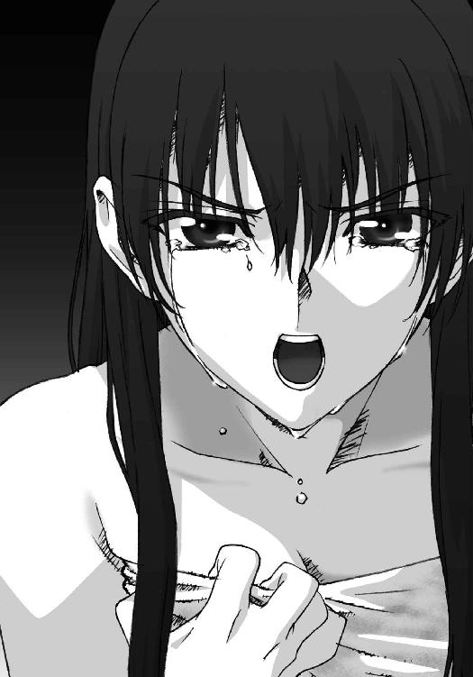
雪菜の叫びは、俺と、そしてきっと雪菜自身の胸を、抉っていく。
「それでも、それでもあなたに抱かれたら、きっと変われるんじゃないかって。信じたフリができるんじゃないかって、そう思って......だけど」
「............」
「さっき、わたしがお風呂から出て来たとき、春希くん、何か様子が変だった。急に落ち着きすぎてた。すぐには理由がわからなかったけど......結局わかっちゃった」
アンサンブルが、かずさが、物言わぬ瞳で俺たちを見つめる。
「春希くん、かずさと話してたんだよね」
違う、という言葉は喉の奥で止まった。
「かずさに背中押してもらったんだよね。かずさを諦める勇気と、わたしを抱く勇気を、一纏めにして、かずさにもらったんだよね」
「俺、は......」
忘れたと思ってた。少なくともそう思い込めていた。
だけど実際は、ただ大切なことから目を逸らし続けていただけだった。
だって雪菜の言うことを俺は否定できない。
忘れたはずの奴に話しかけ、売り飛ばしたはずの思い出を観ていた。
「ずるいよね、春希くん。何年経っても、噓をつき続けるんだね。わたしにだけじゃない......誰よりも自分に噓ついてる」
............。
「わたしと自分を騙してるんだよ。ただ......わたしだけのために」
俺は。
結局俺は、何も変わってなかったんだ。
「三年前から、ずっと......」
そう。
三年前から、ずっと。
◇
ホテルを出ると、雪はもうやんでいた。
代わりに目に付いたのは、深夜の街の街灯に照らされる、道に積もった雪──
「............」
綺麗なままの白もある。
けれど、踏み付けられ、ぐちゃぐちゃになった灰色の方が、大きな広がりを見せている。
その上を歩くと、鈍い音が耳に届き、鈍い感触が足の裏に伝わる。
「............」
俺が雪菜を裏切る日には、いつも雪が降っていた。
今日はやんだのに。今日こそは大丈夫だと思ったのに。
けれど結局は、俺の心も雪菜の心も、虚しく壊れぐちゃぐちゃに融けていった。
綺麗だったはずの、この淡雪たちのように。
Piece of：雪菜
「わたし、馬鹿だ......」
どうしてこうなるのだろう。
彼が、自分自身を欺いてまで、雪菜の想いに報いてくれようとしたのに。
三年越しの想いが、やっと叶うはずだったのに。
たとえ彼が、雪菜のことを世界で二番目に愛しているのだとしても、それで充分だったはずなのに。
「どうして、こうなっちゃうんだろうっ......」
この三年間、ずっと彼との距離を縮めたかった。近付きたかった。
でもそれは叶わなくて、辛い日々を送った。
ところが、ようやくこうして彼が近付いて来てくれたというのに、最後の最後で雪菜は彼を拒絶してしまった。
自分が行けば、彼が離れる。
彼が来てくれれば、自分が離れてしまう。
もう、わけがわからなかった。
どうしていいのかも、自分がどうしたいのかも、何もわからず。
「うっ、あっ......あああああああ～っ！ うわああああああっ......！」
日付が、イブの取れたクリスマスへと変わろうとしていた。
ぐちゃぐちゃの心が泣き叫ぶ、その悲しみと共に。
Piece of：かずさ
「......ふう」
跳ね回っていた指を、鍵盤から下ろす。
悪くない。最近、日に日に調子が上向きになっていくような気がする。
もちろん自分の実力は把握しているし、目指すべき高みはまだ遙かに遠い。
それでも思う。この腕はまだまだ伸びていくだろうと。
自画自賛ではなく、確信にも似た、そんな予感。
「ふーん。結構いいじゃない」
かけられた声にビクリとして振り向く。
「......ちょっと。音も立てずに入ってくるなって何回言ってる？」
「あら、演奏中に邪魔する方が失礼でしょ」
「だったらそもそも入ってくるな」
「いいじゃないの、聴きたいんだから」
くすくす笑う母親に、まったく、とかずさは息をつく。
「このところずいぶん調子よさそうじゃない」
「まあね。でもまだまだ引き上げていかないと」
「頑張ってよ？ 私の地位を脅かすぐらいになってもらわないと、こっちも張り合いがないわ」
「ふん......母さんぐらいならそう遠くない。そっちこそ、最近ぼやぼやしてるんじゃないの。あっちこっち遊び回ってるみたいだし」
「残念ながら飛び回るのがお仕事よ。事務所の社長なんてやってると疲れるわ。適当なところで誰か代わってくれる人がいるといいんだけど」
「悪いけどあたしは永遠にゴメンだから」
「悪いけど私も会社を潰す気はないわよ」
どういう意味だと睨むと、曜子はまたくすくす笑った。
「なんだよ、結局邪魔するんじゃないか。暇潰しなら出てってよ」
「ごめんごめん。ちゃんと用があるのよ。あのねかずさ、大晦日のことなんだけど」
「パリでニューイヤーコンサートだろ？ 何、やっぱりあたしには来て欲しくなくなった？」
この三年、母親のコンサートには都合が付く限り顔を出してきた。
「まあ半分正解ってトコかしら」
「半分？ まさか中止になったとか？」
「それも半分正解」そう言って曜子が差し出したのは、一通の封筒。「はいこれ、クリスマスプレゼント」
「何これ？ ......航空券？ なんだよ、結局パリ──」
言いかけて、行き先がフランスでないことに気付いた。
「......えっ？」
しかも、券に記載されていたその国は。
「実はね、私のニューイヤーコンサート、やるにはやるけど、パリでっていうのは真っ赤な噓。本当はね、東京でやるのよ」
「なっ......!?」
「びっくりした？ 我が子ながら、綺麗に騙されてくれて嬉しい」
事態を呑み込むのにしばらくかかる。
「な、なんでそんな噓」
「だからサプライズよ。驚かせようと思って。......ま、思わぬ収穫があったのはホントに予想外だったけど」
「え？」
「ううん、何でも。とにかくそういうわけだから、あなたも一緒に行くのよ。日本へ」
「ちょ、ちょっと待って。この噓つき、なんでいつもそう勝手なんだよ。だいたいあたし......日本には」
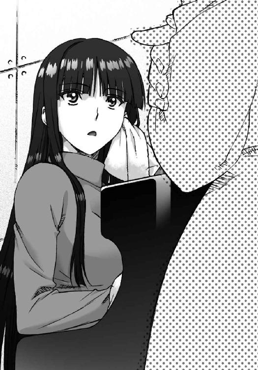
帰りたく、ない。
「私の実力程度なら遠くないんでしょ？ ホントにそうなのかどうか聴かせてあげる」
「いや、でもさ......悪いけど次のコンサートにしてよ。日本へは他の誰かを連れて......」
「ダメ。今回ばかりは、どうしてもあなたじゃないと」
「なんでだよ？」
「そこはほら、せっかく一緒に暮らしてるんだから、やっぱり親子一緒に新年を迎えたいし」
取って付けたようなその理由は、本心なのだろうか。
「とにかく決定。年末はそのつもりでね。それじゃもう邪魔しないから、存分に練習して」
「あ、ちょっとっ」
曜子がひらりとドアの向こう側に消え、仕方なくかずさは視線を手元に移す。
残されたのは、この一枚の紙切れ。
「............」
正直なところ、話が急すぎてわけがわからなかった。
ただ、母親が自分をどこに連れていこうとしているのか、それだけははっきりしていて。
行きたくない。あの国に戻りたくない。
そんな思いが心の内から湧き出てくる。
とはいえ嫌なら嫌で、曜子が何を言おうとかずささえ頑なに拒否すれば済む話だった。
それだけのことだけれど、かずさは──
「日本......」
曜子を追いかけてチケットを突き返すことも、この場で破り捨てることも、どういうわけだかできなかった。
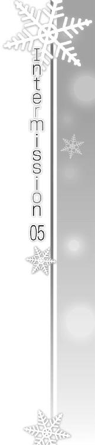
ＤＶＤの再生ボタンを押すと、テレビに映像が映し出される。
それは三人の高校生が演奏するバンドの、ライブステージの録画。
まずは彼らの演奏がしばらく続き、そして。
『えっと、こんにちは皆さん。軽音楽同好会です！』
曲の合間に、ボーカルの少女がＭＣを挟む。
「あーあー。こんにちは皆さん、軽音楽同好会です！ ......ちょっと違うな」
『こんにちは皆さん。軽音楽同好会です！』
「こんにちは皆さん。軽音楽同好会です！ うん、よし」
一人頷くと、再び場面を進め、次の台詞へ。
『こんなにたくさんの人に来ていただいて、感謝してます』
「こんなにたくさんの人に来ていただいて、感謝してます......」
それが幾度となく繰り返され。
「えっと。次が......最後の曲です」
やがて最後には、『彼女』はもはやＤＶＤを見ることなく。
「実は次の曲は、わたしたちのオリジナルなんです。まだ誰にも聴いてもらってなくて......おまけに練習時間もあんまりなかったんですけど」
台詞のように言葉を諳んじる。
「でも、自画自賛できるぐらいすごくいい曲になってますので、きっと皆さんにも気に入ってもらえると思いますっ」
何度も何度も、こうして同じことを繰り返す。
「それじゃあ、わたしたちの曲、聴いてください」
ただ一人、誰もいない部屋の中で、こうして。
「軽音楽同好会オリジナル曲で、タイトルは......」
──届かない恋です！
次巻へつづく
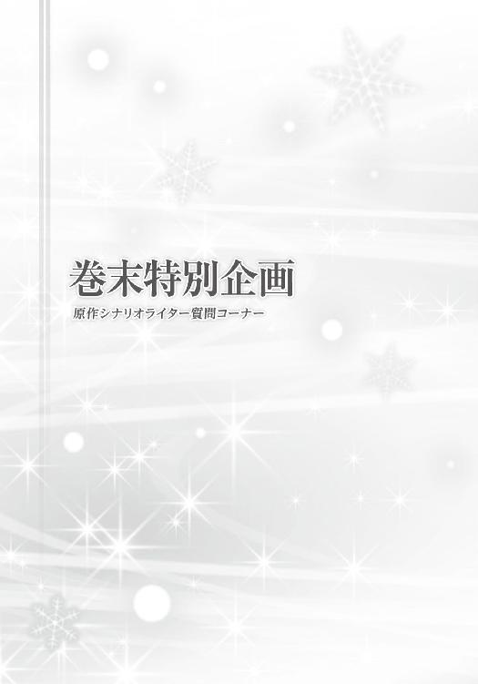
さて、今回の巻末特別企画は原作シナリオライターの丸戸史明氏への質問コーナー。この質問コーナーはＧＡ文庫のアンケートフォームから実施されたものです。
質問をお寄せいただいた方々には「どのヒロイン派か」の投票をお願いしてありまして、質問文の末尾にあるカッコ内に質問者の支持ヒロインを併記してあります。これを見ると「ははぁ」「なるほど」「ふーん」など、いろいろなものが見えてくるかもしれません。
それでは早速、質問コーナーを始めましょう。いざ。
Ｑ：丸戸先生が付き合うなら、雪菜ですか？ かずさですか？ 僕は中川さん（ファミレスの同僚）がいいです!!（雪菜派）
Ａ：すいません、そちらは自由回答なのにこちらは二択というのはどういう了見なのでしょうか？ まぁそれはともかく、自分は春希君をとてもリスペクトしていますので、間違いなく先に告白された方と付き合います。
Ｑ：丸戸先生が把握されているイメージでは雪菜派とかずさ派は何：何くらいの割合ですか？ ちなみに僕は雪菜派なんですが、周りがかずさ派ばかりで肩身が狭いです......（雪菜派）
Ａ：何のための今回のアンケート企画とお思いか。というわけで今回のアンケートのキャラ投票のうち、かずさの得票率は......えっと、６割？ ドンマイ雪菜派。
Ｑ：丸戸先生がこの作品で一番思い入れがあるキャラは誰ですか？ 気になるのでお願いします。（小春派）
Ａ：そりゃ春希ですよ。大好きなキャラクターです。ええ、この作品の女性声優さんたちに「春希はないわ～」とか否定されるたびにムキになって反論するほど大好きなんです。ていうかみんなやめてよ！ 俺の春希をいじめるな！
Ｑ：雪菜がよけいな介入しなけりゃ、かずさと春希はいずれ結ばれたんですよね？（千晶派）
Ａ：ないない、あのチキン春希にそんな甲斐性なんかあるもんか。それでこそ僕の見込んだ男なのです。
Ｑ：初めまして。小春大好きです。ＰＣ版の『introductory chanpter』（以下『ＩＣ』）エンディング後に、すでに『closing chapter』（以下『ＣＣ』）のムービーがありましたが、『ＩＣ』のシナリオ製作中に、すでに『ＣＣ』ヒロインの構想や、その設定を前提としたシナリオ構成をしていたりするのでしょうか？（小春派）
Ａ：そりゃ、全ヒロインのプロットがある程度揃ってなければシナリオ作成にＧＯなんかかかりませんよ。その中でも千晶はかなり早い段階で詳細まで決まっていました。まぁ彼女は『ＩＣ』のヒロインでも......おっと。
Ｑ：随所に色んな意味を持たせている『WHITE ALBUM2』ですが、キャラクターの名前にはどういった意味があるのでしょうか？（かずさ派）
Ａ：その辺りのエピソードは、ＧＡ文庫さんのサイトにある『月島雅也×丸戸史明対談』に詳しいかと（宣伝）
Ｑ：シナリオを書く上で気をつけている事、これだけはポリシーを持っている、というものをお持ちであれば教えてもらいたいです。（雪菜派）
Ａ：「ユーザーに受ける」ことを第一に考えて突き詰めていきたいと常に考えています。この「受ける」ってのは、別に笑いを取るってだけじゃなくて、色んな方向に感情を動かすことで、自分の書いたモノを記憶にとどめてもらうということで......なので、この『WHITE ALBUM2』で心に一生消えないトラウマを刻んでくれた方がいたとしたら、それにまさる幸せはありません（ドＳ）
Ｑ：書いていて辛かったシーンはありますか？ あるならば一番辛かったのはどのシーンですか？（かずさ派）
Ａ：（以下ネタバレ注意）それはやはりかずさＴＲＵＥの友人、会社、小木曽家との某三連コンボですね。アレを書いている間はもう気が触れたみたいにケタケタ笑いつつ......いや、陰鬱な表情を浮かべつつすらすらと......いや、グダグダと筆を滑らせていたような気がします。
Ｑ：ドエストッキンガーな丸戸先生に質問です。『WHITE ALBUM2』は愛情、友情、ストッキングなどの素晴らしさが描かれた作品ですよね。しかし、小春だけは「これぞストッキング」と思えるシーンが無かったように思います。な、なぜですかっっ!! あ、雪菜さんのはごちそうさまでした。（雪菜派）
Ａ：これはかなり衝撃的な告白なのですが、実は小春のグッディーズ制服は、自分がシナリオを書いていた時点ではストッキングを履かせているつもりはありませんでした。小春シナリオが上がってからなかむらさんが「小春だけストッキング履くシーンがなかったので設定追加しておきました」と笑顔で僕に告げたとき、「ああ、自分はストッキングから逃れられないんだな」と痛感したというか、もとから逃げる気はまったくないというか。
Ｑ：丸戸先生の書かれる作品にはかなりの確率で過去に因縁のあるヒロインが登場し、転じてその失恋からのリトライが描かれていると思うのですが、このテーマ（？）を多く書かれることに理由はあるのでしょうか？ ヒロインたちには丸戸先生の理想が反映されているというのは以前どこかのインタビューで拝見したと思うのですが、その点を差し置いても、なんとなく丸戸先生の作品が私小説のようにも思えてきた今日この頃です。（小春派）
Ａ：これが私小説とかどれだけリア充なんだよ......しかし現実は、似たような後悔はあっても似たような展開はなかったというところ。妄想食って生きてるシナリオライターなめんな。
Ｑ：丸戸さんが今まで経験した一番の二択は何ですか？（小春派）
Ａ：アニメの脚本の仕事とラノベの仕事のどちらを取るか......結果、どっちも取りましたけどね！
Ｑ：ゲーム（とくに『ＩＣ』）で挿入されたピアノ曲は、丸戸先生が選定されているのでしょうか。所々でかずさが弾くピアノは凄く印象的で、その奏でられる音楽、調べてみれば曲名にまで、その時々のかずさの気持ちが表現されていると思うのです。（千晶派）
Ａ：あれは下川社長を中心としたサウンドチームの選曲です。こちらからはほとんど指示をしたことがないのですが、相当にシナリオを読み込んで、気合いを入れて演出して頂けて幸せでした。ま～この作品をアクアプラスさんに売り込みに行ったのって、あのサウンドチーム目当てという部分もかなりありましたしね～。
Ｑ：ピアノを弾くだけの『新妻かずさアフター』が発売される可能性はあるのでしょうか......？（かずさ派）
Ａ：そして今回の質問の１／４がこれとほぼ同じ内容......可能性ならゼロではない、と上原れなさんも『HIGH SPIRITS』の中で歌ってらっしゃいます。この歌も収録されたアルバム『l'espoir』フィックスレコードより好評発売中。
Ｑ：雪菜ルートエンディング後はどうなりますか？（雪菜派）
Ａ：え～、このノベライズの最終巻で語られるんじゃないの？（問題発言）
Ｑ：もし『WHITE ALBUM3』を描くとしたら『WHITE ALBUM2』と「同じ時代の違う場所」でしょうか？ 「違う時代の同じ場所」でしょうか？ それとも「まったく違う時代と場所」でしょうか？（かずさ派）
Ａ：もし『WHITE ALBUM3』を描くとしたら『WHITE ALBUM2』と「まったく違うライター」です。
お楽しみいただけましたでしょうか。
では、また。
著者
月島雅也（つきしま まさや）
１９８５年生まれ。
好きなココイチのトッピング→なす。
イラスト
なかむらたけし
アクアプラス所属の原画描き。
この小説が発売になる頃には「WHITE ALBUM2」ＴＶアニメが絶賛放映中（のはず）です。
そちらも宜しくご視聴お願いいたします。
イラスト
柳沢まさひで（やなぎさわ まさひで）
フリーアニメーター。
原作ゲームのお手伝いをさせて頂きました。
正直、久しぶりだったので......覚えていない事も多く......思い出しながら描いてみました......。
ファンレター、作品の感想をお待ちしています
＜アンケートページはこちら＞
https://emob.jp/m/fi.php?a=gabunko&d=6&i=5544
（このページのスクリーンショットを撮って、ＱＲコードリーダーアプリで読み取ればアンケートページにアクセスできます）
〈あて先〉
〒１０６－００３２
東京都港区六本木２－４－５
SBクリエイティブ（株）
ＧＡ文庫編集部 気付
「月島雅也先生」係
「なかむらたけし先生」係
「柳沢まさひで先生」係
http://ga.sbcr.jp/
ＧＡ文庫
ＷＨＩＴＥＡＬＢＵＭ２
雪が紡ぐ旋律３
月島雅也
発行人 小川 淳
発行所 SBクリエイティブ株式会社
〒１０６－００３２
東京都港区六本木２－４－５
装 丁 株式会社ケイズ（大橋勉／菅田玲子）
印刷・製本 中央精版印刷株式会社
２０１３年１０月３１日 初版第一刷発行
２０１４年１月１日 電子第一版発行
©Masaya Tsukishima ©2012 AQUAPLUS ISBN 978-4-7973-7497-1